העמוד הזה טוען את התצלומים ואת המסמכים ישירות מתיקיית docs/ שלצדו — לחיצה על כל תצלום פותחת את קובץ המקור המלא. אם פתחתם אותו מחוץ לתיקייה, התמונות לא ייטענו.
רחל צדוק, שנקראה בבית "רוצי", נולדה ב-16 באפריל 1929 בוולובה שבהרי הקרפטים — עיירה הונגרית ששמה אוקרמזו (Ökörmező) וכיום מיז'יריה שבאוקראינה. אביה היה סוחר עורות; אמה באה מכפר הררי סמוך; היו לה שני אחים ושתי אחיות. ב-16 באפריל 1944, יומיים לפני יום הולדתה החמישה-עשר, נאספה המשפחה מביתה. ארבעה שבועות בגטו, רכבת אחת, וב-19 במאי הם על הרמפה באושוויץ. מתוך שבע נפשות הבית שרדו שלוש. רחל עברה את אושוויץ, את שטוטהוף כאסירה מספר 38444, את מחנה העבודה בטורן ואת צעדת המוות; עלתה ארצה ב-1946, נישאה לאברהם צדוק, וחיה בחולון עד פטירתה בינואר 2021.
מה המסמך הזה עושה. הוא מנסה לענות, מסמך אחר מסמך, על שאלה אחת: מי בדיוק היו האנשים האלה, ומה בדיוק קרה להם. כל קביעה שבו נשענת על מקור — קישור חיצוני אל הארכיון שממנו נלקח, וקישור פנימי אל עותק שמור שלו כאן. מה שלא אומת מסומן ככזה, בסולם קבוע של ארבע דרגות. מה שנבדק ולא נמצא — נרשם גם הוא.
מאיפה להתחיל, לפי מה שמעניין אתכם:
- רוצים את הסיפור — ציר הזמן, מוולובה לחולון, ואחריו סיפור ההצלה של גדליהו.
- רוצים לדעת מי קרוב למי — עץ המשפחה ואינדקס האנשים, ואז עץ המשפחה המורחב לפירוט דור אחר דור.
- רוצים לדעת מה באמת הוכח — מה מאומת, מה כמעט ודאי, ומה פתוח. זהו הפרק שקובע את מעמדה של כל טענה בדוח.
- רוצים לבדוק אותנו — גלריית המסמכים, אינדקס המקורות, ועל המחקר: שיטה, מקורות ומגבלות.
- רוצים להמשיך מכאן — צעדים פתוחים, מדורגים לפי מה שאפשר לעשות היום ומה מחייב פנייה לארכיון.
פרק א' — מי הייתה רחל: השמות והזהות
שמה המצטבר בכל הרשומות: רחל ("רוצי") צדוק, לבית סטרולוביץ-רפפורט (וברישום האזרחי: פרקש). תאריך לידה: 16.04.1929 (ברשומת הלידה האזרחית: 12.04.1929 — על הפער וההסבר ראו בהמשך הפרק), בוולובה — הוא השם היהודי-צ'כי של העיירה שנקראת היום מיז'יריה (ובהונגרית Ökörmező). מדובר באותו מקום בדיוק: "נולדה בוולובה" ו"נולדה במיז'יריה" הן אותה אמירה בשמות מתקופות שונות.
ריבוי השמות הוא מפתח להבנת המסמכים — והמחקר הנוכחי פענח אותו סופית:
- סטרולוביץ (Strulovits/Sztrulovics; ברשומות הלידה האזרחיות בתעתיק "Struljovic", וברשומת הלידה של גיטה — "Strulovic") — שם המשפחה מצד האב: סבהּ של רחל היה יעקב סטרולוביץ מקושלובו, בנם של לייב וריבקה סטרולוביץ.
- רפפורט (Rappaport) — שם נעוריה של סבתהּ שרה, ילידת וולובה, בת למשפחת בעלי האחוזות המקומית. בני המשפחה השתמשו בו לצד סטרולוביץ (ובוולובה — בעיקר בו). התופעה מוכרת ביהדות הקרפטים: נישואים דתיים ללא רישום אזרחי גרמו לכך שילדים נרשמו על שם משפחת האם, ושני השמות נדדו יחד דורות.
- פרקש (Farkas) — שם נעורי אמהּ רבקה-רוזה. מאותה סיבה, ברישומים רשמיים (כולל רשומת העדות ביד ושם) רחל מופיעה גם כ"פרקש".
- צדוק — שם נישואיה בישראל.
ברשומות שטוטהוף היא רשומה "Strulowits Ruci, ילידת 16.04.1927" — יום וחודש מדויקים, שנה "מוקדמת" בשנתיים: הוספת גיל מכוונת בסלקציה, כדי להיראות כשירה לעבודה (היא הייתה בת 15). הדבר מתועד במפורש בעדותה: בסלקציה באושוויץ ענתה רחל שהיא בת 15 — וקאפו נתנה לה מכה, אמרה למנגלה "בת שמונה עשרה", ואחר כך רדפה אחריה: "תזכרי, את בת שמונה עשרה" [01:12:43] (פרק ו'1).
רשומת הלידה האזרחית של רחל — והפער בן ארבעת הימים
רשומת הלידה האזרחית של רחל עצמה שמורה במאגר JewishGen תחת האיות "Struljovic" — התעתיק שבו נרשם שם המשפחה בספרי הלידות האזרחיים (על ההפניה לאיות זה נתונה תודה ללארה דיאמונד, ראשת פרויקט תת-הקרפטים ב-JewishGen):
Ruchlja, נולדה 12.04.1929 בוולובה (Volove/Mizhhirya); האב: STRULJOVIC Leba, האם: FARKAS Rifka; הערה: "Father claimed paternity" (האב הכיר באבהותו — הרישום המנהלי המקובל לילדי זוגות שנישאו בנישואים דתיים בלבד). מקור: ספר הלידות של אזור מיז'יריה 1928–1931, ארכיון DAZO, פונד 1606, אופוס 6, דלו 118, רשומה 104/1929.

באותו חיפוש אותרה גם רשומת הלידה של אחותה סימה: "Semo, נולדה 06.12.1926 בוולובה", אותם הורים ואותה הערה (דלו 119, רשומה 300/1926).
הפער בתאריכים — ומה משמעותו: הרשומה האזרחית נוקבת 12.04.1929, ואילו כל התיעוד המאוחר — רישומי שטוטהוף (יום וחודש), כרטיס ארולסן, רשומת יד ושם והמסורת המשפחתית — נוקב 16.04.1929. פער בכיוון דומה — התאריך האזרחי מוקדם מתאריך המסורת — קיים גם אצל סימה, אך בהיקף אחר: הרשומה האזרחית 06.12.1926, מול 26.12.1926 ברישום שטוטהוף. ההסברים האפשריים: התאריך האזרחי הוא המדויק, והמשפחה שימרה תאריך אחר (למשל המרה מתאריך עברי, או יום שנקבע בטעות ברבות השנים); או טעות מפענח באינדקס — אצל סימה במיוחד, היפוך ספרות 06↔26 הוא חשד מתבקש. יוער שהפער אינו יכול להיות תוצאה של רישום מאוחר: רישום באיחור היה מפיק תאריך אזרחי מאוחר מהאמיתי, וכאן הוא המוקדם מבין השניים. הדוח ממשיך לנקוב 16.04.1929 — התאריך שרחל עצמה מסרה כל חייה — בציון הפער; העתק מאושר של הרשומה מ-DAZO (ההפניה המדויקת ידועה כעת) יוכל להכריע.
רשומת הלידה של גיטה — אותרה מצד האם: חיפוש "Farkas" במאגר (18.08.2026) העלה גם את רשומת הלידה של האחות הצעירה: "Gizela", נולדה 26.03.1936 בוולובה; האב: STRULOVIC Leopold מקושלובו, האם: FARKAS Roza מקרייניקובו; הערה: "Father claimed paternity" — בדיוק כברשומות של רחל וסימה. מקור: ספר הלידות של אזור מיז'יריה 1934–1937, פונד 1606, אופוס 6, דלו 258 (שורה 86 לשנת 1936) — תצלום הרשומה. שם האב נרשם כאן בתעתיק שלישי — "Strulovic" — ולכן הרשומה חמקה מסריקות שני הסלים הקודמים.
מה עדיין אינו באינדקס: סריקה חוזרת ומלאה של שני "הסלים הפונטיים" (466 רשומות בסל "Strulovits" — מהן 252 רשומות לידה — ו-5 רשומות בסל "Struljovic", 18.08.2026) העלתה שאין באינדקס רשומות לידה לדב (~1924) ולגדליה (03.03.1931) — אף שספרי מיז'יריה מפוענחים לפחות עד 1931 (ולשנים 1934–1937). ייתכן שנרשמו באיחור, בספרים שטרם פוענחו, או כלל לא. אגב הסריקה תועדו בוולובה גם לידות לאימהות אחרות לבית סטרולוביץ — פאני/פייגה (נשואה לאלתר באומגרטן) ושרה/לנקה (נשואה לפנחס נוימן), ילדים ילידי 1922–1930 (דלו 84/110; תצלום) — קרובות משפחה אפשריות של לייב שטרם זוהו.
פרק ב' — העיירה: וולובה / Ökörmező / מיז'יריה
העיירה נקראה בפי יהודיה וולובה (יידיש: Volovo), בהונגרית Ökörmező ("שדה השוורים"), בצ'כית Volové, והיום מיז'יריה (Міжгір'я), מחוז זקרפטיה, אוקראינה — עיירה הררית על נהר הריקה, כ-60 ק"מ צפונית לחוסט. (לא להתבלבל עם וולובץ/Volóc — עיירה אחרת.)
הקהילה היהודית
יהודים בוולובה מאמצע המאה ה-18: 11 נפשות ב-1768, 130 ב-1830, 269 ב-1877, 766 ב-1921 — ו-942 ב-1941. קהילה חסידית דוברת יידיש, עם בית כנסת (בספרות הקהילה מוזכרים שניים), מקווה ובית עלמין הקיים עד היום. כתבה בשבועון היהודי-הונגרי "Egyenlőség" מ-7 במאי 1911 מונה בעיירה 120 משפחות יהודיות ומפרטת את משלחי ידן: 24 עגלונים, 18 פועלי יום, 18 חנוונים, 15 בעלי משק זעיר, 7 חייטים, 7 מוזגים, 5 סנדלרים, 5 סוחרי עצים, 5 בנאים, 3 קצבים, 2 שענים, 2 אופים, ואחד מכל אחד מאלה: נפח, נגר, פחח, כורך ספרים וסוחר יין (העמוד המקורי · בצפיין Arcanum). בהונגרית: "kitűnik, hogy Ökörmezőn lakik 120 zsidó család" — "מתברר שבאוקרמזו מתגוררות 120 משפחות יהודיות". הכתבה נכתבה כהגנה על יהודי הוורחובינה מפני עלילת ה"כוזרים" המלווים בריבית, והיא מוסרת גם שמתוך 958 משפחות יהודיות בכל אזור ההר, מאה היגרו לאמריקה.
ב-1921: 39 מ-45 החנויות בעיירה בבעלות יהודית, 23 בעלי מלאכה, בנק וכמה בתי חרושת (KehilaLinks מיז'יריה). ולצדם "אגודת האשראי היהודית" של אוקרמזו — שרישומה בעיתון הרשמי ההונגרי (Központi Értesítő, 26.11.1942) אותר במלואו: "Zsidó Hitelszövetkezet, Ökörmező" ("אגודת אשראי יהודית, אוקרמזו"), נוסדה באספה מכוננת ב-11.03.1923, נרשמה מחדש בבית המשפט המלכותי בחוסט ב-19.11.1941 בעקבות צו ראש הממשלה 6060/1939, ומטרתה בלשון התקנון: "a kizárólag zsidó tagok anyagi helyzetének javítása" — "שיפור מצבם החומרי של חבריה, שכולם יהודים". ברשימת ההנהלה שבהודעה: ציקרמן זולטן, דוידוביץ' איגנץ, לנדאו יוסף, כץ איגנץ, ד"ר רקוש ינו, שפר אברהם ונוימן שנדור מאוקרמזו, גרינברג הרמן ממיידנקה, גרוס שלמה מאלשוהידגפטק וחיימוביץ' הרמן מטורוניה; ההודעות פורסמו ב"עיתון יהודי הונגריה" או ב"עיתון היהודי האורתודוקסי", ובשמות הצ'כוסלובקיים הקודמים — "Židovské úvěrní družstvo ve Volovém" ("אגודת האשראי היהודית בוולובה") (העמוד המקורי · בצפיין Arcanum).
נתוני האוכלוסייה, מניין בתי הכנסת, נתוני 1921 ורשימת רבני העיירה שלהלן מובאים מספרות הקהילה (עלון יוצאי קרפטורוס וKehilaLinks מיז'יריה) ולא ממסמך מקור שאותר בתיק זה — טעונים אימות.
רבני העיירה (מספר מרמרוש): ר' אהרן מאיר פרידלנדר, ר' אלכסנדר צבי קלינברג, ר' מרדכי אליעזר ובר, ר' ישראל יעקב יוקל טייטלבוים ("הרב מוולובה", כיהן 1894–1924), בנו ר' אהרן (נרצח 25.05.1944) ונכדו ר' יצחק (נספה 11.04.1945).
משפחת רפפורט — מבעלי הקרקעות הגדולים של העיירה
העיתונות והמרשמים ההונגריים מתעדים ברצף את אחוזת רפפורט באוקרמזו לאורך יותר מ-40 שנה:
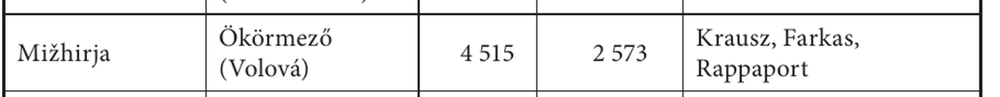
| שנה | תיעוד | מקור |
|---|---|---|
| 1893 | "Rapaport Gedajlo" — אחוזה של 2,174 הולד (≈ 1,250 הקטר ≈ 12,500 דונם). טורי המרשם: 1,672 יער · 340 מרעה · 66 שטח בלתי-מניב · 56 אחו · 38 שדה חרוש (טורי הגן, הכרם והקנים ריקים). סכום הטורים 2,172 — שניים פחות מהסך המודפס; כותרת הטבלה מציינת "kikerekitve" ("מעוגל") | מרשם בעלי הקרקעות של הונגריה 1893, עמ' 408 · העמוד המקורי · בצפיין Arcanum |
| 1896 | ביערות שסביב אוקרמזו — 54,000 הולד (≈ 310,800 דונם) המוחזקים במשותף בידי כלל בעלי האזור — נמנים בין ארבעת בעלי הקרקע הפרטיים הגדולים "אגושטון, איז'ק, רפפורט וקראוס", לצד אוצר המלוכה, הכפרים ומשפחות האצולה יארמי, קריצ'פלושי, וטשי, לצקו, חורינסקי וטלקי | Edvi Illés Sándor, A magyar királyi államvasutak … áruforgalmi viszonyai 2 (בודפשט 1896), עמ' 13 · העמוד המקורי · בצפיין Arcanum |
| 1897 | "Rappaport Gedálya, בעל קרקע (tulajdonos)", אוקרמזו — במפקד המשקים החקלאיים | Gazdacímtár 1897 (הסטטיסטיקה החקלאית של כתר הונגריה), מחוז אוקרמזו · העמוד המקורי · בצפיין Arcanum |
| 1897 | מכירה פומבית נגד רכושו (ספר האחוזה מס' 1370 באוקרמזו); אשתו מגישה הצעת נגד | Budapesti Közlöny 10.12.1897 · העמוד המקורי · בצפיין Arcanum; הידיעה גם ב-Magyar Ujság 08.12.1897 · העמוד · בצפיין Arcanum |
| 1900 | "Rappaport Gedálya" — 3,810 הולד (כ-2,190 הקטר ≈ 21,900 דונם) | מרשם בעלי הקרקעות 1899–1900 · העמוד המקורי · בצפיין Arcanum |
| 1910 | "רפפורט גדיילו נפטר לא מכבר, ובספרי האחוזה של אוקרמזו רשומות על שמו 120 חלקות" | Görög katholikus szemle 25.12.1910 · העמוד המקורי · בצפיין Arcanum; הכתבה הארצית שקדמה לה — Budapesti Hírlap 23.12.1910 · העמוד · בצפיין Arcanum |
| 1912 | "יורשי רפפורט גדיילו" (Rappaport Gedajló örök.) — 2,176 הולד, אוקרמזו; ולצדם "האלמנה רפפורט גדיילו" (Özv. Rappaport Gedajlóné) — 435 הולד | מרשם המשקים Gazdacímtár 1912, עמ' 444 · העמוד המקורי · בצפיין Arcanum |
| 1928 | האחוזה הגדולה באוקרמזו (וולובה): 4,515 הקטר (≈ 45,150 דונם), מהם 2,573 הקטר יער (≈ 25,730 דונם) — בבעלות Krausz, Farkas, Rappaport | לשכת הקרקעות הצ'כוסלובקית (מאמר Koblasa — שמור בתיקייה) |
מקורות הטבלה: המרשמים והעיתונות ההונגרית — בארכיון העיתונות Arcanum/ADT; סריקות העמודים המלאות הורדו במנוי ושמורות בתיקיית עמודי המקור ומקושרות מכל שורה. שורת 1928 — מאמר Koblasa (המאמר בתיקייה · תצלום השורה · PDF במקור). מרשם 1912 — המסמך היחיד המתעד ישירות את חלוקת האחוזה אחרי מות גדליה (1908/9): הקרקע רשומה על שם היורשים והאלמנה.
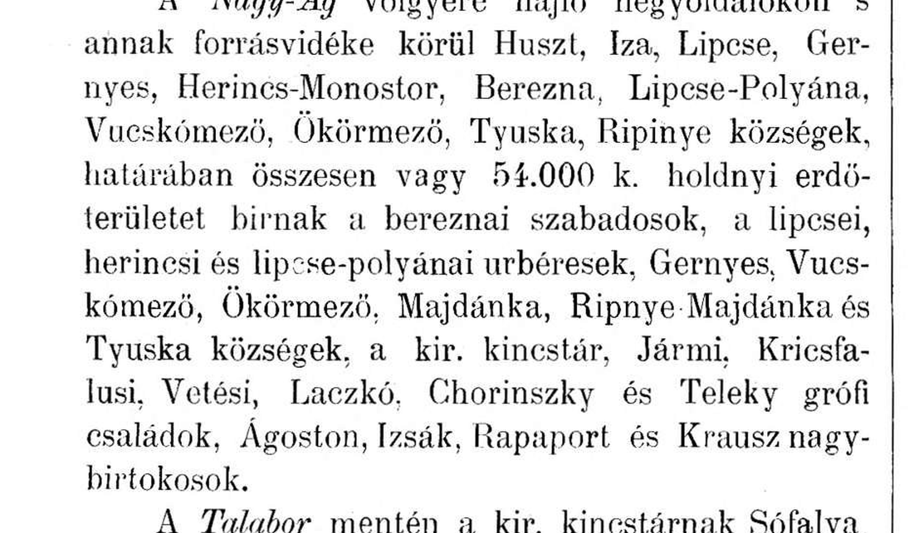
הערת קנה מידה והמרה: בהונגריה שימשו היסטורית שתי מידות "הולד" — ההולד ההונגרי הישן (1,200 עמות מרובעות ≈ 4,316 מ"ר) וההולד הקדסטרלי (1,600 עמות = 5,755 מ"ר ≈ 5.75 דונם). המרשמים כאן נוקבים במפורש בהולד הקדסטרלי — בכותרת הטבלה של מרשם 1893 כתוב "Kataszteri holdakban (kikerekitve)" (ראו העמוד המקורי · בצפיין Arcanum); מכאן 2,174 הולד ≈ 12.5 קמ"ר ו-3,810 הולד ≈ 22 קמ"ר (וגם לפי המידה הישנה הקטנה — סדר הגודל דומה). ההיקפים גדולים אך אופייניים לאחוזות יער הרריות בקרפטים — כמעט כל השטח יער ומרעה, לא קרקע חקלאית: באותו עמוד עצמו של מרשם 1893 רשומים בכפר גם קהילת אוקרמזו (6,684 הולד) ואוצר המדינה (3,267 הולד), ואחוזת רפפורט (2,174) גדולה משל משפחת הרוזן טלקי (573) ומשל קראוס דוד (1,574) — הגדולה בין בעלי הקרקע הפרטיים. אחוזת 1928 (45,150 דונם) אינה של רפפורט לבדם אלא משותפת לשלוש משפחות (קראוס, פרקש, רפפורט), ורובה יער.
הרשומות האזרחיות (ספרי מיז'יריה, מאגר הונגריה של JewishGen) קובעות: גדליה רפפורט היה אביה של שרה, סבתה של רחל. זו החוליה שמחברת את רחל אל שושלת האחוזות שבטבלה לעיל, ולכן היא מוצגת כאן בראיה עצמה:
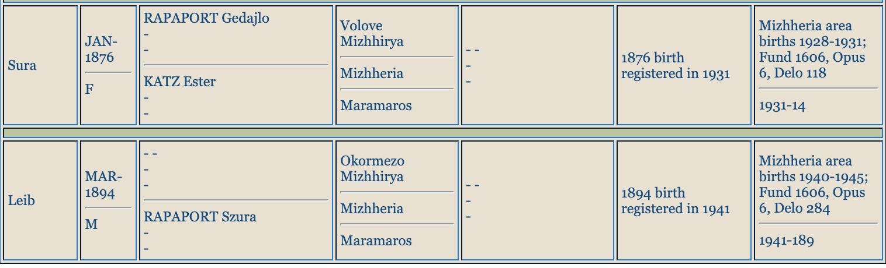
אלה הפרטים המלאים העולים מהרשומות:
- גדליה (Gedajlo/Gedálya) רפפורט נולד ב-01.04.1846 באוקרמזו (כך ברישום האזרחי המאוחר של נישואיו, 1903), בן משה (Mozes) רפפורט ויֶנטה לבית שפיגל (Spiegel) — דור נוסף אחורה, אל תחילת המאה ה-19. ברשומה נרשם "בעל אחוזה" (foldbirtokos/Homesteader).
- גדליה נשא שלוש נשים: ריבקה לבית גרוסמן (בתם שיינדל נולדה 15.10.1869, נישאה ללזר זיסוביץ — ומכאן משפחת זיסוביץ-רפפורט של וולובה); אסתר לבית כץ (Katz Ester) — אמם של שרה ("Sura", ינואר 1876 — סבתה של רחל!) ושל נתן (Nuszen Nathan, 12.11.1879, סוחר עצים); וב-06.08.1884, בקרצ'ונפלבה (Karácsonyfalva) שבמרמרוש — מינדל (Mindje) לבית ברקוביץ (בנם יוסף-דוד, נ' 16.10.1891, זוהה בדף עד הנוקב בשמות שניהם — ראו להלן), ילידת 04.01.1865 (נפטרה לפני אוגוסט 1944 — מצוינת "המנוחה" בהודעת ה"מבוקש" נגד בנה מאיר, ראו בהמשך), שילדה לו את אלדר (נובמבר 1885 — "בעל קרקע", הוא "רפפורט אלדר" ממועצת בנק החיסכון!), ברטה (05.02.1889), פרידריקה (20.12.1894), זלמן (08.03.1897), הרמן (01.04.1904, נפטר בן 7 שבועות) ומאיר (28.01.1908).

איור 5 — הרישום האזרחי של נישואי גדליה רפפורט (04.03.1903, אוקרמזו): נולד 01.04.1846, בן Mozes רפפורט וJenta שפיגל; הכלה מינדל ברקוביץ ילידת 04.01.1865המסמך המלא (בתיקייה) - גדליה נפטר בין 1908 ל-1909: בנו האחרון נולד בינואר 1908, ובין דצמבר 1909 לפברואר 1911 נולדו שלושה נכדים ששמם גדליה — בן לשיינדל וזיסוביץ (20.12.1909), בן לנתן (05.06.1910) ובן לשרה ויעקב (02.02.1911) — מנהג האשכנזים לקרוא על שם סב שנפטר. זה מתלכד עם הידיעה בעיתונות מדצמבר 1910: "רפפורט גדיילו נפטר לא מכבר... 120 חלקות על שמו".
- השם "גדליה" חוזר מאז בכל ענף: אחיו של אריה גדליה (1911), אחיה של רחל גדליה (1931), בן-הדוד גדליה בן מנדל (1936) — כולם על שם אבי השושלת.
- מאיר, בן הזקונים — הודעת ה"מבוקש" מ-1944: בעלון החיפושים המשטרתי Bűnügyi Körözések Lapja (גיליון 39, 23.09.1944, עמ' 1188) פרסם בית המשפט המלכותי בחוסט שתי הודעות סמוכות. הודעה 8678 — "Rapaport Májer alaposan gyanúsítható zsarolás vétségével" ("רפפורט מאיר חשוד באופן מבוסס בעבירת סחיטה"): נולד אוקרמזו, 28.01.1908; שפותיו הונגרית, רותנית ויידיש; דתו ישראלית; נשוי לרוזה לבית נוילינגר; מקצועו טכנאי שיניים; אביו "néhai Rapaport Gedejlan" (רפפורט גדיילן המנוח) ואמו "néhai Berkovics Mengye" (ברקוביץ מנגייה [מינדל] המנוחה) — ומכאן שמינדל נפטרה לפני אוגוסט 1944. הודעה 8679 — אשתו רוזה (נ' חוסט 13.09.1912, עקרת בית, שמות הוריה "לא ידועים") — נחשדת באותה עבירה. מספר התיק (1942.B.1936) מלמד שהפרשה נפתחה עוד ב-1942; הצו הוצא ב-14.08.1944 ופורסם ב-23.09.1944 — חודשים אחרי שיהודי המחוז כבר גורשו: בית המשפט ההונגרי המשיך לרדוף על הנייר אנשים שלא היו עוד. העמוד המקורי · תצלום שתי ההודעות · בצפיין Arcanum

רפפורטים נוספים בחיי הכלכלה של העיירה — כולם ממוקמים במשפחה. לצד כל קביעה: המקור המדויק (ארכיון העיתונות Arcanum), ומתחתיה תצלום קטע המקור (הקבצים ב-docs/evidence/).
סריקות המקור המלאות: עמודי המקור ההונגריים שצוטטו בפרק זה הורדו במלואם מארכיון Arcanum/ADT (במנוי) ושמורים בתיקיית עמודי המקור — 19 עמודי PDF באיכות מלאה; ליד כל קביעה בהמשך מופיעים קישור לעמוד השמור וקישור ישיר לעמוד בצפיין Arcanum.
רפפורט אלדר (בנו של גדליה, כאמור) — בחבר המנהלים המייסד של "בנק החיסכון של אוקרמזו בע"מ" (Ökörmezői Takarékpénztár Rt., נוסד 15.09.1910, הון יסוד 100,000 כתר): רישום הייסוד ב-Központi Értesítő (עיתון מרשם החברות), 09.10.1910, מונה אותו בין שמונת חברי הדירקטוריון · העמוד המקורי · בצפיין Arcanum; וכך גם שנתון Mihók-féle Magyar Compass 38/2 לשנת 1910/11, עמ' 1146 · העמוד המקורי · בצפיין Arcanum. בהמשך התקדם: שנתוני Magyar Pénzügyi Compass מתעדים אותו כ-"vezérigazgató" — מנכ"ל הבנק הכלכלי של נאג'סלש (Nagyszőllősi közgazdasági bank rt., נוסד 1912) — הן ב-1915 (עמ' 645 · העמוד המקורי · בצפיין Arcanum) הן ב-1917–18 (עמ' 678 · העמוד המקורי · בצפיין Arcanum); בבנק החיסכון של אוקרמזו עצמו כיהן באותה עת כמנכ"ל קון אדולף · העמוד המקורי · בצפיין Arcanum. ב-1909 נשא בחוסט את חוה-אווה וייס — ואחיו נתן נשא ב-1906 את אחותה ברטה וייס (רשומות הנישואים — JewishGen, ספרי חוסט).
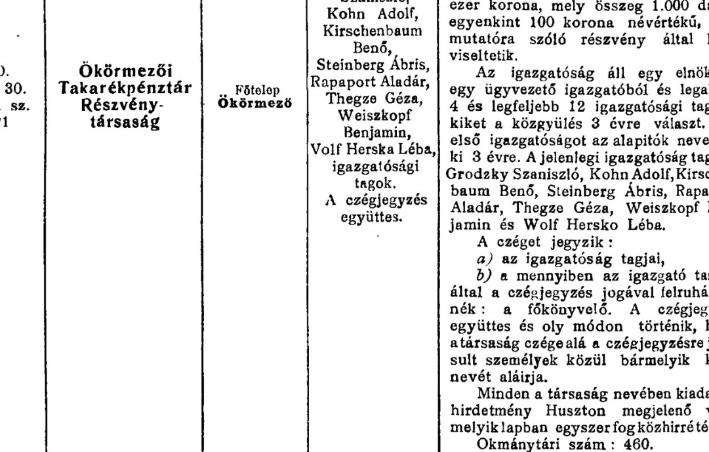


רפפורט דז'ה (Dezső), תושב אוקרמזו — נושא משרה באותו בנק נאג'סלשי שאלדר עמד בראשו: ב-1915 בוועדת הפיקוח (Felügyelő-bizottság; עמ' 645 · העמוד המקורי · בצפיין Arcanum), וב-1917–18 כבר בדירקטוריון (Igazgatóság; עמ' 678 · העמוד המקורי · בצפיין Arcanum); מופיע כעד בחתונת פרידריקה בת גדליה (1914, רשומת הנישואים) — ככל הנראה בן משפחה קרוב, אולי בן נוסף של גדליה.
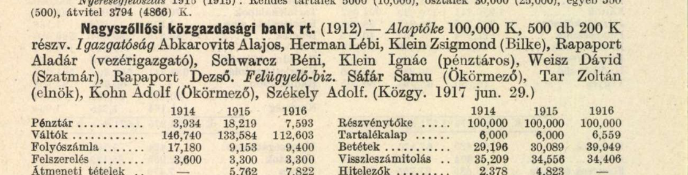
רפפורט שאול — בדירקטוריון (Igazgatóság) ובוועדת הפיקוח של חברת רפסודות העצים של גדות הטיסה (Tiszavidéki tutajtársulat rt., מרמרוש-סיגט; נוסדה 1911), שאתריה (Telepek) באוקרמזו ובמיידנקה ובה כ-200 פועלים והון של 300,000 כתר: Nagy Magyar Compass 43/2 לשנת 1916 (עמ' 430, מדור "Iparos-részvénytársulatok" — חברות מניות תעשייתיות · העמוד המקורי · בצפיין Arcanum) ו-46-47/2 לשנת 1920 (עמ' 581 · העמוד המקורי · בצפיין Arcanum) — זיהוי החברה הושלם עם הורדת העמודים המלאים. קשרו המשפחתי של שאול לגדליה לא הוכח: הוא אינו בין ילדי גדליה שברשומות. חיפוש רשומת לידה עבורו העלה מועמד — "Soel", נ' 03.11.1873 במרמרוש-סיגט, בן יוסל (Joszel) ומרים רפפורט (מאגר לידות מרמרוש, JewishGen; תצלום הרשומה); ההתאמה למושב החברה (מרמרוש-סיגט) מרמזת שמדובר בענף רפפורט של סיגט, לא בענף האוקרמזואי — הזיהוי טעון אימות.

סלומון (Salamon, ובעברית שלמה) רפפורט, יליד 1856 וולובה — אפשר שאחיו של גדליה, טעון אימות — קיים ענף מקביל בעיירה (נשותיו פרל וייס ושורה אייזלר; ביתו תועד במפקד 1921, בית 127 — JewishGen/Hungaricana). ובדור קודם: חיה רפפורט, ילידת ~1836 אוקרמזו, בת מוסקו (משה?) רפפורט ומלכה לבית סטרולוביץ (רשומת פטירתה, 1904 — JewishGen; תצלום המקור) — עדות לקשרי רפפורט-סטרולוביץ עוד בדור שלפני יעקב ושרה. חיזוק עצמאי נוסף: יוסף-דוד רפפורט, יליד וולובה 16.10.1891, שגורש מסלובקיה באפריל 1942, נרשם באושוויץ כאסיר 33088 ונספה ב-26.05.1942. בדף העד שהוגש עליו רשומים שני הוריו: אביו "גדלי" (Gedali) ואמו "מינדה לבית ברקוביץ" (Minda Berkovic) (הרשומה ביד ושם · הרשומה בתיקייה) — בדיוק זוג ההורים שגדליה ומינדל ברקוביץ מהווים מאז נישואיהם ב-1884, ושנת לידתו נופלת בתוך טווח לידותיהם (1885–1908). זהו אפוא בן נוסף של גדליה ומינדל — כמעט ודאי (פרק ח').
גם הידיעה על מות גדליה שמורה במקורה: "Görög katholikus szemle" (הביטאון הגרקו-קתולי, אונגוואר), גיליון 25.12.1910.
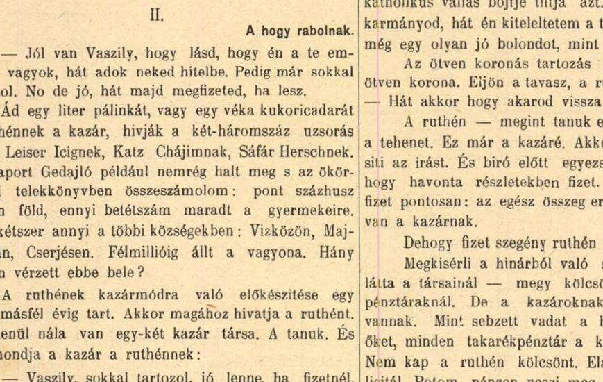
הבית והעסק של המשפחה
למשפחה היה הבית הדו-קומתי הראשון בוולובה; בקומה השנייה פעל קן בני עקיבא (כך בעדותה של רחל, פרק ו'1) — התנועה שמגרעינה עלו אחר כך גם היא וגם גדליהו. האב אריה היה סוחר עורות — בדף העד שמילאה רחל בכתב ידה: "סוחר — עורות לפרוות"; ברשומת יד ושם: "מנהל". במדריכי העסקים של Volové (הסריקות בתיקייה) מדור העורות (Kůže—Leder) מונה את Eizner ו-Katz — ייתכן שעסק המשפחה נרשם בשם אחר, פעל בלי רישום במדריך, או הופיע במהדורה שטרם אותרה (מדריכי העסקים שבידינו אינם מונים את עסק המשפחה). מעדותה של רחל: למשפחה הייתה גם תחנת דלק ואחוזה חקלאית עם עדר כבשים. תחת השלטון ההונגרי הוחרם עסק האב (עדות רחל), וב-1943–44 תועד בעיירה תהליך ה"החלפה" — לשכת "בָרוש" המקומית של הסוחרים הנוצרים בראשות חוכר המנסרה.
שורשי ההורים: משפחת האב מקושלובו (Keselymező) — שם תועד בעיתונות עוד ב-1913 "סטרולוביץ לזר, החנווני מקושלובו"; משפחת האם מקרייניקובו (Mihálka) ומדנילובו הסמוכה.
פרק ג' — עץ המשפחה המורחב
(מבוסס על הרשומות האזרחיות של מחוז מרמרוש במאגר JewishGen ההונגרי, גיליון מפקד 1921 המקורי, 46 רשומות שמיות, שתי רשומות קטלוג של העדות ו-44 סריקות דפי עד מיד ושם, רשימות הוועדה הסובייטית 1946, רשומות שטוטהוף וארולסן, עלון קרפטורוס 137 ואתרי הנצחה. כל הרשומות שמורות בתיקיות המקורות)
הערת מפתח לקריאת הרשומות: יעקב ושרה נישאו בנישואים דתיים בלבד (שנת נישואיהם אינה מתועדת; ההערכה ~1892 שבעץ הגרפי נגזרת מלידת הבכור ב-1894), ולכן ברשומות האזרחיות חלק מילדיהם רשומים על שם האם — "Rapaport" — לעיתים בלי שם האב כלל. כך נולד הכפל "סטרולוביץ-רפפורט" שליווה את המשפחה, וכך גם אריה-לייב מופיע ברשומת לידתו כ"Leib, בן Rapaport Szura".
דור 0 — אבות השושלת (תחילת המאה ה-19)
- משה (Mozes) רפפורט ויֶנטה לבית שפיגל — אוקרמזו/וולובה. הוריו של גדליה (נ' 1846). ייתכן שהוא "מוסקו רפפורט" שאשתו (האחרת?) מלכה לבית סטרולוביץ ילדה את חיה (~1836).
- זלמן ברקוביץ ופריידא לבית קאופמן — קרצ'ונפלבה (Karácsonyfalva, כיום Crăciunești שברומניה). הוריה של מינדל (נ' 04.01.1865), אשתו השלישית של גדליה. שניהם מצוינים כמנוחים ברשומת הנישואים של 1903 — כלומר נפטרו לפני כן. אפשר ש… — טעון אימות: בנם של גדליה ומינדל שנולד ב-08.03.1897 נקרא זלמן, ואפשר שנקרא על שם סבו מצד אמו, כמנהג הקריאה על שם נפטר. אלא שמועד מותו של זלמן ברקוביץ אינו ידוע — הראיה היחידה היא שהיה מנוח ב-1903 — ולפניו כבר נולדו לזוג ארבעה ילדים, ובהם שני בנים, שלא נקראו כך; ולכן זו אינדיקציה בלבד, לא אישוש.
דור 1 — הסבים של אריה ורבקה (סבי-סביה של רחל)
- לייב (Leba) סטרולוביץ וריבקה (Rifke) — קושלובו (שם נעוריה נרשם פעם "Najovics" ופעם "Sapszovics"). ילדיהם המתועדים: אסתר (נ' ~1849, אלמנת דוד פוקס, נפטרה בקושלובו 13.07.1939 בגיל 90 — בבית מס' 83), משה (נ' 01.07.1861, בעל נכסים, נשוי לחיה-הנדל לבית הרשקוביץ — נישואיהם נרשמו אזרחית רק ב-1942, בגיל 80!), לזר (נ' 1864 — "סטרולוביץ לזר החנווני מקושלובו" מהעיתונות של 1913; נישא בשנית ב-1939), יעקב (נ' 1870) — סבה של רחל, וחנה (Hani) (נ' 1872, נישאה להרמן יעקובוביץ מסוואליאבה; בנה לייבה נ' 1905).
- גדליה רפפורט (נ' 01.04.1846, אוקרמזו) ואסתר לבית כץ — הוריה של שרה, סבתה של רחל. בעל האחוזות הגדול של וולובה (הפירוט המלא — פרק ב'). ילדי גדליה משלוש נשותיו: שיינדל (1869), שרה (ינואר 1876), נתן (1879), אלדר (1885), ברטה (1889), יוסף-דוד (1891), פרידריקה (1894), זלמן (1897), הרמן (1904, נפטר תינוק), מאיר (1908).
- ברל (דב) פרקש וגיטל — דנילובו. ילדיהם הידועים: בצלאל (סבה של רחל), מלכה אדלר (נ' 1876, נישאה להרשל אדלר, גרה בסלדובוש), שמואל (גר בחוסט).
דור 2 — הסבים של רחל
| פרטים | גורל | |
|---|---|---|
| (ישראל) יעקב סטרולוביץ | נ' 1870 בקושלובו (מפקד 1921: יליד 15.01.1870), בן לייב וריבקה; חקלאי-סוחר, בית מס' 30 בקושלובו | הסתתר ביערות ושרד את המלחמה; מת בחוסט ב-1945 |
| שרה סטרולוביץ לבית רפפורט | נ' ינואר 1876 בוולובה, בת גדליה רפפורט ואסתר כץ (רשומת לידה, נרשמה 1931) | הסתתרה ביער עם בעלה; שבה לכפר לאחר יומיים — גורשה מקושלובו לאושוויץ ונרצחה |
| בצלאל פרקש | נ' 1873/74 בדנילובו; בעל קרקע וסוחר בקרייניקובו. ברשומות האזרחיות של ילדיו שמו נכתב "Czallo"/"Czulo"/"Calo" (צאלו — כינוי של בצלאל), איש "Sofalva" (דנילובו) | נרצח באושוויץ, 1944 (בן ~70) |
| אסתר פרקש לבית שטיינר | נ' 1879 בקירלהאזה (קורולבו) | נרצחה באושוויץ, 1944 |
בית המשפחה בקושלובו תועד בגיליון מפקד האוכלוסין הצ'כוסלובקי מ-16.02.1921 (בית מס' 30; הגיליון המקורי, בכתב יד — שמור בתיקייה): יעקב ראש הבית, שרה ("Rapaport Sura") אשתו — ו-13 ילדים בבית, כולם "Žid, izrael" (יהודים בני דת ישראל), המבוגרים שבהם רשומים "Zemledelec" (חקלאי) ו"robotník" (פועל). מבין 14 הילדים, היחידה שאינה מופיעה בגיליון היא שרה (נ' 1912, אז כבת 8) — היעדרות שטרם הוסברה (אולי שהתה אצל קרובים ביום המפקד; ראוי לבדיקה חוזרת מול הגיליון). מנגד, רוחלה (הדודה רחל, נ' 1899) מופיעה במפקד פעמיים — גם בבית ההורים וגם כדיירת בבית הדוד נתן רפפורט בחוסט; כפילות ברישום חד-יומי שנותרה בלתי מיושבת (רישום כפול, או שתי נשים בשם זהה).
דור 3 — ההורים, הדודים והדודות
אחי ואחיות האב — כל 14 ילדי יעקב ושרה, על פי רשומות הלידה האזרחיות (Iza-Koshelovo/מיז'יריה) ומפקד 1921:
- אריה-לייב (מרס 1894, נולד באוקרמזו — בעיירת אמו; רשומת הלידה נרשמה באיחור ב-1941 על שם האם "Rapaport Szura". גיליון המפקד: "Leba, נ' 18.04.1893"; דף העד שהגישה עליו ב-1999 בת-דודתה של רחל, לילי פוקס-שפרינגר · הרשומה בתיקייה נוקב אף הוא 1894 — בהלימה לרשומה האזרחית — אך מציין את מקום לידתו קושלובו, כפר המשפחה, ולא אוקרמזו; הרשומה האזרחית, שנרשמה בעיירת האם, עדיפה) — אבי רחל. סוחר עורות ומנהל (בדף העד של לילי: "Manager" — "מנהל"; בשני פנקסי הבוחרים הישראליים של ילדיו — של רחל ב-1949 ושל גדליהו ב-1992 — הוא נרשם בשם אריה, ראו פרקים ד' ו-ז'). נספה (ראו פרק ה').
- ריבקה (Refka/Regina) (נ' 24.05.1896, קושלובו; רשומת הלידה: "Regina בת Rappaport Szura מאוקרמזו, בת 22, עקרת בית" — ללא שם אב; גיל האם ברשומה [22] אינו מתיישב במדויק עם לידתה בינואר 1876 [כ-20] — כנראה עיגול גיל, שהיה שכיח) — נישאה ליצחק (Icik) גדלוביץ' (Gedalovits — "בן-גדל"!) מאפשה התחתונה; בניהם מרדכי-אנשל (1933), לייב (1936), שמיל-אייזיק (1938) ופרקש (1940). נרצחה באושוויץ 1944. בתה אסתר גוטמן-רפפורט שרדה והגישה דפי עד. (דף עד שהוגש עליה בידי בת-דודה, אסתר רוזנברג, נוקב פרטים שונים במקצת — לידה 1898, מגורים באזור רחוב, רצח ב-1942; הרשומות האזרחיות ודפי העד של בתה עדיפים.)

איור 13 — רשומת הלידה של הדודה ריבקה/רגינה (24.05.1896): "Regina, בת Rappaport Szura מאוקרמזו, בת 22, עקרת בית" — ללא שם אב: הדוגמה המובהקת לרישום ילדי הזוג על שם האםהמסמך המלא (בתיקייה) - אסתר (נ' 20.08.1897; ברשומה: בת "Sztrulyovics Jakab" ו"Rappaport Janina" [=שרה]) — בתה רגינה נ' 1927; נרצחה 1942.
- רחל (Ruchla) (נ' 26.08.1899) — במפקד 1921 מופיעה גם כדיירת בבית דודהּ נתן רפפורט בחוסט; נישאה לדוד קליין, גרו במונקץ'/קרצקי; שניהם נרצחו באושוויץ.
- מנדל (נ' 29.09.1900) — בעל מכולת בקושלובו; נשא ב-20.05.1938 ברישום האזרחי את רוחל (לאה) הרשקוביץ מקופשנובו (נ' 28.09.1910) — שני הבכורים נולדו לפני הרישום, כמנהג זוגות שנישאו תחילה בנישואים דתיים בלבד (ראו אריה-לייב, פרק ג' לעיל); ילדיהם: גדליה (נ' 04.12.1936), משה (נ' 25.12.1938), התאומות רגינה ואסתר (נ' 26.09.1939; רגינה נפטרה בת שלושה שבועות), ואחריהן עוד ילד וילדה ילידי 1940–41 (באינדקס: מרטון ורבקה; באחת הרשומות מופיעה גם "אסתר" — כפילות מול התאומה, שטרם יושבה מול הרשומות עצמן) — בני דודיה הקטנים של רחל, שנרצחו כולם עם הוריהם.
- גיטל (Githel) (נ' 01.12.1902) — נישאה ב-10.02.1933 באיזה לאלכסנדר וולף (נ' 1903, טקובו, חקלאי; העד: אחיה יצחק); בעל מכולת בטקהאזה; שניהם נרצחו.

איור 14 — נישואי הדודה גיטל ("Strulovic Githel", בת Jakub ו-Rapaport Serena) לאלכסנדר וולף, איזה 10.02.1933 — העד: אחיה יצחק; ומתחת: נישואי הדוד מנדל (1938)המסמך המלא (בתיקייה) - סימה (Szima) (נ' 10.08.1904) — גורלה לא תועד. אם נפטרה צעירה, לפני 1926, ייתכן שאחותה של רחל נקראה על שמה (כמנהג הקריאה על שם נפטר) — אך רשומת פטירה שתבסס זאת טרם אותרה.
- יצחק (Icik) (נ' 19.12.1905) — רווק, סוחר ויערן; נספה במאוטהאוזן 1944.
- חיה (Chaja/Helena) (נ' 23.08.1907) — גורלה לא תועד.
- נתן (Neso) (נ' 1908) — שרד! מופיע ברשימות החוזרים בקושלובו אחרי המלחמה. ייתכנו צאצאים.
- גדליה (נ' 02.02.1911 — הראשון מילדי יעקב ושרה שנולד אחרי מות הסב גדליה רפפורט, ונקרא על שמו; השלישי מבין שלושת הנכדים שנקראו כך — פרק ב') — רווק, יערן; נרצח.
- שרה (נ' מאי 1912) — נישאה ליוזף פוירוורקר; בנם גיולה נ' 20.06.1943; גרו בנאג'בוצ'קו.
- פייגה (פאני) (נ' 26.02.1914, תאומה) — הצעירה שבאחים יחד עם תאומתה פפי. לפי עדות רחל, התאומות הסתתרו עם אביהן יעקב ושרדו איתו. פאני נישאה (לבוביץ) והגישה אחרי המלחמה דפי עד על אחיה — ייתכנו צאצאים.
- פפי (נ' 26.02.1914, תאומתה של פאני) — הסתתרה ושרדה אף היא; אחת מהתאומות נספתה בתאונה מחרידה דווקא אחרי השחרור — מאחר שפאני היא שנישאה והגישה דפי עד אחרי המלחמה, ככל הנראה מדובר בפפי.


{kind=link}
{kind=link}
{kind=link}
{kind=link}
{kind=link}
{kind=link}
{kind=link}
{kind=link}
הערת פער מקורות לתאומות: רשומות הלידה האזרחיות נוקבות 26.02.1914, ואילו גיליון מפקד 1921 רושם להן 13.03.1915 — פער של יותר משנה בין שני מקורות ראשוניים (בדומה לפער אצל אריה-לייב: 1894 ברשומה, 1893 במפקד). הדוח מאמץ את תאריך רשומת הלידה, שנרשם בסמוך לאירוע; נתוני המפקד נמסרו בעל-פה שבע שנים אחריו.
(במסורת המשפחה דובר על "13 אחים ואחיות לאבא" — 14 ילדים בסך הכול, בדיוק כפי שמתועד כאן.)
אחי ואחיות האם (ילדי בצלאל ואסתר) — כל 14 הילדים, על פי הרשומות האזרחיות של אזור דנילובו (אותרו 18.08.2026 בחיפוש "Farkas" במאגר JewishGen — רשומות לידה, נישואים ופטירה; פונד 1606, אופוס 13 בארכיון DAZO):
המשפחה גרה במיהלקה (Mihálka) — השם ההונגרי של קרייניקובו (Krajnikovo), כפר סמוך לדנילובו. בכל הרשומות: האב "FARKAS Czallo/Czulo" איש סופאלווה (דנילובו), האם "STEINER Eszter" ילידת קירלהאזה (קורולבו). שישה מן הילדים מתו בינקותם או בילדותם — שיעור אופייני לכפרי ההרים בתקופה — ולגבי שניים (מנדל והרמן) לא נמצא תיעוד מעבר ללידתם.
שש רשומות הפטירה אותרו כולן בפנקסי הפטירה של אזור דנילובו (DAZO, פונד 1606, אופוס 13, דלואים 212–214), וכולן רשומות במיהלקה (קרייניקובו), שבאזור הרישום דנילובו, נפת חוסט. הן מדייקות את מה שהיה ידוע עד כה, ובשני מקרים מתקנות אותו: רגינה וזלמן מתו ביום היוולדם, והבן שלא נקרא בשם מת בן חמישה ימים. מקצועו של בצלאל נרשם בשתי הרשומות המוקדמות: סדקית (1896) וסוחר (1903). ברשומת זלמן נכתב שם המשפחה בטעות "FUCHS" במקום "FARKAS" — שיבוש רישום, שהתאריך ושם האם מיישבים אותו. מאומת (הרשומות); כמעט ודאי (זיהוי הילדים כילדי בצלאל ואסתר — צירוף האב "Czalo/Csalo" והאם "STEINER Eszter" באותו כפר ובאותם תאריכים).
| הילד | נולד | נפטר | גיל בפטירה | מקור (פונד 1606, אופוס 13) |
|---|---|---|---|---|
| לאיה | ~06/1895 (נגזר מן הגיל שברשומת הפטירה) | 03.05.1896 | 11 חודשים | דלו 212, עמ' 74 |
| הלנה הראשונה | 13.05.1903 | 13.06.1903 | חודש | דלו 213, עמ' 148 |
| רגינה | 18.02.1911 | 18.02.1911 | יום | דלו 214, עמ' 48, רשומה 8 |
| בן ללא שם | 27.01.1912 | 01.02.1912 | חמישה ימים | דלו 214, עמ' 58, רשומה 16 |
| זלמן | 30.10.1912 | 30.10.1912 | יום | דלו 214, עמ' 73, רשומה 105 |
| צינה | 22.03.1920 | 24.03.1920 | יומיים | דלו 214, עמ' 203, רשומה 37 |
ועוד ממצא שלילי בעל משמעות. שני סוגי הפנקסים של אזור דנילובו מפוענחים ומאונדקסים ברצף מ-1895 עד 1945: הפטירות בדלואים 212, 213, 214, 440 ו-481, והנישואים בדלואים 215 (1895–1906), 216 (1907–1924), 445 (1925–1940) ו-493 (1940–1945) — ובהם מופיעות, כמצופה, ארבע חתונות האחים מ-1928 עד 1935, כולן תחת האב "Calo/Cala" והאם "STEINER/Ester". בכל הרצף הזה אין זכר למנדל (נ' 26.04.1897) ולהרמן (נ' 14.02.1918) — לא כנפטרים ולא כנישאים. ככל הנראה, אפוא, זו היעדרות אמיתית ולא פער באינדוקס, ושניהם עזבו את הנפה; את המשכם יש לחפש במקורות הגירה ובמקורות השואה, לא במרשם. (הסיוג נחוץ משום ששניהם יכלו להינשא או להיפטר באזור רישום אחר, ומשום שהאינדוקס אינו מכריז על עצמו כמלא.)
להלן ארבעה-עשר הילדים:
- לאיה (נ' ~06/1895 — התאריך נגזר מן הגיל שברשומת הפטירה; רשומת לידה על שמה לא אותרה) — נפטרה 03.05.1896, בת 11 חודשים, במיהלקה.
- מנדל (נ' 26.04.1897) — אין לו רשומת פטירה ואין לו רשומת נישואים באזור הרישום דנילובו על פני כל הרצף 1895–1945; ככל הנראה עזב את האזור. גורלו לא תועד. תצלום רשומות הלידה שלו ושל ארנקה
- גולדה-ארנקה (Aranka) (נ' 02.01.1899 ברשומה האזרחית; בדפי העד: 15.01.1899) — נישאה לשמואל (ארנה) פוקס, גרו בווישק; נרצחה באושוויץ 05/1944. חמישה מילדיה נספו (חיים, גיטו, פרל ויצחק נרצחו; ברל-בלה נספה בגרמניה 1945) — אך שתי בנותיה שרדו: לילי שפרינגר ושרה וולף. לילי מסרה עדות בקרן שפילברג (קטע ביוטיוב: "Arriving at Auschwitz | Lili Springer") והגישה ב-1999 עשרות דפי עד על שתי המשפחות.
- אליהו (Elias) (נ' 30.05.1901) — בעל מכולת בדנילובו; נשא ב-04.04.1932 את רוז'נה (רייזל) זלמנוביץ (נ' 01.05.1902, בת מוז'יס ואסתר). ברשומות: בתם גולדה (נ' 1935) נפטרה תינוקת, ובנם איגנץ נ' 1939; לפי דפי העד נרצח עם ארבעה ילדים.
- הלנה הראשונה (נ' 13.05.1903) — נפטרה 13.06.1903, בת חודש; שמה ניתן שוב לאחות ילידת 1909 (מנהג הקריאה על שם נפטר).
- רבקה-רוזה (Roza) (נ' 25.04.1904 ברשומה האזרחית; בדפי העד: 1905/06 — הדוח מאמץ את הרשומה, שנכתבה בסמוך לאירוע) — אמה של רחל.
- זיסל-לייב (Lipót) (נ' 07.10.1906) — ירקן; נשא ב-09.02.1930 את סרנה (שרה) פוקס (נ' 22.03.1906, בת יעקב ופרידה). בנם הרמן (נ' 1941) נפטר תינוק; לפי דפי העד נרצח עם שתי בנותיו. תצלום ארבע רשומות הנישואים של האחים
- חנה (Helena) (נ' 09.02.1909) — נישאה ב-1928 ליוסף פרקש מחוסט (נ' 04.09.1903, בן לזר ואטי רוזנברג; זהות שמות המשפחה — צירוף מקרים או קרבה שטרם הוכרעה; תאריך החתונה הודפס באינדקס "30-DEP-1928" — שיבוש הקלדה, כנראה ספטמבר או דצמבר). גרו בחוסט; בנם דוד (נ' 1936) נפטר תינוק; לפי דפי העד נרצחה עם בנה חיים.
- רגינה (נ' 18.02.1911) — נפטרה באותו יום עצמו.
- בן ללא שם (נ' 27.01.1912) — נפטר 01.02.1912, בן חמישה ימים.
- זלמן (נ' 30.10.1912) — נפטר באותו יום עצמו.
- רחל (נ' 22.11.1913) — נישאה ב-11.03.1935 להרש (הרשל) איצקוביץ (נ' 12.05.1909 ברוסקה פולה — "אורמזובה" שבפי המשפחה; בן איציק ורוז'נה פרוימוביץ); ילדיהם: ברל (נ' 17.11.1936) ושרה (נ' 31.07.1938). נרצחה. (ייתכן שהיא "רחל פרקש" שלפי העדות חזרה בחורף מטורן לשטוטהוף ולא שרדה — פרקים ד' ו-ו'1; רשומת הנישואים מאשרת את מגוריה ברוסקה פולה ואת גילה — כבת 31 ב-1944, גיל סביר לעובדת כפייה — ומחזקת את הזיהוי. אם הוא נכון, מקום מותה שטוטהוף, 1944/45.)
- הרמן (נ' 14.02.1918) — כמו מנדל: אין לו רשומת פטירה ואין לו רשומת נישואים באזור הרישום על פני כל הרצף. (הרמן פרקש שנפטר במיהלקה ב-25.09.1941 בן חודשיים אינו הוא, אלא בנם התינוק של זיסל-לייב ושל סרנה פוקס — הבן שסעיף 7 לעיל מזכיר.) גורלו לא תועד.
- צינה (נ' 22.03.1920) — נפטרה 24.03.1920, בת יומיים.
{kind=link}
{kind=link}
(עד איתור הרשומות היו ידועים רק שישה מהאחים — מדפי העד; הרשומות האזרחיות הוסיפו את תאריכי הלידה המדויקים, שמונה אחים לא מוכרים, את פרטי בני הזוג והחתונות — כולן בדנילובו (Husztsofalva) — ואת שמות הנכדים.)
דור 4 — רחל ואחיה
| שם | לידה | גורל |
|---|---|---|
| דב | 1924 (ואולי 1926 — ראו פרק ו'1) | פלוגות עבודה → בריחה לפרטיזנים; שרד. חי ברמתיים; בנותיו אורית ומרב; נפטר 1998 |
| סימה (Sari) | 26.12.1926 (כברישום שטוטהוף וברשימת קלרספלד; הרשומה האזרחית: 06.12.1926 — ראו פרק א'; בדף העד שמילאה רחל ב-2013 נכתב "1927") | אושוויץ → שטוטהוף (אסירה מס' 38443); מתה שם ממחלה ורעב בחודשיה האחרונים של 1944 או בתחילת 1945, בת 17–18 (כמעט ודאי — פרק ח'): "אני כבר לא אהיה בת שמונה עשרה" |
| רחל ("רוצי") | 16.04.1929 (רשומת הלידה האזרחית: 12.04.1929 — פרק א') | אושוויץ → שטוטהוף (אסירה מס' 38444) → טורן → צעדת מוות → שוחררה 02/1945 לפי עדותה (התיעוד החיצוני מצביע על מרץ — פרק ד' ו"פתוח"); עלתה 05/1946; נפטרה 01/2021 בחולון |
| גדליה (גיולה) | 03.03.1931 | אושוויץ → בוכנוולד → ברגה → בריחה מצעדת מוות → הוסתר אצל משפחת קרשק; עלה, שינה שמו לגדליהו רף, ממקימי אילניה; נפטר 2008 |
| גיטה (Gizela) | 26.03.1936 (רשומת הלידה האזרחית — פרק א') | נרצחה באושוויץ 1944, בת שמונה |
דור 5 — הדור הבא
- לרחל ולבעלה אברהם צדוק: עדו וזיו.
- לדב: אורית ומרב.
- לגדליהו ולרעייתו יוכבד (במשפחה: חוה): אריה (נ' 1955), זאב (נ' 1964) — ורבקה ("ריקה") רף, ילידת אילניה 10.08.1958, רב"ט בחיל החינוך, נפלה בעת שירותה ב-12.05.1977 וקבורה באילניה (רשומת ההנצחה באתר "יזכור" של משרד הביטחון).
קרובים אפשריים נוספים (בבירור)
סול רפפורט (נ' 1928 אוקרמזו — שרד: סקלנצה→אושוויץ→גלייביץ→בוכנוולד, חייט); הרמן סטרולוביץ (נ' 1924 קושלובו — שרד: איזה→אושוויץ→מונוביץ→דורה→ברגן-בלזן, אופה); סמואל (נ' 1920) והרמן (נ' 1895) סטרולוביץ — שרדו; משפחות רפפורט נוספות בוולובה (אברהם, חנה, פייגה, עקיבא, שיינדל, דבורה, וגדליה בן ניסן); "חיה בק" מגישת דפי עד — כנראה מחוג משפחת הדודה ריבקה באפשה; לייבה סטרולוביץ' — ברשימה הסובייטית מ-29.03.1946 מופיעה משפחתו (6 נפשות) בכתובת רחוב שבצ'נקו 43, וולובה — ייתכן שזו כתובת הבית המשפחתי עצמו.
משפחות רפפורט בוולובה במפקד 1921 — גיליונות הבית המקוריים (אותרו והורדו 18.08.2026): דפדוף באינדקס מפקד 1921 של כרך אוקרמזו העלה שבוולובה עצמה נפקדו בדיוק שני משקי בית בשם רפפורט, ושני הגיליונות המקוריים ("Popisný hárok" — "גיליון מפקד") הורדו מספריית Hungaricana:
- בית 127 — משפחת רפופורט סלומון (בעל הבית): סלומון, נשוי, יליד 1856 וולובה — בן דורו של גדליה (נ' 1846); אפשר שאחיו — טעון אימות; אשתו שׂוּרה (נ' 1866, ניז'ני סינוויר; בבית מ-1890 — ככל הנראה שנת הנישואים), והילדים רגינה (1904), חנה (1906) ואברם (1908). הגיליון המקורי · תצלום · בצפיין Hungaricana
- בית 106a — משפחת רפופורט מוזס (דיירי משנה בבית משפחת ארדן): מוזס (Moises), נשוי, יליד 1882 וולובה; אשתו ברטה (נ' 1896, טיושקה) והבנות פאני (1918) ויולי (1919). הגיליון המקורי · תצלום · בצפיין Hungaricana
{kind=link}
{kind=link}
ממצא שלילי משלים: ענף גדליה עצמו אינו מופיע במפקד וולובה 1921 — לא אלמנתו מינדל (גם לא תחת "ברקוביץ") ולא בנה מאיר (אז בן 13). הדבר מתיישב עם התפזרות הענף הידועה: נתן בחוסט, אלדר בנאג'סלש; היכן חיו מינדל ומאיר ב-1921 — שאלה פתוחה.
פרק ג'1 — מעבר לגדליה: הדורות שלפני המרשם
עץ המשפחה שבפרק ג' נעצר בנקודה חדה. משה (Mozes) רפפורט ויֶנטה לבית שפיגל מוכרים לנו משורה אחת — רשומת הנישואים האזרחית של בנם גדליה — ולא ממסמך משלהם. גדליה נולד ב-01.04.1846, ולכן הוריו נולדו קרוב לוודאי בשנות העשרה או העשרים של המאה ה-19, ובני דורם — בשלהי המאה ה-18. מעבר לקו הזה אין בתיק אף מסמך.
פרק זה בודק אם אפשר לחצות את הקו: אילו מקורות קיימים לפני שהמרשם מתחיל, מה הם אומרים, ומה נותר לבדוק. שלוש מסקנות עיקריות עולות ממנו — אחת חיובית, אחת שלילית ואחת מתודית — וכולן מובאות להלן על פי סולם הוודאות של הדוח.
הקיר: מתי מתחיל התיעוד, ומתי הוא נעשה אמין
- 1851 — ממשלת הונגריה מחייבת כל קהילה דתית לנהל פנקסי לידה, נישואים ופטירה. רוב יישובי מרמרוש מתחילים לרשום רשומות יהודיות בשנות החמישים של המאה ה-19 (פרויקט אינדוקס רשומות מרמרוש ב-JewishGen).
- אוקטובר 1895 — מונהג המרשם האזרחי הממלכתי. זהו הרובד שממנו באות כמעט כל הרשומות שבפרק ג'.
- היום — שני הרבדים שמורים בארכיון המדינה של מחוז זקרפטיה (DAZO), בפונד 1606 — אוסף פנקסי הקהילות והמרשם של זקרפטיה: 1,788 פנקסים דתיים משנות 1712–1952 (ובהם היהודיים) ו-3,382 ספרי מרשם אזרחי משנות 1895–1937 (תיאור הפונד בכתבה על שחזור אילנות יוחסין בזקרפטיה · קטגוריית פונד 1606 בוויקישיתוף). רשימת התיקים (אופיס) של הפונד לפי כפרים אינה מפורסמת ברשת — טעון בירור מול הארכיון עצמו.
ובתווך יש ידיעה עיתונאית אחת שמסבירה יותר מכל: ב-27 בינואר 1886 דיווח היומון הבודפשטאי "Nemzet" מסיגט על ועדה שבחנה את מנהלי הפנקסים היהודיים במחוז מרמרוש. בהונגרית:
"eddigelé az anyakönyvek csakúgy immel-ámmal vezettettek; a zsidó hadköteles ifjak korának megtudására nézve az 1855-iki, 1869-iki népösszeirási ívek szolgáltak alapul"
— ובעברית: "עד כה נוהלו הפנקסים אך ורק בשמץ ובקושי; לבירור גילם של הצעירים היהודים בני גיל הגיוס שימשו גיליונות מפקדי 1855 ו-1869 כבסיס". ומיד לאחר מכן:
"az eddigi anyakönyvvezetők mind felmentendők, kivéve az ökörmezeit, Jampel M.-t, ki rabbi és eddig is pontosan vezette az anyakönyveket"
— "כל מנהלי הפנקסים שכיהנו עד כה יפוטרו — למעט זה של אוקרמזו, יַמְפֶּל מ', שהוא רב וניהל את הפנקסים במדויק גם עד כה" (העמוד המקורי בצפיין Arcanum; Nemzet, שנה ה', גיליון 1224 (27), 27.01.1886, מהדורת בוקר, עמ' 1).
מן הידיעה עולות שתי מסקנות, ויש להיזהר בהיקפן:
- מאומת: עד 1886 נוהלו פנקסי הקהילות במרמרוש ברישול, וכל מנהליהם פוטרו — למעט הרב יַמְפֶּל מאוקרמזו.
- אפשר ש… — טעון אימות: שרישום מוקפד באוקרמזו של שנות השמונים מלמד משהו על איכות הרשומות שבפרק ג'. הידיעה נוגעת לרובד הקודם — הפנקסים הדתיים שלפני 1886 — ואילו כמעט כל רשומות המשפחה שבפרק ג' הן מן המרשם האזרחי הממלכתי שמ-1895 ואילך, שנוהל בידי רשמים ממשלתיים (וחלקן נרשמו מאוחר בהרבה: 1908, 1913, 1931, 1941). מה שהידיעה כן מוסרת בוודאות הוא שבאוקרמזו כיהן רב שהקפיד ברישום; היא אינה מעידה על הרשמים שבאו אחריו.
- הערת נוסח: הידיעה נוקבת ב"גיליונות מפקדי 1855 ו-1869" — אף שמפקדי האוכלוסין ההונגריים של התקופה הם 1850/51, 1857 ו-1869. ייתכן שיבוש בעיתון, וייתכן שהכוונה לגיליונות מחוזיים אחרים. הפועל בהונגרית עבר (szolgáltak, "שימשו"), ולכן אין ללמוד מן המשפט שהגיליונות עדיין היו בנמצא ב-1886.
מגבלה נוספת, מבנית: רשומות הפטירה של התקופה נוקבות בשמות ההורים רק כשהנפטר ילד. לכן פטירת מבוגר — למשל של משה רפפורט עצמו — לא תוסיף דור. הנתיב היחיד אחורה הוא רשומות הנישואים, שבהן נרשמים הורי שני בני הזוג. כך בדיוק נחשפו משה ויֶנטה.
המאה ה-18: ממצא שלילי מכריע
שלוש מפקדות יהודים של מחוז מרמרוש — 1728, 1735 ו-1746 — נשמרו בארכיון המועצה המלכותית ההונגרית (MNL OL, פונד C 29, Acta Judaeorum, 1725–1783), והודפסו במלואן בכרך השביעי של "ארכיון התעודות היהודי-הונגרי" — Magyar-Zsidó Oklevéltár — כרך 1725–1748, בעריכת פילִיפּ גרינוולד (בודפשט 1963). ההשוואה בין ארבעת כפרי המשפחה לבין הרשימות המודפסות נותנת תמונה חדה:
- מיהלקה (Mihályka — קרייניקובו), כפר משפחת פרקש, אמה של רחל — נמצא במפקד 1728. נרשם שם יהודי אחד בלבד, ושמו מודפס כלשונו: "In possessione Mihályka — Judaeus Volyf — 1" ("באחוזת מיהלקה — יהודי, וולף — 1"; העמוד המקורי, עמ' 139, במדור In Processu Inferiori — "בפלך התחתון"). זהו העקבה המוקדמת ביותר של יהודי באחד מכפרי המשפחה בכל מקור שנבדק.
- סופלווה (Soófalva — הוסטסופלווה, דנילובו), כפר משפחת פרקש מצד האב — מופיע ב-1746, עם שני משלמי מס (העמוד המקורי).
- אוקרמזו וקשלמזו (קושלובו) — אינם מופיעים באף אחת משלוש המפקדות. לא בגוף שלוש הרשימות ולא במפתח המקומות של הכרך (המפתח, ערך "MÁRAMAROS vm.", עמ' 855–856), שבו מרוכזים כל יישובי המחוז המופיעים בכרך. הבדיקה נעשתה בכתיבים ההונגריים המקובלים ובווריאנטים הלטיניים שלהם; היא ממצה לגבי המפתח, ואינה יכולה לשלול כתיב חריג בגוף אחד העמודים.
בכל מחוז מרמרוש כולו נמנו ב-1746 99 משפחות, 348 נפשות (הפתיחה הסטטיסטית של הכרך, עמ' 23) — יישוב יהודי דליל שכולו בעמקי התיסה, מתחת לוורחובינה.
המסקנה — ככל הנראה: שני צדי המשפחה הגיעו להרים בזמנים שונים. ענף פרקש כבר יושב במיהלקה ובסופלווה במחצית הראשונה של המאה ה-18; ענף רפפורט הגיע לוורחובינה — לאוקרמזו ולקושלובו — לא לפני שלהי המאה ה-18. הדירוג אינו "מאומת" משום שהוא נשען על היעדרוּת ברשימה, וייתכן שהמפקדות עצמן דילגו על יישובי הרים נידחים; אך ההיעדרות עקבית בשלוש מפקדות שונות על פני 18 שנים. היא מתיישבת גם עם נתון האוכלוסייה שבפרק ב' — 11 יהודים בלבד בוולובה ב-1768 — אך אותו נתון עצמו מובא שם מספרות הקהילה ומסומן טעון אימות, ולכן הוא הֶקשר, לא ראיה.
מלכודת שראוי לרשום: מפקד 1728 כולל את השורה "In possessione Úrmező — Judaeus Lejba 1" ("באחוזת אורמזו — יהודי, לייבה — 1"). אוּרמזו (Úrmező — רוסקה פולה / Руське Поле) אינו אוקרמזו — שני כפרים שונים במרחק עשרות קילומטרים, שהדמיון בשמותיהם ההונגריים מטעה. השורה הזאת אינה נוגעת למשפחה.
מה שרד בין 1770 ל-1851
- מפקד 1828 (Conscriptio regnicolaris — "מפקד ממלכתי") — MNL OL, פונד N 26: 12,688 יישובים, כ-2.8 מיליון שמות, כל הונגריה למעט טרנסילבניה — ובכללה מרמרוש. דיגיטלי ומחופש לפי שם במאגרי הארכיון הלאומי ההונגרי (תיאור המאגר · החיפוש עצמו). מאומת — וטרם נבדק.
- מפקד היהודים של 1848 — MNL OL, פונד H 15. חומר מרמרוש שרד: הארכיון הלאומי מונה 15 מחוזות ומחוזות מיוחסים שחומרם קיים, ומרמרוש ביניהם (רשימת הפונדים הרשמית · הודעת הארכיון על מפקדי 1848). מרמרוש נמצא בסליל המיקרופילם 719,825, ואינדוקס חלקי שלו כבר פורסם (מאגר מפקד 1848 ב-JewishGen · דוח ההתקדמות של הפרויקט) — 178 רשומות בלבד ממרמרוש, ואין לדעת אילו יישובים כוסו. מאומת לגבי קיום המקור; טעון אימות לגבי הכיסוי של אוקרמזו וקושלובו.
- מפקדי 1857 ו-1869 — ככל הנראה אינם שרדו למרמרוש. מרמרוש אינה נמנית ברשימות המחוזות שגיליונותיהם שרדו (מדריך המפקדים ההונגריים ב-FamilySearch), והארכיון הלאומי מציין ש"Az 1869. évi népszámlálás anyaga nem található meg a MNL OL iratanyagában" — "חומר מפקד 1869 אינו נמצא בחומר הארכיוני של הארכיון הלאומי" (שאלות ותשובות של הארכיון); גיליונות ששרדו נמצאים בארכיוני המחוזות. אין הצהרה מפורשת שגיליונות מרמרוש אבדו — ולכן הדירוג אינו "מאומת", ובחינה בארכיון המחוזי בברהובו נותרת פתוחה.
בתי העלמין: 95 תצלומים, קריאה מלאה
שלושת בתי העלמין של כפרי המשפחה תועדו בסקר ESJF — European Jewish Cemeteries Initiative בשנת 2019, ותצלומיו מתפרסמים באינדקס בצלאל נרקיס לאמנות יהודית שבמרכז לאמנות יהודית באוניברסיטה העברית. כל 95 התצלומים נקראו לעומק, כתובת אחר כתובת. להלן מה שהם מוסרים.
| בית העלמין | האוסף המקוון | תצלומים | מצבות (הערכת ESJF) | המצבה העתיקה ביותר | המאוחרת ביותר |
|---|---|---|---|---|---|
| מיז'יריה (אוקרמזו/וולובה) | אובייקט 48428 | 54 | 64 | 1801 | 1942 |
| קושלובו (קשלמזו) | אובייקט 48492 | 25 | כ-300 | 1801 | 1976 |
| דנילובו (הוסטסופלווה) | אובייקט 48503 | 16 | כ-100 | 1887 | 1941 |
בית העלמין של אוקרמזו יושב בהצטלבות הרחובות סובורובה ולאונובה (במפה); זה של קושלובו מאחורי בית מס' 65 ברחוב לסיה אוקראינקה (במפה); וזה של דנילובו — כאן. לפי אותו קטלוג, גיליונות הקדסטר של 1864–1865 הם התיעוד הקרטוגרפי המוקדם ביותר של שלושת האתרים — לא עדות לתחילתם: הקטלוג עצמו מתארך את המצבה העתיקה ביותר באוקרמזו ובקושלובו ל-1801, כשישים שנה קודם לכן.
(כל נתוני הטבלה — מניין המצבות ותאריכי המצבה העתיקה והמאוחרת — הם קביעות של קטלוג ESJF, ולא של קריאת התצלומים: מאומתים כציטוט מן הקטלוג, טעונים אימות כעובדה בשטח. 95 התצלומים אינם מכסים את כל המצבות שהקטלוג מונה.)
הממצא השלילי — והוא המשמעותי ביותר
- אין אף מצבה קריאה הנושאת את אחד משמות המשפחה של הדוח — לא רפפורט, לא סטרולוביץ, לא פרקש ולא ברקוביץ — באף אחד משלושת בתי העלמין.
- וכמעט אין בהם שם משפחה חקוק כלל. הנוהג המקומי הוא פטרונימי בלבד: "פלוני בן מוה"ר אלמוני", בלי שם משפחה, בעברית או בלטינית. שם משפחה מופיע בשלושה מצבים חריגים בלבד: במצבות שחודשו במאה ה-20 בידי צאצאים (לאנדא באוקרמזו, מעכלאויטש בקושלובו); בשמו של אב שהיה רב מפורסם; וכטענת ייחוס בנוסחה ספרותית — כמו "משפחת התמרים" (טייטלבוים) ו"משפחת הורוויץ" שבמצבת הזוג הרבני שלהלן, שאינן שם משפחה של הנפטר אלא הצהרת שושלת.
- המסקנה המתודית — ככל הנראה: בעמק הזה אי אפשר להרחיב את עץ המשפחה מן המצבות. הסיוג נחוץ משום ש-95 התצלומים מכסים חלק מן המצבות שקטלוג ESJF מונה (כ-464 בשלושת האתרים) — אך הדפוס עקבי בשלושתם ובכל תקופה שנקראה. מה שהמצבות כן מספקות הוא תיארוך לקהילה, שמות רבניה, ותמונת מצב של השתמרותה.
מה כן נקרא
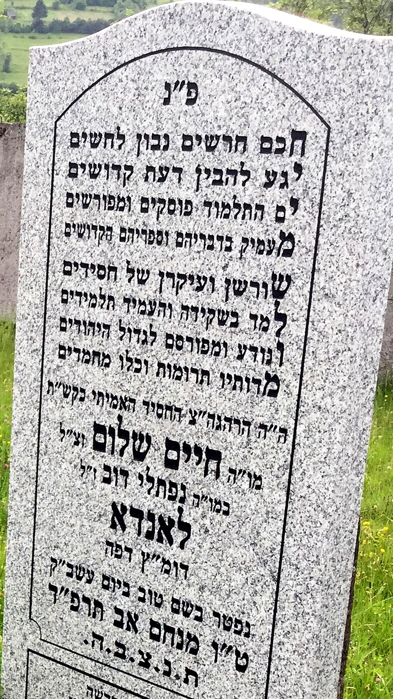
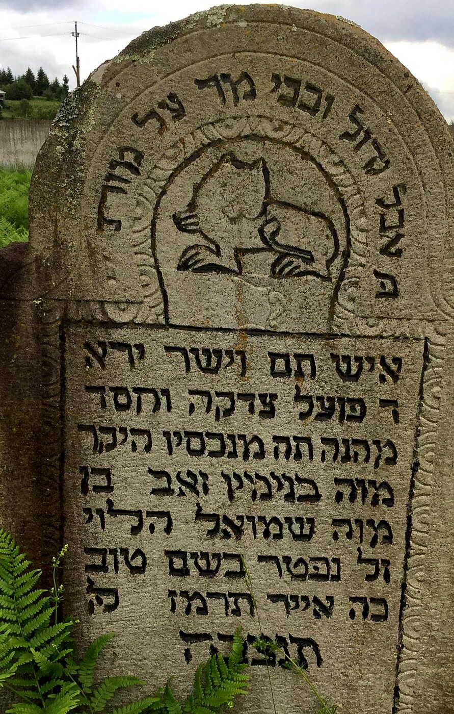
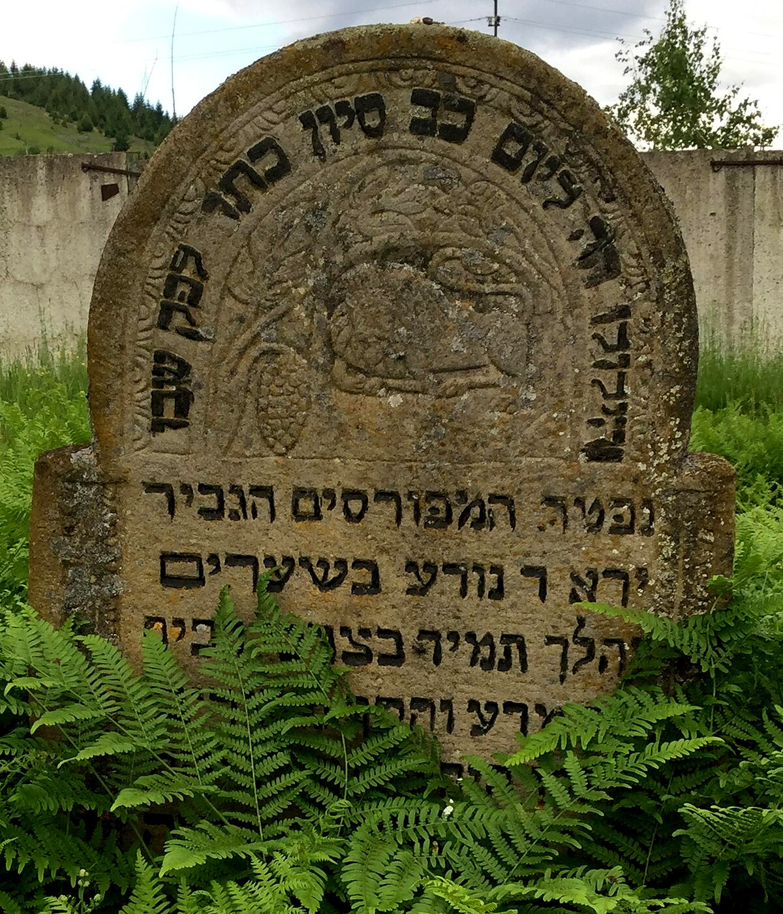
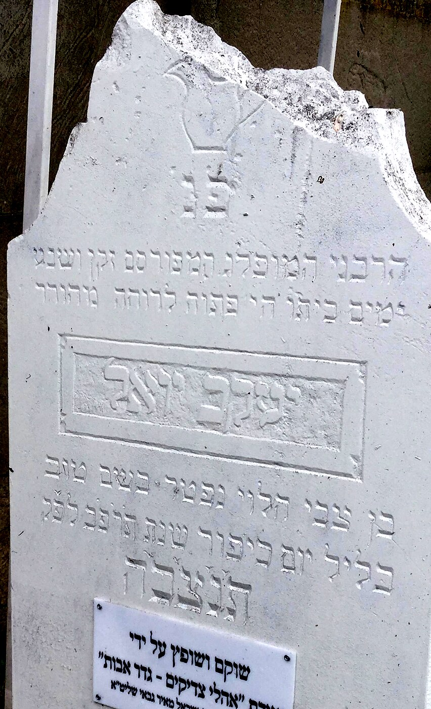
מצבות נוספות שקריאתן ותיארוכן מאומתים: הרמן/יחיאל מיכל מעכלאויטש, ערב סוכות תרצ"ד — 04.10.1933 (קושלובו, מצבת חידוש משנת 1998); ובאוקרמזו חיה פרימא לאנדא ובעלה נפתלי דוב, שנפטר כ"ד בתמוז תרס"ה — 27.07.1905 (מצבתם חודשה בחשוון תשס"ט, 2008, בידי נכדים מניו-יורק, והכתובת מציינת שקברו של נפתלי דוב עצמו לא אותר).
מצבה רביעית באוקרמזו — למעשה שתי מצבות שיש על בסיס אחד, בתוך מסגרות ברזל — נושאת זוג רבני.
- הבעל: "מוה"ר ישראל יעקב", שעליו נאמר בכתובת שהיה "רב ואב"ד" בשני מקומות ו"הורה הוראות קרוב לשלשים שנים", וש"חוטר מגזע קדושים … משפחת התמרים ומשפחת הורוויץ". קטלוג ESJF מזהה אותו כישראל יעקב יוקל טייטלבוים, רב ודיין בברבשט (Berbeşti), בגורליץ ובמיז'יריה — ושמות שני המקומות אכן קריאים בכתובת, אם כי בביטחון בינוני בלבד ("בבערבעשט", "וגאראליץ"). אפשר שזהו אותו ר' ישראל יעקב יוקל טייטלבוים שפרק ב' מונה ברבני העיירה — "הרב מוולובה", שכיהן 1894–1924 — טעון אימות: "קרוב לשלשים שנים" של הוראה שבכתובת קרובות לשלושים שנות כהונתו, ושני שמות המקומות שבכתובת (בביטחון בינוני בלבד) עולים בקנה אחד עם שני המקומות שקטלוג ESJF נוקב בהם לצד מיז'יריה — שאינה מופיעה בכתובת עצמה. מה שמונע העלאה בדירוג הוא הפער שבסעיף הבא. אם הזיהוי נכון, המצבה מאוחרת ל-1924.
- האישה: "מרת הענדל", ובכתובתה "בת הגה"צ מרן היטב לב זצללה"ה אבד"ק סיגעט" — כלומר בתו של ר' יקותיאל יהודה טייטלבוים, ה"ייטב לב", אב"ד סיגט (נפטר 1883). כתובתה מוסרת גם ש"הנאהבים והנעימים בחייהם קרוב לשבעים שנה, ובמותם לא נפרדו".
- מועד הפטירה: הכתובת נוקבת "נפטר[ו] בש[ם] ט[וב] שלשה ימים לחודש אלול", והיא סובלת שתי קריאות — "בג' באלול" או "בהפרש שלושה ימים באלול". שנת הפטירה אינה חקוקה כלל, ולכן אין המרה גרגוריאנית.
- פער פתוח: בכתובת הבעל נקרא גם התואר "הכהן", שאינו מתיישב עם שיוך למשפחת טייטלבוים; והפטרונים — "בהרב הגה"צ ר' שמואל טיי[ט]לבוים" — קריא בביטחון בינוני בלבד. טעון אימות בצילום חוזר.
תיקון שהסקר החיצוני מחייב
שתי מצבות בדנילובו נראות, לפי סגנון החריטה בלבד (תבליט עמוק, טימפנון של עץ-חיים או וולוטות, היעדר שם משפחה), כאילו הן מלפני 1830. קטלוג ESJF קובע שהמצבה העתיקה ביותר בדנילובו היא מ-1887 — פער של כשישים שנה. התיארוך שבקטלוג עדיף, והמקרה נרשם כאזהרה מתודית: בעמק הזה אין לתארך מצבה לפי סגנון.
מנגד, המצבות מ-1801 שבאוקרמזו ובקושלובו אינן נמצאות בין 95 התצלומים — או שאינן קריאות בהם. הן קיימות לפי הסקר, והן היעד הראשון של כל צילום חוזר.
שובל הקרקע: לאן הוא מוליך עכשיו
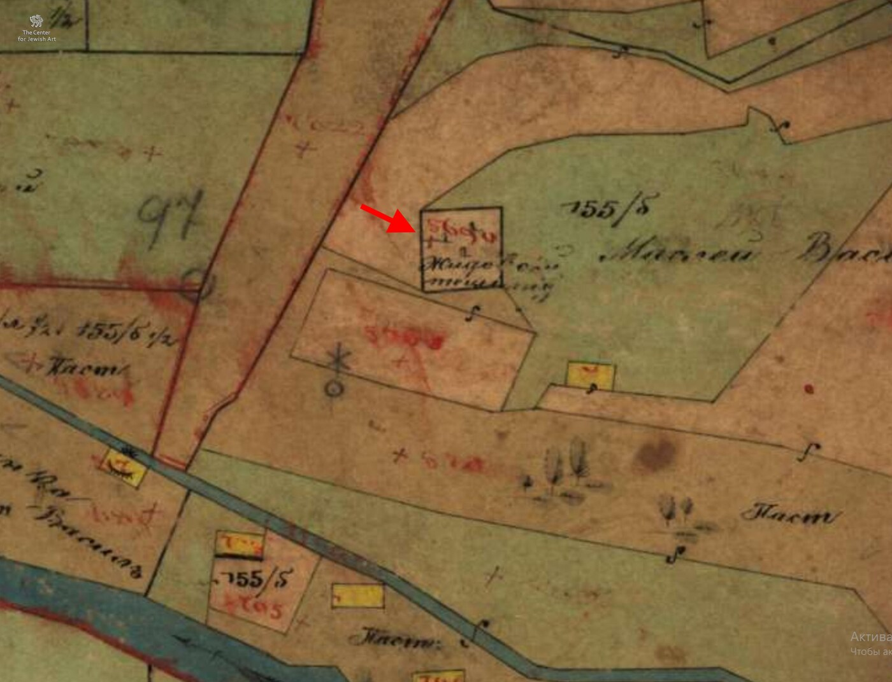
הידיעה העיתונאית מ-1910 (פרק ב') מוסרת שבפנקס האחוזה של אוקרמזו נשארו לילדיו של גדליה "בדיוק מאה ועשרים" רישומי קרקע. הפנקס עצמו לא אותר — אך שני הפונדים שבהם הוא אמור להימצא זוהו כעת בשמותיהם הרשמיים, ברשימת הפונדים הקדם-סובייטיים של ארכיון זקרפטיה:
- פונד 87 — "בית המשפט המלכותי המחוזי של וולובה (מיז'יריה)", 1898–1918, 29 תיקים. בית המשפט המחוזי (járásbíróság) הוא הגוף שניהל בהונגריה את פנקס האחוזה (telekkönyv), ולכן זהו הפונד שבו יש לחפש את מפתחות השמות לפנקס. מאומת לגבי זהות הפונד; טעון אימות לגבי תוכן התיקים.
- פונד 125 — "ארכיון מפות הקדסטר של רוס הקרפטית, אוז'הורוד (אוסף)", 1787–1948, 11,674 תיקים. טווח השנים מכסה את כל תקופת המשפחה. מאומת לגבי זהות הפונד; טעון אימות לגבי האופיס המדויק.
- פונד 99 — "ראש הנפה של וולובה, כפר וולובה" (Волівський окружний начальник, с. Волове), 46 תיקים, הונגרית באותיות לטיניות. זהו ארכיון המִנהל ההונגרי של הנפה — הפונד היחיד מבין הארבעה שחומרו הונגרי ולא אוסטרו-הונגרי או צ'כוסלובקי. תיאור התיקים כולל, בין השאר, הוראות משרד הפנים ההונגרי, דיווחי האקספוזיטורה המנהלית של מרמרוש בחוסט, התכתבות עם הנפות ועם המשרדים הנוטריוניים על מעקב אחר מגויסים שלא התייצבו, רשימות מגויסים, ומאזנים וספרי קופה של הכפרים (הרשומה בפורטל EHRI). זהו המקום הסביר ביותר לחפש בו את שירות העבודה של אריה-לייב ואחיו ואת הרישום הכספי של הקהילה בשנותיה האחרונות. מאומת לגבי זהות הפונד, היקפו ותוכנו הכללי; הרשומה אינה נוקבת בטווח שנים, ואת התיארוך יש לברר מול הארכיון. טרם נבדק.
- מחוץ ל-DAZO — והחוט המבטיח ביותר שנפתח כאן: MOL Z 936, "רשומות מחוז הז'נדרמריה השמיני, קאשה", שצולם מן הארכיון הלאומי ההונגרי ושמור במוזיאון השואה בוושינגטון (RG-39.005M): 26,413 תצלומים דיגיטליים בשבעה גלילי מיקרופילם. תוכנו, כלשון התיאור: "records of the confiscation, processing, and distribution of Jewish property in Hungary in 1944 … computation sheets, reports, and certificates about valuables taken from individuals who were deported in 1944 from the Trans-Carpathian region" — "רשומות ההחרמה, הטיפול והחלוקה של רכוש יהודי בהונגריה ב-1944 … גיליונות חישוב, דוחות ותעודות על חפצי ערך שנלקחו מיחידים שגורשו ב-1944 מאזור תת-הקרפטים". החומר מסודר לפי סדר אלפביתי של שמות היישובים, ואוקרמזו נופלת בגליל 4 (Munkács–Péterréve) (הרשומה בפורטל EHRI). כלומר: זהו אוסף שמי, פרטני, דיגיטלי וזמין של מה שהוחרם מכל משפחה מגורשת באזור — ובכללן, אם שרד הדף, ממשפחת סטרולוביץ-פרקש. מאומת לגבי זהות האוסף ותוכנו; טרם נבדק.
(הערת סייג: פונד 87 מכסה 1898–1918 בלבד, ולכן אינו יכול להכיל את פנקס האחוזה שקדם לו — לא את המכירה הפומבית של 1897 ולא את הרישומים שנמנו לפניה. הפנקסים הישנים יותר מצויים, ככל הנראה, בפונד אחר או בארכיון המחוזי בברהובו — טעון בירור.)
מצב המאגרים: מה נפתח, מה השתנה, ומה עדיין סגור
מצב המאגרים שמהם נשלף חומר המשפחה השתנה, ולשינויים יש משמעות לכל חיפוש עתידי:
- JewishGen — עמוד התוצאות שוּנה. החיפוש עצמו תקין ומחזיר את מניין ההתאמות, אך כל מסד נתונים מוגש כיום מאחורי טופס POST ולא כקישור. השורות ניתנות לשליפה בכל זאת, בשתי בקשות רגילות — עמוד הסקירה, המחזיר מזהה לכל מסד, ואחריו עמוד הפירוט עם אותו מזהה ועם פרמטרי החיפוש; הפירוט הטכני המלא באינדקס המקורות. הרשומה שהיא עמוד התווך של דור 0 היא הרישום האזרחי המאוחר של נישואי גדליה ומינדל (פונד 1606, אופוס 6, דלו 225, עמ' 11), שנרשם ב-04.03.1903 לנישואים שנערכו ב-06.08.1884 בקרצ'ונפלבה — דפוס מוכר בעיירה הזאת, שהדוח מתעד גם אצל יעקב ושרה ואצל מנדל (פרק ג'). הרישום נוקב בשמות ארבעת ההורים: משה רפפורט ויֶנטה שפיגל מצדו, וזלמן ברקוביץ ופריידא קאופמן מצדה, כולם מצוינים כמנוחים; ועדי הנישואים היו סטנקו טודור וסאפאר שמואל.
- סטרולוביץ נכתב באינדקס "SZTRULYOVICS". חיפוש "Strulovics" במאגרי מרמרוש מחזיר כמעט אפס; "Sztrulyovics" מחזיר 235 רשומות לידה בלבד במסד אחד. זהו הכתיב הקנוני של האינדקס, וכל חיפוש עתידי חייב לצאת ממנו. מאומת.
- RadixIndex — ובו אינדקס שמות משפחה לאוקרמזו. דף המקום מונה 383 שמות משפחה ו-509 אזכורים בעיירה. רפפורט מופיע פעם אחת, וכך גם פרקש וברקוביץ; שטיינברג שלוש פעמים, הופמן פעמיים. הרשומה היחידה שנוגעת ישירות למשפחה היא "Rappaport Mayer", יליד אוקרמזו, "נתונים אישיים, שורה אחת", מן התקופה שבין שתי מלחמות העולם — ככל הנראה מאיר, בן הזקונים של גדליה ומינדל (נ' 28.01.1908). תוכן הרשומה חסום מאחורי מנוי. פעולה פתוחה.
- פורטל הארכיונים של Hungaricana אינו מכיל חומר ארכיוני של מחוז מרמרוש. הוא מחזיק את ארכיון העיר בודפשט ושלושה מחוזות טרנס-דנוביים בלבד; חיפוש "Ökörmező" מחזיר 22 תוצאות, וכולן בודפשטאיות. (זאת להבדיל מספריית Hungaricana, שממנה הורדו בפרק ג' גיליונות מפקד 1921 של וולובה ושל קושלובו — ספרייה ופורטל ארכיוני הם שני אוספים שונים.) המסקנה: את שובל הקרקע יש להמשיך ב-DAZO, לא בבודפשט. (יוצא דופן מעניין ולא מוכרע: "Sztrulovics Izidor", יליד 24.11.1895 בזארניה (Zárnya) — כפר במרחק כשמונה קילומטרים מאוקרמזו — שאמו הופמן/הילקוביץ אידה. אפשר שהוא קרוב — טעון אימות.)
- FamilySearch Full-Text — סגור. זהו כיום הנתיב הריאלי היחיד לתמונות של חומר אחוזתי ובית-משפטי ממרמרוש לפני 1851, והגישה אליו מחייבת אימות שטרם הושג. פעולה פתוחה.
פרק ד' — ציר הזמן: מוולובה לחולון
16.04.1929 — רחל נולדת בוולובה שבצ'כוסלובקיה, שלישית מבין חמישה (ברשומת הלידה האזרחית: 12.04.1929 — פרק א').
1938–1939 — צ'כוסלובקיה מתפרקת; במרץ 1939 הצבא ההונגרי מספח את האזור. תחת השלטון ההונגרי: חקיקה אנטי-יהודית, החרמת עסק האב, איסור שחיטה כשרה, גיוס לפלוגות עבודה; פליטים יהודים מפולין מגיעים לעיירה (עדות רחל). ב-1943–44 העיתונות מתעדת את "ההחלפה הכלכלית" באוקרמזו — התארגנות הסוחרים הנוצרים בראשות חוכר המנסרה (שהייתה בבעלות יהודית).
1941 — גירוש חסרי הנתינות לגליציה (רבים נרצחו בקמנץ-פודולסקי). המשפחה ניצלת בזכות תושייתה של האם רבקה.
19.03.1944 — גרמניה כובשת את הונגריה. 14.04.1944 — רחל נעצרת בביתה ("Verhaftet am 14.4.44, am Orte" — שאלון הקליטה בשטוטהוף), יומיים לפני יום הולדתה ה-15; לפי עדות בת העיירה ריטה שניידר-פולק (Rita Pollack לבית Schneider), ב-16.04.1944, מהשעה שבע בבוקר, אספה הגסטפו את יהודי וולובה במשאיות — משפחתה הייתה השלישית שנאספה — וריכזה אותם בבית הכנסת, נעולים, לשלושה ימים; משם הועברו במשאיות לגטו סוקירניצה (Sekernice; בפי בני העיירה — סקלנצה) — כפר שרוקן קודם לכן מתושביו הלא-יהודים — כ-30 נפש בחדר, לשלושה שבועות (פרוטוקול 73 של דגו"ב נוקב בארבעה — ראו להלן), ואז הוצעדו ברגל לעיירה הסמוכה והועמסו בקרונות בקר, כ-80 בקרון, עד אושוויץ — אליה הגיעו, גם לדבריה, ב-19 במאי. העדות מופיעה בעמוד השואה של אתר קהילת מיז'יריה (KehilaLinks): המקור · תצלום. (הערת ביקורת: היא זוכרת "כעשרה ימים ברכבת" — ואילו רשימת קושיצה מתעדת יציאה ב-17.05 והגעה ב-19.05; ככל הנראה נצטברו בזיכרון גם ימי ההמתנה.)
{kind=link}
15–17.05.1944 — חיסול הגטו: ב-15.05 רוכזו התושבים בחצר בית ספר, נערך עליהם חיפוש והם הוצעדו לתחנת סלדובוש (מאגר הגטאות של יד ושם, רשומה 6663078; הערת אזהרה לקורא: פסקת הרקע ההיסטורי באותה רשומה משייכת בטעות את סקלנצה לצפון טרנסילבניה ולסיפוח 1940, בעוד שדות הרשומה עצמם — ובצדק — מציינים צ'כוסלובקיה עד 1938 והונגריה מ-1939. הפרטים שהדוח נשען עליהם, מיום 15.05.1944, מדויקים). רכבת "אוקרמזו" חצתה את תחנת קושיצה ב-17.05.1944 ובה 3,052 מגורשים (רשימת מפקד התחנה — המסמך המרכזי על רכבות הגירוש ההונגריות). הערת קריאה: בטבלת קושיצה נרשם היישוב תחת הכותרת "תחנת המוצא", אך הכינוי "Ökörmező" מציין את קהילת המוצא של המגורשים — שהועלו בפועל על הקרון בתחנת סלדובוש, אחרי שלושה שבועות בגטו. את החוליה הזו מתעד רנדולף בראהם: בהערה 113 לפרק על גטאות מרמרוש הוא כותב שבגטו סקלנצה רוכזו קרוב ל-5,000 יהודים, "köztük azok, akik a szomszédos Száldobosi, Ökörmezői, Husztsófalvai és Mihálkai járás községeiből kerültek ide" — "ובהם אלה שהובאו לכאן מכפרי נפות סלדובוש, אוקרמזו, הוסטסופלווה ומיהלקה הסמוכות", וכי הגטו פעל תחת הנהגת היודנרט של חוסט. כלומר גם נפת אוקרמזו (משפחת האב) וגם מיהלקה (כפר משפחת האם) רוכזו באותו גטו עצמו.
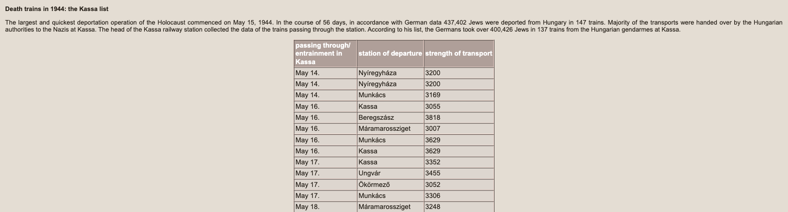
לרכבת הזאת יש רשומה במרשם הטרנספורטים של מוזיאון אושוויץ — תחת שם עיירה שגוי. במרשם הטרנספורטים של המוזיאון היא טרנספורט מס' 360, מזהה פנימי 10_Kőrösmező, 3,052 מגורשים, ותאריך 17.5.1944. התאריך הזה אינו תאריך ההגעה למחנה: הוא מועתק מטבלתו של גשקו, המובאת במסה של המוזיאון, שעמודתה נושאת את הכותרת "Date of passing through Kassa" — "תאריך המעבר בקאשה". אלא שקרשמזו (Kőrösmező, כיום יסינה) אינה אוקרמזו: שתי עיירות במרמרוש, במרחק יותר ממאה קילומטרים זו מזו, ששמותיהן ההונגריים נבדלים בהברה. המוזיאון עצמו מסגיר את הבלבול בכותרת המשנה של הרשומה, שנוסחה "Kőrösmező — Miżhirja, Ökörmezö in Transcarpathian Ukraine" — כלומר הוא מתאר את מיז'יריה/אוקרמזו תחת שמה של קרשמזו.
שהרשומה הזאת היא רכבת אוקרמזו — מאומת, בהתאמה של ארבע מתוך ארבע. רשימת קושיצה מונה ל-17 במאי ארבע רכבות; מרשם המוזיאון מונה לאותו יום ארבע רכבות RSHA מהונגריה (ולצדן משלוח מטרזיינשטט, שאינו שייך לסדרה):
| רשימת קושיצה, 17.05.1944 | מרשם מוזיאון אושוויץ | מגורשים |
|---|---|---|
| Kassa | 8_Kassa (טרנספורט 347) | 3,352 |
| Ungvár | 9_Užhorod (Ungvár) (טרנספורט 442) | 3,455 |
| Ökörmező | 10_Kőrösmező (טרנספורט 360) | 3,052 |
| Munkács | 11_Munkacs (טרנספורט 380) | 3,306 |
אותם ארבעה מספרים, באותו סדר, באותו יום; ומספרו הסידורי של המוזיאון — 10 — זהה למספר שנותנת לרכבת טבלת גלזר ("רכבת מס' 10 — Ökörmezö"). מה בדיוק מאומת כאן, ומה לא: מאומת שרשומת המוזיאון ורשומת רשימת קושיצה הן אותה רכבת, ושכינוי העיירה שברשומת המוזיאון שגוי. אין כאן אישוש עצמאי לעצם קיומה של הרכבת או למספר המגורשים בה — המוזיאון מציין כמקורו את רשימתו של מיקולאש גשקו (Mikuláš Gaško), היא רשימת תחנת קושיצה, ואף טבלת גלזר נגזרת ממנה. שלושת המקורות הם שלוש מסירות של ספירה אחת; ההתאמה שלעיל היא בדיקת העתקה, לא עדות נוספת. (שיוך המשפחה עצמה לרכבת זו נותר כמעט ודאי — פרק ח'.) מה שהרשומה כן מוסיפה הוא מזהה טרנספורט רשמי, מרחק ההובלה (יותר מ-350 ק"מ), ומסה היסטורית של המוזיאון עם מקורותיה הארכיוניים.
מתוך אותה מסה, שלושה נתונים הנוגעים ישירות לרכבת הזאת:
- הרכבות אורגנו ולוו בידי הז'נדרמריה ההונגרית, והועברו לידי ה-SS רק בגבול סלובקיה עם הגנרלגוברנמן. זהו ההסבר המבני לשרשרת שהדוח מתאר — כינוס בידי ז'נדרמים, גטו סקלנצה, העמסה בסלדובוש — כולה בידיים הונגריות.
- "The journey usually took 3 days in inhumane conditions, without access to water, food and toilets" — "הנסיעה נמשכה בדרך כלל שלושה ימים, בתנאים לא-אנושיים, בלי גישה למים, למזון ולשירותים". משך כזה מתיישב עם רכבת שעברה בקאשה ב-17.05 והגיעה ב-19.05, כפי שנוקבת טבלת גלזר — ומכאן שהתאריך שבמרשם המוזיאון אינו סותר את תאריך ההגעה שבדוח אלא מציין שלב מוקדם יותר באותה נסיעה.
- "There are no transport lists of the deportation victims from Hungary, so their numbers are estimates and most of their names remain unknown" — "לא נשתמרו רשימות טרנספורט של קורבנות הגירוש מהונגריה, ולכן מספריהם הם אומדנים ורוב שמותיהם נותרו בלתי ידועים". זו התשובה, מפי המוזיאון עצמו, לשאלה מדוע אין ולא יהיה מסמך שמי לרכבת הזאת — ומדוע מספרי האסירות בשטוטהוף הם החוט השמי היחיד שנותר מן המשפחה.
עדות בת 1945 מאותה עיירה ומאותו גטו
בפרוטוקול 73 של דגו"ב — ועדת הסעד לחוזרים, שגבתה עדויות בבודפשט ב-1945–46 — מספר נער יליד אוקרמזו 1930, שגורש דרך גטו סקלנצה לאושוויץ. הוא בן דורם של רחל (ילידת 1929) ושל גדליהו (יליד 1931), והעדות נגבתה ב-1945, בתוך שנה מן השחרור — קרוב לאירועים בזמן מכל מקור אחר בתיק. שמו מוסתר בראשי תיבות ("נ' ש'"), אך אביו קרא לו בבית "שולי" (בהונגרית "Sulikám" — "שולי שלי"), ומת בן 57 בצעדת המוות לפלוסנבורג. הפרוטוקול · התדפיס הסרוק.
ארבעה קטעים ממנו נוגעים ישירות לשרשרת שבפרק זה:
- "Ökörmezőn sok gazdag zsidó család lakott. Az én szüleimnek fakereskedése volt. Gazdagok voltunk." — "באוקרמזו גרו הרבה משפחות יהודיות עשירות. להורים שלי היה עסק עצים. היינו עשירים." (על כלכלת העץ של העיירה — פרק ב'.)
- "Egy napon bevitték a zsidókat a templomba, ott voltunk 3 napig. Egy személy 12 kg-os csomagot vihetett magával." — "יום אחד הכניסו את היהודים לבית הכנסת, היינו שם שלושה ימים. אדם היה רשאי לקחת עמו חבילה של 12 ק"ג."
- "A templomból a csendőrök az iskolába tereltek és onnan autón Szeklence faluba vittek. Ebből a faluból a keresztények kimentek és az egész falu gettó lett." — "מבית הכנסת הסיעו אותנו הז'נדרמים בכוח אל בית הספר, ומשם הובילו אותנו במכונית לכפר סקלנצה. מן הכפר הזה יצאו הנוצרים, וכל הכפר הפך לגטו."
- "Négy hétig voltunk a gettóban. Csendőrök vagonokba gyömöszöltek bennünket, 110 ember volt egy vagonban. Se víz, sem WC céljait szolgáló vödör nem volt a vagonban. Kassán adtak először vizet, azután Auschwitzig semmit." — "ארבעה שבועות היינו בגטו. ז'נדרמים דחסו אותנו לקרונות, 110 איש היו בקרון. לא היו בקרון לא מים ולא דלי לצורכי בית שימוש. בקאשה נתנו מים בפעם הראשונה, ואחר כך עד אושוויץ כלום."
המשפט האחרון קושר את העדות לרשימת קושיצה עצמה: התחנה שבה נרשמה הרכבת היא התחנה שבה קיבלו המגורשים מים.
מה מתאשש ומה נחלק מול עדות ריטה שניידר-פולק, שעליה נשען הפרק עד כה:
- מתאשש: שלושת הימים בבית הכנסת; פינוי הנוצרים מסקלנצה והפיכת הכפר כולו לגטו; ועצירת המים בקאשה. (בית הספר מופיע בשני המקורות אך בשני מועדים שונים: אצל פרוטוקול 73 הוא תחנה באוקרמזו, בין בית הכנסת להסעה לסקלנצה באפריל; במאגר הגטאות של יד ושם חצר בית הספר היא מקום הריכוז בסקלנצה ב-15.05, בחיסול הגטו. שני אירועים, לא אישוש.)
- נחלק: מי אסף את היהודים — ריטה שניידר אומרת גסטפו, פרוטוקול 73 אומר ז'נדרמים הונגרים (וזו גם עמדת המסה של מוזיאון אושוויץ); משך השהות בגטו — שלושה שבועות אצלה, ארבעה אצלו; וצפיפות הקרון — כ-80 אצלה, 110 אצלו. שני העדים היו ילדים באותה שרשרת; הדוח מביא את שתי המסירות ואינו מכריע ביניהן — טעון אימות.
בהמשך העדות מופיע שם פרטי אחד מאוקרמזו: "Egyik ökörmezői ismerősömet, Landau Joelt is én égettem el" — "גם את אחד ממכריי מאוקרמזו, לנדאו יואל, אני שרפתי" (בקרמטוריום של פלוסנבורג). אפשר שהוא מבני משפחת לאנדא של אוקרמזו, שמצבותיה בבית העלמין (פרק ג'1) — טעון אימות.
19.05.1944 — הגעה לאושוויץ-בירקנאו. על הסלקציה של רכבת זו מעידה טבלת גלזר: 507 גברים נבחרו לעבודה. יש לקרוא את שני המספרים האחרים שבטבלה בזהירות — מחברהּ מציין במפורש שלאו גלזר, הקאפו במחסן הבגדים שברמפה, רשם רק את תאריך ההגעה ואת מספר הגברים; מספר הנשים (558) חושב בהנחה ש"נבחרו כ-10% נשים יותר מגברים", ומספר הנרצחים (1,987) הוא השארית — 3,052 פחות 1,065. כלומר: מספר אחד מתועד, שניים מחושבים.

טבלת הרכבות של גלזר: רכבת מס' 10 — Ökörmezö, יציאה 17 במאי, 3,052 נפש, הגעה 19 במאי; 507 גברים ו-558 נשים נבחרו, 1,987 נרצחו. שתי העמודות האחרונות הן אומדן ושארית חשבונית, לא ספירה — ראו הסבר לעיל. רחל (15) וסימה (17) נבחרות לעבודה — את חיי רחל מצילה קאפו שמכריזה למנגלה "בת שמונה עשרה" ורודפת אחריה: "תזכרי, את בת שמונה עשרה" (מקור שנת 1927 ברישומי שטוטהוף). גיטה בת השמונה נרצחת. האם רבקה נרצחה באושוויץ ב-1944 — מועד הרצח אינו ידוע: ייתכן בסלקציה של 19.05 (היא ירדה מהקרון ובידיה תינוקהּ של אחותה — פרק ו'1), וייתכן בשבועות שלאחריה, שכן בשאלון הקליטה בשטוטהוף מסרה רחל שהאם "כעת במחנה אושוויץ" (פרק ה' סעיף 3). האב אריה — על פי עד הראייה שפגשה רחל — עבר את הסלקציה ומת במחנה מרעב; ייתכן שהוא האסיר A-8557 שבמאגר מוזיאון אושוויץ, אך הזיהוי טעון אימות (פרקים ה'–ו'1 ופרק ח'). גדליה בן ה-13 עובר לבוכנוולד ולברגה. במחנה הנשים: מסדרים אינסופיים, בלי עבודה (עדות רחל).
29.06.1944 — רחל וסימה מגיעות לשטוטהוף שליד דנציג במשלוח הראשון של הנשים היהודיות ההונגריות מאושוויץ (2,502 נשים). תאריך ההגעה מתועד בכרטיסי האסירה שלהן: "Eingewiesen am 29.6.44 durch KL. Auschwitz". האחיות נרשמות יחד: סימה — אסירה 38443, רחל — אסירה 38444. בקליטה רחל מוסרת ששני הוריה נמצאים "כעת באושוויץ", וחותמת בכתב ידה: "Sztrulovics Ruci". במחנה: סלקציות, רעב.
~סוף אוגוסט–ספטמבר 1944 (ואולי מאוחר יותר) — היציאה לטורן, בסלקציה השלישית. בשטוטהוף, מעידה רחל, שהו "די הרבה זמן... חודשיים, שלושה" [01:34:14] בלי לעבוד — עד שהחלו הסלקציות למחנות העבודה. סימה חלתה ושכבה בחדר החולים שבצריף; שם, מבעד לחלון, אמרה את המשפט "אני כבר לא אהיה בת שמונה עשרה" [01:35:40]. רחל נבחרה לעבודה שלוש פעמים — ופעמיים חילצה אותה מזכירה יהודייה ("השרייברין") שאף הסתירה אותה בחדר החולים, כדי שתישאר עם אחותה [01:34:41]. בפעם השלישית אמרה המזכירה: "אני לא משחררת אותך, לא מחביאה אותך" [01:36:12] — וגם סימה הסבירה לה שהיא חייבת לצאת [01:40:25]. "חודשיים, שלושה" אחרי ההגעה ב-29.06 פירושם סוף אוגוסט עד סוף ספטמבר — והאומדן הוא אומדן זיכרון, לא מדידה. "חודשיים" בדיוק מתיישב עם שלושת המשלוחים המתועדים לטורן ב-24–26.08.1944 — אם כי לפי דריווה הורכבו משלוחים אלה מנשים שהגיעו לשטוטהוף מקאונס, מריגה ומאושוויץ באמצע אוגוסט (ולא ממשלוח 29.06 שבו הגיעה רחל); "שלושה חודשים" ומעלה מחייב משלוח מאוחר יותר — שאינו מתועד ברשימות שבידי המוזיאון (גל התגבור המתועד הבא: נובמבר). שיוך מסמכי אינו אפשרי כיום, שכן בידי מוזיאון שטוטהוף אין את כל רשימות הנשים שנשלחו לתתי-המחנות (פרק ה' סעיף 8). בהעברה זו רחל נפרדת מסימה — ולא תראה אותה עוד.
טורן (Thorn) — "Baukommando Weichsel" ("פיקוד הבנייה ויסלה") של ארגון טודט, שהוקם ב-23–24.08.1944 (המקורות נחלקים ביום): כ-5,000 יהודיות שנשלחו משטוטהוף בשלושה טרנספורטים ב-24–26.08.1944 (כ-1,700, כ-1,600 וכ-1,700 נשים), ובהמשך תגבורים — כ-1,000 משטוטהוף בנובמבר וכ-1,000 מיוצאות גטו לודז' (שהגיעו לשטוטהוף ב-27.09.1944) שצורפו במחנה גרודנו-מירקובו שליד חלמז'ה, כ-20 ק"מ צפונית לטורן (Grodno, gmina Chełmża — לא הרודנה שבבלארוס). דריווה נוקבת בסך הכול של כ-6,000 נשים שנשלחו למערך; סכום המשלוחים המפורטים כאן מגיע לכ-7,000. ההסבר הסביר לפער: הספרות הפולנית מונה כ-5,000 באוגוסט ועוד כ-1,000 מלודז' — ומכאן ש"התגבורת בת כ-1,000 משטוטהוף בנובמבר" היא ככל הנראה אותה קבוצת לודז' עצמה, שנספרה פעמיים. תפקידן: חפירת תעלות נ"ט ובונקרים באזור טורן. "טורון זה מחנה עבודה... אוהלים. גרים באוהלים ועובדים בתעלות קשר בחוץ" [01:44:06]. פרקי המחקר של ד"ר דנוטה דריווה (שנמסרו לתיק זה — פרק ה' סעיף 8) מתארים השכמה בשלוש לפנות בוקר, טיפוס ודיזנטריה, קור עד 28°C- ורצח חולות; רוב הנספות היו יהודיות הונגריות. על מטרת המערך כותבת דריווה: "The sole aim was extermination" — "מטרתו היחידה הייתה השמדה". בחורף הגיעה פקודה שמי שאינה מסוגלת עוד לעבוד רשאית "לחזור לשטוטהוף" — ודודתה של רחל — ככל הנראה רחל פרקש, אחות אמה (פרק ג') — הרימה יד וחזרה, למרות הפצרותיה: "עכשיו אני יודעת שזה ישר להשמדה" [01:47:03].
ינואר 1945 — פינוי מחנות טורן: צעדות מוות שבהן נרצחים המפגרים והחלשים. מחקרה של דריווה מתעד סלקציה במחנה גרודנו ב-19.01.1945 שבה נרצחו כ-200 אסירות (בחפירות שנערכו במקום ב-1971 הועלו כ-720 גופות), ולצדה עדותה של לאיושנה פליישר על כ-150 שנרצחו בצעדה בת כעשרה ימים. רחל מוסרת מספרים גדולים יותר — כ-1,200 יצאו וכ-500 הגיעו (פרק ו'1) — והם דווקא מתיישבים עם הספרות הפולנית על אותו פינוי: מכ-900 נשים שהוצעדו מבוצ'ין ומגרודנו שרדו כ-300, ומכ-1,300 אסירי חוראב הגיעו 997. שיעור ההישרדות שבעדותה (כ-42%) נופל בדיוק בין שני הטורים המתועדים. רחל צועדת כעשרה ימים ומגיעה לפראוסט (Praust; היום פְּרוּשְׁץ' גְדַנְסְקִי, Pruszcz Gdański) שליד דנציג — תת-מחנה של שטוטהוף ליד שדה התעופה — לעבודות חפירה, ברעב ובמגיפת טיפוס.
מה שנותר פתוח: שני מסלולי הפינוי של טורי OT Thorn שדריווה מתעדת בשמם — גרודנו→לאונבורג דרך חבל טוכולה, וחוראב→קורונובו — אינם עוברים בפראוסט, ולכן הטור שבו צעדה רחל אינו מזוהה. הגעתה לשם עצמה מתיישבת היטב עם המתועד: פראוסט הוקמה ביולי 1944 ואוכלסה תחילה בכ-500 נשים יהודיות הונגריות, ומינואר 1945 שימשה תחנת מעבר למאות שפונו מתתי-מחנות אחרים של שטוטהוף — בדיוק החלון שאליו מוליכה צעדה בת כעשרה ימים מן ההתארגנות בגרודנו (19–20.01). על פראוסט עצמה כותבת דריווה (תקציר הפרקים): "Evacuation of 800 Jewish women imprisoned in Praust filial camp began on February 13, 1945… On January 27 and 28 they stayed in the filial camp, where also columns of inmates evacuated from KL Stutthof on January 25 and 26 stopped for the night" — "פינוי 800 הנשים היהודיות שהוחזקו בתת-המחנה פראוסט החל ב-13 בפברואר 1945… ב-27 וב-28 בינואר הן שהו בתת-המחנה, ושם לנו גם טורי האסירים שפונו משטוטהוף ב-25 וב-26 בינואר". נותר לברר איזה טור הביא אותה, ומתי בדיוק שוחררה (ראו להלן).
פברואר–מרץ 1945 — שחרור בידי הצבא האדום, באזור דנציג; רחל בת 15 ועשרה חודשים. עדותה נוקבת ב"פברואר. התחלת פברואר" [02:16:53], וכך גם התקציר הקטלוגי של יד ושם. התיעוד החיצוני מצביע על מועד מאוחר יותר: לפי הספרות על תת-מחנה פראוסט, השומרים נטשו אותו וכעבור שעות אחדות נכנס הצבא האדום — 23.03.1945; דנציג עצמה נכבשה ב-30.03; ודריווה מתארכת את שחרורי שרשרת הפינוי של האזור ל-10–11 במרץ. ההסבר הסביר: הזיכרון "תחילת פברואר" מקדים בכמה שבועות את המועד בפועל (תופעה שכיחה בעדויות שנמסרו עשרות שנים אחר כך), או שרחל שוחררה בנקודה אחרת בשרשרת הפינוי.
1945–1946 — השיבה לחיים. ברכבת אחרי המלחמה רחל פוגשת במקרה חייל ששוכן בבית המשפחה — והוא מחזיר לה את תמונת המשפחה מ-1944 (צולמה ביוזמת דב כשבוע לפני הגירוש; היום אצל בנה עדו צדוק).
מחנה העקורים ליפהיים: כרטיס מרשם השמות המרכזי של ארכיון Arolsen (הרשומה המקוונת · הכרטיס בתיקייה) מתעד: "FARKAS Rachel, נולדה 16.IV.1929, מקום לידה Volove, מגורים אחרונים Volove — כתובת נוכחית: Leipheim, בלוק 24" — מחנה העקורים ליפהיים שליד אולם, בוואריה, באזור הכיבוש האמריקני. כלומר, אחרי השחרור נדדה רחל מערבה ושהתה במחנה עקורים בגרמניה — פרק שלא היה מוכר במסורת המשפחתית. בגב הכרטיס: חותמת "SENT TO FILE No. T/394234" ("הועבר לתיק מס' T/394234", 07.01.1955) — כלומר קיים בארולסן תיק אישי T/D מס' 394234 על שמה, ובו כנראה התכתבות משנות ה-50, קורות חיים ואולי תמונות. התיק הוזמן ב-18.08.2026; זמן התגובה המוצהר של הארכיון — עד 13 חודשים (פרק ט').

מאי 1946 — עלייה ארצה בסרטיפיקט (עדותה: "קיבלו שלושה סרטיפיקטים, אז אני ועוד שני בחורים הגענו לארץ" [02:30:07]) — היישר אל מקווה ישראל. המסלול לפני כן: חוסט → קיבוץ בני עקיבא בבוקרשט (שם נודע לה שגדליה חי) → בית בני עקיבא בבודפשט (כולל כחודשיים אשפוז בבודה) → גרמניה (ליפהיים), "וכל הזמן עם אחי". רחל אינה מופיעה ברשימת נוסעי "מקס נורדאו". התיק הנבדק הוא "רשימות עולים 1946 (ינואר–יוני) — תל אביב, חיפה" — סימול S-104/601, הארכיון הציוני המרכזי, בארכיון המדינה: רשימות שמיות לפי חודשים ולפי אוניות (ובהן "מקס נורדאו"), לצד רשימות מעפילים, רשימת עולים שהגיעו במטוס ורשימת עולים שהגיעו ברכבת. סריקה שיטתית שלו, עמוד אחר עמוד — מיפוי מלא של עמ' 150–300 וקריאה של כ-2,000 שמות היישר מן הסריקות (08/2026), בכל איותי השם (Strulovits / Sztrulovics / Strulovic / Struljovic / Farkas / Rapaport) — לא העלתה את שמה, לא ברשימת "מקס נורדאו" ולא ברשימות מאי–יוני האחרות שבתיק. הממצא השלילי מחזק את עדותה: עלייתה הייתה חוקית, בסרטיפיקט — לא בספינת מעפילים.
המסורת על מחנה מעבר בקפריסין — מול התיעוד: בזיכרון המשפחתי נשמר שרחל שהתה במחנה מעבר בקפריסין, אך הדבר אינו מתיישב עם התיעוד לגבי רחל עצמה: (1) בעדותה המלאה (2:41 שעות, שתומללה מילה במילה) קפריסין אינה מוזכרת כלל — רחל מתארת מסלול רצוף: בודפשט → גרמניה → "קיבלו שלושה סרטיפיקטים... הגענו לארץ למקווה" במאי 1946; (2) מחנות הגירוש בקפריסין נפתחו רק באוגוסט 1946 — שלושה חודשים אחרי עלייתה — ונשלחו אליהם מעפילים שנתפסו בספינות בלתי לגליות, ואילו בעלי סרטיפיקטים נכנסו ארצה כחוק; (3) כרטיס ארולסן מתעד את תחנתה האחרונה באירופה: מחנה העקורים ליפהיים שבגרמניה. שני הסברים סבירים: הזיכרון המשפחתי "מחנה מעבר בחו"ל" מתייחס לליפהיים; או שהתערבב עם סיפורו של גדליהו — שרשום במסד הנתונים של עצורי עתלית (פרק ז'), מסד המתעד מעפילים שנתפסו וגורשו, ורבים מהם נשלחו לקפריסין. הזמנת תיקו מן הארכיון (פרק ט') אמורה להכריע גם בשאלה זו. אם קיים במשפחה פרט קונקרטי (שם ספינה, תאריך, תמונה מקפריסין) — יש בסיס לבדיקה חוזרת.
ינואר 1949 — התיעוד הישראלי הראשון שאותר על שמה. בפנקס בעלי זכות הבחירה לאספה המכוננת (הכנסת הראשונה), באזור הקלפי של מקווה ישראל, דף מס' 6, מופיעה בשורה 122: "פורקוש (רפופורט) — רחל — בת אריה — 1929 — מקוה ישראל". ארבעה פרטים ברישום אחד: שנת הלידה 1929 — כפי שהיא עצמה מסרה לרשויות ישראל, ולא 1927 שברישומי המחנה; מקום המגורים מקווה ישראל, בהתאמה מלאה לעדותה; שם האב אריה; ושם המשפחה הכפול פורקוש-רפפורט — שמה של האם (פרקש, בתעתיק העברי "פורקוש") לצד שמה של הסבתא (רפפורט) — ולא סטרולוביץ. הרישום גם מלמד שבעת עריכת הפנקס (סוף 1948) עדיין נשאה את שם נעוריה. (הזיהוי — "כמעט ודאי", פרק ח'.)
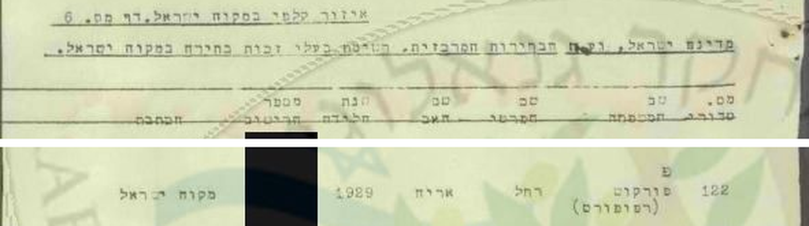
בישראל — במקווה ישראל רחל פוגשת את אברהם צדוק, יליד המוסד, נכד לאחד מתלמידיו הראשונים [02:33:26]; נישואים, חיים בחולון (גורדון 34), שני בנים: עדו וזיו. ב-23.12.2009 — עדות וידאו מלאה ביד ושם. ב-2013 — הגשת דפי עד על הוריה, אחיותיה וסבתהּ. נפטרה בינואר 2021, כבת 91, שבעת ימים ומוקפת משפחה — מן המעטים ששרדו מן השושלת שהחלה באחוזות אוקרמזו.
פרק ה' — תיקי שטוטהוף המקוריים: מה הם מגלים
תיקי המחנה מצויים בידינו משני מקורות משלימים: הסריקות מארכיון Arolsen (14 סריקות), והמסמכים שמסר ארכיון מוזיאון שטוטהוף עצמו באמצעות ראשת הארכיון, ד"ר דנוטה דריווה (18 קבצים — סעיף 8 להלן). אלו המסמכים האותנטיים החזקים ביותר בתיק, והם מדייקים את הסיפור בכמה נקודות:
{kind=link}
איך מסודרים המסמכים בארכיון. ארבע-עשרה הסריקות שהתקבלו מארולסן אינן אוסף מקרי: הן ארבע יחידות ארכיון נפרדות, כולן בתיבה אחת של מרשם שטוטהוף ("Files with names from STRAUS" — "תיקים בשמות החל מ-STRAUS", אוסף 1.1.41.2, "מסמכים אישיים, שטוטהוף"):
- תיקה האישי של רחל — "Personal file of STRULOWITS, RUCI, born on 16-Apr-1927, born in Ökörmezö" ("תיק אישי של סטרולוביץ רוצי, ילידת 16 באפריל 1927, ילידת אוקרמזו"), סימוכין 01014102 129.172, אסירה 38444 — שלושה מסמכים: מעטפת התיק, כרטיס האסירה ושאלון הקליטה.
- תיקה האישי של סימה — "Personal file of STRULOVITS, SARY, born on 26-Dec-1926, born in Ökörmezö" ("תיק אישי של סטרולוביץ שרי, ילידת 26 בדצמבר 1926, ילידת אוקרמזו"), סימוכין 01014102 129.171, אסירה 38443 — שני מסמכים: מעטפת התיק וכרטיס האסירה.
- "תיק" על שם האם — "Personal file of STRULAWITS, ROSE" ("תיק אישי של סטרולביץ רוזה"), סימוכין 01014102 129.168 — ובו מסמך אחד בלבד, כרטיס הפניה (סעיף 4 להלן).
- "תיק" על שם האב — "Personal file of STRULAWITS, LAJOS, born on 2-Feb-1923" ("תיק אישי של סטרולביץ לאיוש, יליד 2 בפברואר 1923"), סימוכין 01014102 129.167 — ובו כרטיס הפניה בלבד. תאריך הלידה ומספר האסיר 13708 שבכותרת התיק אינם על הכרטיס עצמו (שדות הלידה בו ריקים) והם שיוך שגוי במפתח הארכיון — ראו סעיף 4.
{kind=link}
{kind=link}
{kind=link}
{kind=link}
{kind=link}
{kind=link}
שמות שני התיקים הראשונים הם עצמם עדות: הארכיון קטלג את רחל בשמה ההונגרי רוצי ובשנת הלידה המנופחת 1927, ואת סימה בשמה ההונגרי שרי — הטביעות שהותירו בהן הקליטה במחנה וסיפור הקאפו (פרק א').
1. תאריך המעצר במסמך: 14 באפריל 1944 (שתי עדויות מתיישבות דווקא עם 16.04 — ראו פרק ו'1). בשאלון הקליטה של רחל בשטוטהוף (Häftlings-Personal-Bogen, מסמך 105591037 🗎) כתוב: "Verhaftet am: 14.4.44, wo: am Orte" — נעצרה ב-14.04.1944, במקום מגוריה. יומיים לפני יום הולדתה ה-15.
2. תאריך ההגעה לשטוטהוף: 29 ביוני 1944, מאושוויץ. בכרטיסי האסירה של רחל ושל סימה: "Eingewiesen am: 29.6.44, durch: KL. Auschwitz" — כלומר האחיות הגיעו במשלוח נשים גדול מאושוויץ, בדיוק "כחודש אחרי" ההגעה לאושוויץ, כמו בעדות רחל. גודל המשלוח — 2,502 נשים — נמסר בידי ארכיון מוזיאון שטוטהוף, ורשימת הטרנספורט עצמה מאששת אותו בחשבון פנימי: סימה היא שורה 802 ומספרה 38443, כלומר גוש המספרים נפתח ב-37,642; 37,642 ועוד 2,502 פחות אחד = 40,143 — גוש רצוף ותקין.
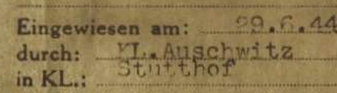
3. ההורים היו רשומים כ"נמצאים כעת באושוויץ". זה הממצא הדרמטי ביותר, ויש להבחין בין שלושת המסמכים:

- בשאלון הקליטה של רחל, בשדה "Name der Eltern" (שמות ההורים), כתוב "Lajos S., Rose Farkas" ומתחתיו, בשדה "Wohnort" (מקום מגורים): "Kl. Auschwitz" — כלומר רחל מסרה את שני הוריה ואת מקומם.
- בכרטיס האסירה שלה, בשדה "Wohnort d. Angehörigen" (מקום מגורי הקרובים), נרשם רק "Vater: Lajos S. z.Zt. Auschwitz" ("האב: לאיוש ס' — כעת אושוויץ").
- בכרטיס האסירה של סימה נרשם באותו שדה "Vater: Lajos S. – z.Zt. in Kl. Auschwitz" ("האב: לאיוש ס' — כעת במחנה אושוויץ") — רק האב, ולא האם.
כלומר: ב-29.06.1944 מסרה רחל ששני הוריה באושוויץ; בכרטיסי שתי האחיות נרשם האב בלבד. פירוש זהיר: ייתכן שהבנות ידעו שההורים חיים ועברו את הסלקציה — וייתכן שמסרו את המקום האחרון שבו ראו אותם. בצירוף הרישום במאגר מוזיאון אושוויץ של "Strulovics Lejba" עם מספר אסיר A-8557 נפתחת האפשרות שהאב, ואולי גם האם, עברו את הסלקציה וחיו באושוויץ עוד שבועות לאחר ההגעה — אפשר ש… טעון אימות (פרק ח'): הרשומה במאגר המקוון דלה — שם, "Isr." (יהודי) ומספר אסיר בלבד, ללא תאריך לידה, מקום או גורל — והזיהוי נשען על השם בלבד, בעוד שבאזור מתועדות משפחות סטרולוביץ נוספות ושלושה איותים לשם. אימות סופי מול מוזיאון אושוויץ עודנו הצעד הקובע.
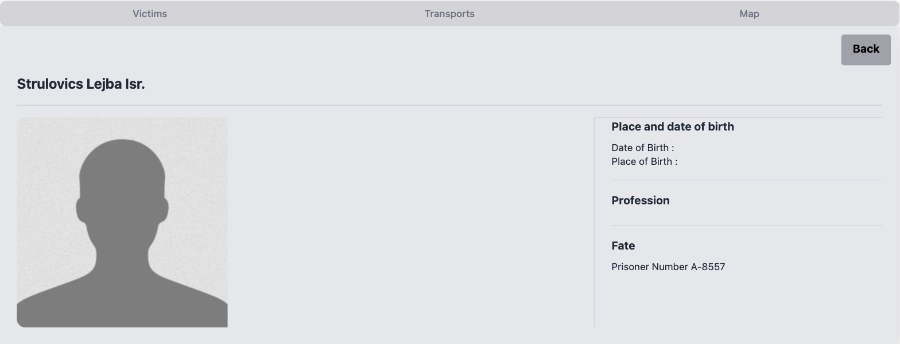
4. "כרטיס Rose" — כרטיס הפניה, לא תיק אסירה. המסמך 105590980 איננו תיק אסירה של האם — זהו כרטיס הפניה (Hinweiskarte) של מרשם שטוטהוף: "STRULAWITS geb. FARKAS, Rose — K.L. Au. — siehe: STRULAWITS Ruci, 38444" ("סטרולביץ לבית פרקש, רוזה — מחנה אושוויץ — ראו: סטרולביץ רוצי, 38444"). כלומר, פקידי הרישום יצרו כרטיס על שם האם (שמקומה צוין "מחנה אושוויץ") שמפנה לתיק של בתה. האם עצמה לא הייתה רשומה בשטוטהוף. כרטיס הפניה זהה קיים גם על שם האב: "STRULAWITS, Lajos — K.L. Au. — siehe: STRULAWITS, Ruci 38444, 16.4.1927, Ökörmezö". בכרטיס זה שדות "Geb. Dat." ו-"Geb.-Ort" (תאריך ומקום לידה) של האב ריקים — ולכן תאריך הלידה 02.02.1923 ומספר האסיר 13708 שמופיעים בכותרת התיק במפתח הארכיון (וממנו גם ברשומת האינדקס של USHMM) שייכים לאדם אחר בשם דומה, ואינם של האב. שני הכרטיסים הם עדות מנהלית לכך שרחל מסרה בקליטה ששני הוריה באושוויץ.
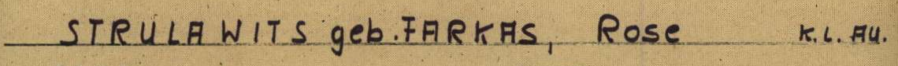
5. החתימה של רחל, בת 15, בשטוטהוף. בתחתית שאלון הקליטה מופיעה חתימתה בכתב ידה: "Sztrulovics Ruci" — כנראה המסמך האישי המוקדם ביותר בכתב ידה ששרד.
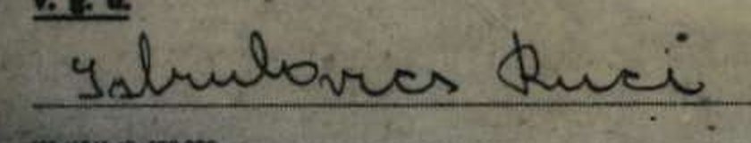
6. תיאורה של רחל במסמכי המחנה: מבנה גוף חסון, פנים סגלגלות, עיניים שחורות, שיער חום כהה, שיניים טובות — דוברת הונגרית וגרמנית. מקצוע: משק בית. השכלה: בית ספר עממי. סימה: גוף צנום, עיניים חומות, שיער חום, דוברת הונגרית ורוסית (כנראה רותנית), מקצוע: משק בית. "מצב גופני: טוב" — אצל שתיהן, ביום הקליטה.
7. על מות סימה אין מסמך בתיק. במעטפת התיק של סימה, המשבצות "Todesmeldung" (הודעת פטירה) ו-"Sterbeurkunde" (תעודת פטירה) אינן מסומנות — בתיק יש רק את כרטיס האסירה. פירוש הדבר: מותה בשטוטהוף לא תועד בתיק האישי (תופעה שכיחה בחודשי הכאוס של סוף 1944 – תחילת 1945). גם תשובת ארכיון המוזיאון (סעיף 8) לא כללה רשומת מוות מספרי המתים — כך שמותה נותר מתועד בעדויות בלבד ("כמעט ודאי", פרק ח').
8. המסמכים מארכיון מוזיאון שטוטהוף עצמו. ראשת הארכיון, ד"ר דנוטה דריווה, העבירה 18 מסמכים (התיקייה), ובהם שלושה מסמכי מקור שלא היו בידינו:
- רשימת הטרנספורט המקורית מ-29.06.1944 (סימול הארכיון POL-AMS-I-IIb-10-099, עמ' 13 של הרשימה): רשימה שמית במכונת כתיבה של הנשים שהגיעו מאושוויץ, ובה, בשורות עוקבות — "802. Strulowits Sary, 26.12.26, אסירה 38 443" ו-"803. Strulowits Ruci, 16.4.27, אסירה 38 444" — שתיהן בסיווג "Sch.H.pol." — Schutzhaft, politisch: "מעצר מגן" בסיווג "פוליטי". זהו מונח סגי-נהור נאצי למעצר מנהלי ללא משפט ובלי מועד קץ, והוא הסיווג הבירוקרטי השגרתי שהודבק לאסירות יהודיות; אין בו כדי לומר דבר על פעילות פוליטית או על הגנה כלשהי. נתינות: "Ungarn" (הונגריה); מוצא: "KL. Auschwitz" (מחנה הריכוז אושוויץ). זהו המסמך שממנו נגזרו כרטיסי האסירה, והוא קובע סופית את מקומן של האחיות במשלוח.
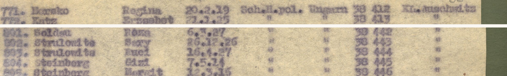
- המקור הצבעוני של כרטיסי האסירה של שתי האחיות (סימולי הארכיון I-III-24771 ו-I-III-24772) ושל שאלון הקליטה החתום של רחל (I-III-15117) — עותקי הארכיון הפולני של המסמכים שסריקותיהם האפורות התקבלו מארולסן, באיכות גבוהה ובצבע, כולל חותמת "Jude" הסגולה והמשולש.
- פרקי המחקר על OT Thorn ועל פינוי האסירות מתוך ספרה של ד"ר דריווה על השמדת היהודים בשטוטהוף — 14 עמודים (עמ' 192–201, 232–235) ששולבו בפרק ד' (תקציר בעברית · העמודים עצמם, החל מ-dok_1).
{kind=link}
לצד המסמכים מסרה ד"ר דריווה שתי קביעות חשובות: "Their documents indicate that their parents remained in Auschwitz, so they were likely murdered there" — "מסמכיהן מלמדים שהוריהן נותרו באושוויץ, ולכן ככל הנראה נרצחו שם" — הערכת המומחית של ראשת הארכיון, המתיישבת עם התרחיש שההורים לא נרצחו בהגעה אלא נותרו באושוויץ (ולגבי האב — עם רישומו כאסיר A-8557); וכן: בידי המוזיאון אין את כל רשימות האסירות שנשלחו לתתי-המחנות — ולכן שיוכה של רחל לטרנספורט מסוים לטורן אינו ניתן כיום לאימות מסמכי, ונשען על עדותה.
למה אין "תעודת פטירה" על ההורים — ומה כן אפשר להשיג
יהודי הונגריה שנרצחו בסלקציה באושוויץ לא נרשמו כלל — בלי מספר, בלי תיק, בלי תעודת פטירה. ספרי המתים של אושוויץ (Sterbebücher) מתעדים רק אסירים רשומים, וגם הם השתמרו בעיקר לשנים 1941–1943. לכן, אם ההורים נרצחו בהגעה — לא יהיה על כך מסמך מחנה לעולם; התיעוד הוא נתוני הסלקציה של הרכבת (1,987 הנרצחים הם שארית חשבונית; רק 507 הגברים נרשמו — פרק ד') ודפי העד. אבל ממצאי סעיף 3 לעיל פותחים תרחיש אחר: אם האב (ואולי האם) נרשמו כאסירים — קיים שובל מסמכים פוטנציאלי (רישום, מספר, ואולי תיעוד מוות) — וזו בדיוק השאלה שהפנייה למוזיאון אושוויץ (אסיר A-8557) אמורה להכריע.
פרק ו' — העדות של רחל: התקציר הרשמי המלא
עדות הווידאו (יד ושם, חטיבה O.3, פריט 8424116) נמשכת שעתיים ו-41 דקות, הוקלטה בישראל ב-23.12.2009. התקציר הרשמי:
ילדות ב-Volove; כיבוש [Volove] בידי הצבא ההונגרי ב-1939; הגעת פליטים מפולין; גירוש תושבים חסרי נתינות ב-1941; החיים תחת הכיבוש ההונגרי כולל חקיקה אנטי-יהודית, החרמת עסק האב ואיסור שחיטה כשרה; כיבוש [Volove] בידי הצבא הגרמני במרס 1944; גירוש לגטו Sekernice; העברה ל-Auschwitz לאחר כחודש; החיים במחנה ללא עבודה כולל מסדרים; העברה ל-Stutthof לאחר חודש; החיים במחנה ללא עבודה כולל סלקציות; העברה ל-Thorn; ניתוק מהאחות החולה; החיים במחנה כולל רעב ועבודה בחפירות; התקרבות [צבא] החזית; צעדת מוות; רצח אנשים במהלך צעדת המוות; הגעה ל-Praust לאחר כעשרה ימים; החיים ב-Danzig כולל עבודה בחפירות, רעב ומחלת הטיפוס; שחרור בידי הצבא האדום בפברואר 1945; החיים לאחר המלחמה; עלייה לארץ ישראל במאי 1946.
צפייה: העדות המלאה ביוטיוב (ערוץ יד ושם) — העדות תומללה במלואה: התמליל המתוזמן השלם, וניתוח הממצאים בפרק ו'1 ובקובץ ניתוח העדות.
פרק ו'1 — מה חושף התמלול המלא של העדות
העדות תומללה במלואה (2:41 שעות) — צפייה בעדות ביוטיוב · פנימי: התמליל המלא, ניתוח מפורט. המראיינת: סיגל הולצמן; הראיון נערך בביתה של רחל. בגרסת האתר, כל חותמת זמן [שעה:דקה:שנייה] בפרק זה היא קישור לרגע המדויק בעדות ביוטיוב. אלה הממצאים המרכזיים שהעדות מוסיפה:
גורל האב. ברכבת הביתה אחרי השחרור ניגש אל רחל בחור ואמר: "אבא שלך נפטר, ואני בטוח, מפני שהייתי איתו. הוא מכר את המנת אוכל שלו בשביל סיגריה, והוא מת מרעב" [02:24:44]. כלומר: האב אריה-לייב עבר את הסלקציה, חי במחנה תקופה — ומת שם מרעב (כמעט ודאי — פרק ח'). עדות זו מתיישבת עם רישום "z.Zt. Auschwitz" ("כעת אושוויץ") בכרטיסי שתי הבנות; הזיהוי שלו עם האסיר A-8557 שבמאגר מוזיאון אושוויץ הוא אפשרות נפרדת, שעדיין טעונה אימות. האם, לעומת זאת, ירדה מהקרון כשתינוקהּ של אחותה בידיה — כדי לעזור לדודה; לשאלת המראיינת "את מבינה היום שזה שאמא החזיקה תינוק על הידיים זה גזר דין מוות היה בשבילך" השיבה רחל: "בהחלט, בהחלט" [01:13:44].
הרגע שהציל את חייה: בסלקציה ("עכשיו אני יודעת שזה מנגלה") ענתה רחל שהיא בת 15 — וקאפו נתנה לה מכה, אמרה למנגלה "בת שמונה עשרה", ואחר כך רדפה אחריה: "תזכרי, את בת שמונה עשרה" [01:12:43]. זהו ככל הנראה ההסבר לשנת הלידה המוקדמת ברישומי שטוטהוף — אם כי בדקדוק החשבון נותר פער קטן: "בת שמונה עשרה" מתיישבת עם 1926, ואילו נרשם 1927 (גיל 17). הדמות האחרונה מהמשפחה שראתה באושוויץ: בצלאל, סבה מצד האם, גבוה שני מטר, מנופף בידו אל הנכדות — "עד היום אני רואה אותו" [01:15:46].
הפרידה מסימה — כפויה. מזכירת המחנה (שרייברין) היהודייה בשטוטהוף שחררה את רחל פעמיים מסלקציות-עבודה כדי שתישאר ליד סימה החולה (כנראה דלקת ריאות); בפעם השלישית אמרה: "אני לא משחררת אותך... את הולכת לעבודה, תגידי שלום לאחותך" — "ויותר לא ראיתי אותה" [01:36:17]. סימה, מחדר החולים: "אני כבר לא אהיה בת שמונה עשרה" [01:35:40].
משפחת האב: לאב היו 13 אחים ואחיות — וכל 14 הילדים מתועדים ברשומות הלידה האזרחיות, כולל סימה (1904), חיה (1907) ושרה (1912), שנשתמרו רק ברשומות — ראו פרק ג'; שתי הצעירות שבהם — התאומות פייגה ופפי (נ' 26.02.1914) — הסתתרו עם אביהן יעקב ושרדו איתו; אחת התאומות נספתה דווקא אחרי השחרור, כשחייל רוסי הטריד אותה בזמן שמכרה דלק — הדלק נשפך והיא נשרפה [02:26:06]. את סבה יעקב מצאה רחל חי בחוסט בשובה [02:25:17] (הוא נפטר שם ב-1945, כמתועד בדף העד). דודה נוספת מן העדות: רחל פרקש — ככל הנראה אחות האם, רחל (נ' 22.11.1913, נישאה ב-1935 להרש איצקוביץ מרוסקה פולה — רשומת הנישואים אותרה, פרק ג') — שוויתרה בחורף בטורן, חזרה לשטוטהוף ולא שרדה [01:47:39].
מסלול העלייה: לא ספינת מעפילים. אחרי השחרור: חוסט → קיבוץ בני עקיבא בבוקרשט (שם נודע לה שגדליה חי: "איך הוא שרד? הוא היה כזה קטן, רזה ומפונק") → בית בני עקיבא בבודפשט (כחודשיים אשפוז בבית חולים בבודה) → גרמניה "איזשהו זמן, וכל הזמן עם אחי" (= מחנה העקורים ליפהיים, כמתועד בכרטיס ארולסן) → עלייה בסרטיפיקט ("קיבלו שלושה סרטיפיקטים, אז אני ועוד שני בחורים הגענו לארץ") → מקווה ישראל, מאי 1946 [02:29:57–02:30:31].
ההיכרות עם אברהם צדוק: במקווה ישראל. אברהם צדוק — יליד מקווה ישראל, בן למשפחה שסבהּ היה מתלמידי המוסד הראשונים; יתום שגויס אליו בשכנוע "אתה אוהב אבטיח? אתה רוצה לגדל אבטיח?", ונשא יהודייה מיפו [02:33:18].
פרטים נוספים מן העדות: תנועת הנוער בקומה השנייה הייתה קן בני עקיבא; לבית קראו בכפר "המבצר" (קירות בעומק מטר — רחל שחזרה את החלון העמוק בביתה בחולון); למשפחה הייתה גם תחנת דלק (שהוחרמה בחקיקה ההונגרית) ואחוזה חקלאית עם עדר כבשים שנוהלה בידי שתי משפחות אוקראיניות; ב-1941 המשפחה החביאה במחסניה יהודים שנמלטו חזרה מהגירוש לגליציה; לפני היציאה לגטו ירד האב למרתף, הטמין כלי כסף ותכשיטים מאחורי לבנים בתקרה ואמר: "מי שיחזור — שיוכל..." [00:59:02]; בצעדת המוות מטורן יצאו כ-1,200 נשים והגיעו כ-500 [02:10:29]; אחרי השחרור — ניסיונות אונס ליליים של חיילים רוסים, שרחל עצמה ניצלה מהם בנס [02:20:26]; היא כתבה יומן — שאבד במעבר דירה [02:34:44]; שישה נכדים, והנכדה אמרה: "סבתא, ביום השואה אני אזמין אותך ואני אתגאה בך" [02:36:37].
הערות בדיקה שהעדות מעלה: דב אולי נולד ב-1926 ונרשם "מבוגר בשנתיים" (גויס בן 16); בעדות מוזכר מחנה "אלבינג" (Elbląg, מחנה-בת של שטוטהוף) וגם "בידגושץ'" — מקומו המדויק של אלבינג במסלול אינו ברור מהעדות (לפני שטוטהוף או אחריו; ראו גם ניתוח_העדות), וייתכן שמדובר בתחנת ביניים בדרך לטורן; "יום אחרי פסח עצרו אותנו" — פסח תש"ד הסתיים ב-15.04.1944, כך ששתי העדויות (רחל וריטה שניידר-פולק) מתיישבות יותר עם 16.04, ואילו שאלון שטוטהוף — שנרשם חודשיים מאוחר יותר — נוקב 14.04, יום שעדיין בתוך החג; פער קטן שנותר פתוח.
פרק ז' — סיפור ההצלה של גדליהו
גדליה (גיולה), יליד 03.03.1931, גורש עם המשפחה, עבר את אושוויץ ובוכנוולד, ובדצמבר 1944 הועבר לתת-המחנה ברגה על האלסטר. באפריל 1945 נמלט מצעדת המוות עם אדולף ("בומי") שפינצן מסיגט (יליד 1930). השניים הסתתרו באסם של יוסף ואנה קרשק (Karásek) בכפר קרשוב שליד פלזן; אנה גילתה אותם והמשפחה — שבסביבתה שהו פליטים גרמנים — החביאה והאכילה אותם 22 ימים עד השחרור. גדליה עלה ארצה עם גרעין בני עקיבא מבודפשט, עיברת את שמו לגדליהו רף, היה ממקימי אילניה, וחידש את הקשר עם מציליו. ב-21.11.2004 הוכרו יוסף ואנה קרשק כחסידי אומות העולם (תיק 10412) — רשימת חסידי אומות העולם מצ'כיה · הרשימה בתיקייה, ובה "Karasek, Jozef & Anna — 10412 — 2004"; בהודעת יד ושם לעיתונות מ-03.04.2005 מתועד הטקס שבו השתתף בנם מילוסלב. גדליהו נפטר ב-2008; כשבועיים אחרי מותו הגיע מכתב שבישר כי אדולף, שאותו חיפש כל חייו, אותר באריזונה. עדותו (2:24 שעות, עברית) — קרן שפילברג, ראיון 34728; לצדה ארבעה ראיונות ביתיים ביוטיוב (ערוץ Dror Raf).
התיק האישי בבוכנוולד. במאגר המקוון של ארולסן אותר תיקו האישי של גדליה — "Personal file of STRULOVICS, GYULA, born on 3-Mar-1931" (תיק אישי של סטרולוביץ גיולה, יליד 3 במרס 1931), סימוכין 01010503 001.495.346, תשעה מסמכים בשמונה־עשרה סריקות בארכיון; ארבעת המסמכים הנדונים כאן נשמרו בתיקיית המקורות, וחמישה נוספים (ובהם כרטיס העבודה וכרטיס המרפאה) טרם הורדו — פרק ט'. מעטפת התיק נושאת את המספר T/D 278718 ואת מספר האסיר 54982.
{kind=link}
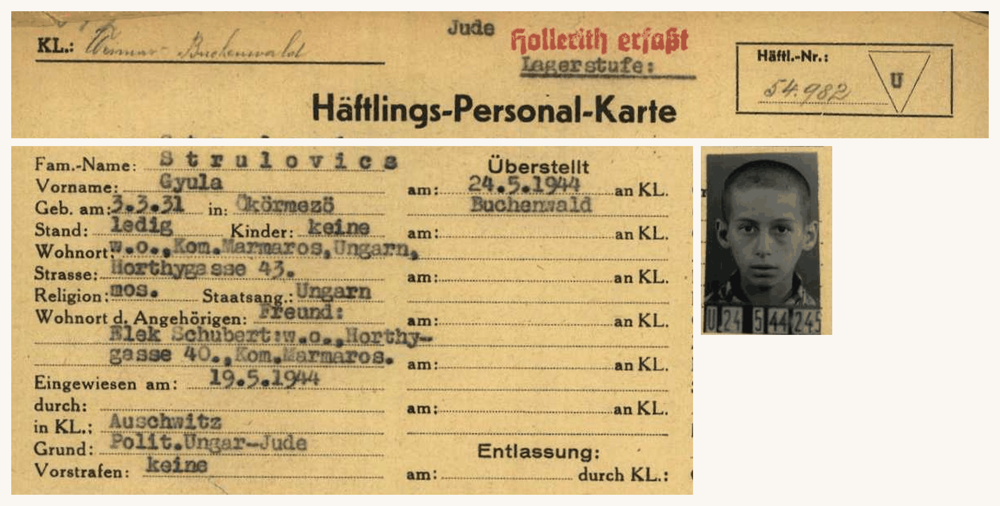
מה שהתיק מוסיף:
- תצלומו בן השלוש־עשרה, שצולם ביום קליטתו בבוכנוולד — 24.05.1944, כמסומן בלוחית שבתחתית התצלום (U 24 5 44 245). זהו התצלום המוקדם ביותר שלו שאותר.
- מועד ההגעה לאושוויץ מתועד: "Eingewiesen am: 19.5.1944 … in KL.: Auschwitz" (הוכנס ב-19.05.1944 … למחנה אושוויץ), ובכרטיס המקביל שבתיק — "durch: RSHA" (באמצעות המשרד הראשי לביטחון הרייך). עד כה נשען תאריך ההגעה על שחזור מרכבת אוקרמזו של 17.05.1944; כעת הוא מאומת במסמך.
- ההעברה לבוכנוולד: "Überstellt am 24.5.1944 an KL. Buchenwald" (הועבר ב-24.05.1944 למחנה בוכנוולד) — חמישה ימים בלבד באושוויץ.
- עילת המאסר: "Grund: Polit. Ungar-Jude" (סיבה: יהודי הונגרי מטעמים פוליטיים), ומספר האסיר מסומן במשולש ובאות U — Ungar, הונגרי.
- הנתינות הרשומה: "Religion: mos. — Staatsang.: Ungarn" (דת: משה — נתינות: הונגריה), כמתחייב מסיפוח קרפטורוס להונגריה ב-1939.
- כתובת הבית: "Wohnort: w.o., Kom. Marmaros, Ungarn — Strasse: Horthygasse 43" (מקום מגורים: כנ״ל, מחוז מרמרוש, הונגריה — רחוב: רחוב הורטי 43). זו הכתובת שברשימת הוועדה הסובייטית מ-29.03.1946 מופיעה כרחוב שבצ'נקו 43 — הרחוב הוסב על שמו של שבצ'נקו עם המעבר לשלטון הסובייטי. בכך מאומתת כתובת בית המשפחה בוולובה.
- האב נרשם כקרוב: בכרטיס השני שבתיק — "Wohnort d. Angehörigen: Vater: Leib Szt., Ökermözo" (מקום מגורי הקרובים: האב לייב סט', אוקרמזו), ובכרטיס החפצים — "Vater: Leib S., Ökermözö/Ungarn/". בכרטיס הראשון נרשם דווקא ידיד: "Freund: Elek Schubert, w.o., Horthygasse 40" (ידיד: אלק שוברט, כנ״ל, רחוב הורטי 40) — שכן מעבר לכמה בתים.
- כרטיס החפצים נושא את חתימת ידו — "Sztrulovics Gyula" — לצד המקצוע "Beruf: Schüler" (מקצוע: תלמיד) וחותמת אלכסונית "keine Effekten" (ללא חפצים): הוא הגיע בלי דבר. זהו התאום לחתימתה של רחל בת ה-15 שבתיק שטוטהוף.
- תיאורו הגופני: 160 ס״מ, "schlank" (רזה), פנים סגלגלות, עיניים ושיער חומים, אוזניים בולטות, שיניים שלמות. ותחת "Sprache" (שפות): "ung., russ., tsch., deutsch" — הונגרית, רוסית, צ׳כית וגרמנית, ארבע השפות של ילד בן שלוש־עשרה מקרפטורוס.
{kind=link}
הדרך ארצה: מעפיל, לא בעל סרטיפיקט. במסד הנתונים של מחנה המעפילים בעתלית רשום "גדליהו רף (פרקש)", ולצדו שם משפחה נוסף "רפפורט" — מסמך 28052 (מפתח IGRA 14599). מסד הנתונים הזה, מסביר דף המאגרים של IGRA, הוא רשימה חלקית (כ-51,845 רשומות) של הרשומים במאגר עצורי עתלית, שנערכה מרשימות מנהליות בריטיות ומעדויות של מי שגורשו כמעפילים בלתי לגליים. מכאן — כמעט ודאי — שגדליהו הגיע בהעפלה ולא בסרטיפיקט; שני האחים, שהיו יחד עד גרמניה, נכנסו אפוא לארץ בשני מסלולים שונים. הרשומה מאגדת את שלושת שמותיו — רף, פרקש ורפפורט — ואינה נושאת תאריך, ולכן אין לקבוע ממנה כמה זמן שהה בעתלית, ואם גורש משם לקפריסין (ראו להלן).
אילניה: התיעוד הישראלי. ב-1955, בן 24 בלבד, הוא כבר מועמד מטעם "העובד הציוני — הרשימה הפרוגרסיבית" לוועידה השמינית של ההסתדרות הכללית, נציג אילניה (מקום 212 ברשימה הארצית) · העמוד בתיקייה. ובפנקס הבוחרים לכנסת של 1992 רשום בית הרף באילניה בשורות עוקבות:
{kind=link}
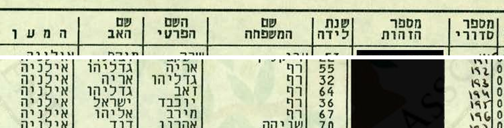
מן הרישום עולים שלושה דברים:
- אביו של גדליהו רף נרשם "אריה" (שורה 193: "רף — גדליהו — בן אריה — 32"). זהו אימות ישראלי עצמאי לשמו של האב אריה-לייב — ותאומו של הרישום המקביל של רחל ב-1949 ("רחל — בת אריה"). שנת הלידה שבפנקס, 1932, מאוחרת בשנה לזו שבתיק בוכנוולד (03.03.1931); הרישום הישראלי מאוחר ומשוער, והתיק עדיף.
- אריה רף, יליד 1955, בן גדליהו (שורה 192; באינדקס IGRA שמו שוכתב בטעות "אריה רך" — שיבוש קריאה של הפ"א הסופית, שבגללו אינו עולה בחיפוש "רף") — הבן הבכור נקרא על שם הסב שנספה. הוא זה שמופיע ב-2012 ברשימת המועמדים לבחירות למועצה האזורית הגליל התחתון. לצדם זאב, יליד 1964, בן גדליהו ויוכבד, ילידת 1936, בת ישראל — רעייתו, ששמה הרשמי יוכבד (במשפחה: חוה).
- הערת אזהרה: בשורה 196 רשומה מירב רף, ילידת 1967 באילניה — אך בת אליהו, לא בת גדליהו; היא בת ענף רף אחר במושב, ואינה "מרב" שבעץ המשפחה (בתו של דב). קרבת שני הענפים — שאלה פתוחה.
שמו נכתב בתיק בשלושה איותים — Strulovics, Sztrulovics ו-Strulovic — הוכחה נוספת לכך שהחיפוש חייב לעבור על כל הווריאנטים.
פרק ח' — מה מאומת, מה כמעט ודאי, ומה פתוח
מאומת במסמכים:
- הזהות ותאריך הלידה — 16.04.1929 בכל התיעוד המאוחר ובמסורת (הכרעת הפער מול הרשומה האזרחית 12.04 — ראו "פתוח").
- רשומת הלידה האזרחית של רחל עצמה — Ruchlja, 12.04.1929, וולובה, בת Struljovic Leba ו-Farkas Rifka (דלו 118, רשומה 104/1929), ושל אחותה סימה — Semo, 06.12.1926 (דלו 119, רשומה 300/1926).
- עץ המשפחה לשבעה דורות — מרשומות אזרחיות, מפקד 1921, דפי עד ורשומות שמיות: רשומת הלידה של האב אריה-לייב (מרס 1894), רשומות הלידה של 13 מדודי רחל מצד האב, רשומות הלידה של 13 מ-14 ילדי בצלאל ואסתר פרקש מצד האם (ובכללן רשומת האם רבקה-רוזה, 25.04.1904; לבכורה לאיה לא אותרה רשומת לידה, ותאריכה נגזר מגילה ברשומת הפטירה), שש רשומות הפטירה של הילדים שמתו בינקותם וארבע רשומות נישואים של אחיה, רשומת הלידה של גיטה (26.03.1936), רשומת לידתה של שרה, סבתה של רחל (ינואר 1876) המוכיחה שהיא בת גדליה רפפורט ואסתר כץ, ונישואי גדליה (1884/1903) ובהם שמות הוריו משה ויֶנטה.
- גיליון מפקד 1921 של בית המשפחה בקושלובו, ונישואי הדודה גיטל לאלכסנדר וולף (1933).
- מסלול הרדיפה עד שטוטהוף — מהמעצר ועד הקליטה ב-29.06.1944, במסמכים (זיהוי בעלות המסמכים — "כמעט ודאי" להלן). (מטורן ואילך — על פי עדות רחל בלבד; ראו "פתוח".)
- רישומי שטוטהוף על שם "Strulowits Ruci" ו-"Strulovits Sary" — מספרי אסירות עוקבים (38444 ו-38443) ושתי יחידות ארכיון נפרדות (01014102 129.172 ו-129.171), פרק ה'. זיהוי השתיים כרחל וכסימה — "כמעט ודאי" להלן.
- רכבת אוקרמזו, 17.05.1944, ובה 3,052 מגורשים (שיוך המשפחה לרכבת זו דווקא, ונתוני הסלקציה שלה — ראו "כמעט ודאי").
- זיהוי טרנספורט 360 במרשם מוזיאון אושוויץ כרכבת אוקרמזו — בהתאמה של ארבע מתוך ארבע הרכבות שרשימת קושיצה מונה ל-17.05.1944, ובזהות המספר הסידורי (10) עם מספרה של הרכבת בטבלת גלזר. שם העיירה שברשומה — "קרשמזו" — שגוי (פרק ד').
- שושלת רפפורט כבעלי אחוזות מ-1893 — ברצף מרשמי בעלי הקרקעות והמשקים עד 1912.
- ההצלה של גדליה בידי משפחת קרשק והכרתם כחסידי אומות העולם.
- תיקו האישי של גדליה בבוכנוולד (אסיר 54982) ובו תצלומו, חתימתו, נתינותו ההונגרית, כתובת הבית ברחוב הורטי 43 בוולובה, וכן מועד ההגעה לאושוויץ — 19.05.1944 וההעברה לבוכנוולד ב-24.05.1944 (פרק ז').
כמעט ודאי — עם פירוט המקורות של כל קביעה:
- מות סימה בשטוטהוף. מקורות: עדות רחל (נפרדו בהעברה לטורן; עד ראייה סיפר על מותה); דפי העד שהגישה רחל ב-2013; היעדרה מרשימות החוזרים של 1946. מסמך מחנה על מותה אין בתיק האישי (פרק ה'), וההפנייה לספרי המתים של שטוטהוף תלויה ועומדת — לכן "כמעט ודאי" ולא "מאומת".
- רצח גיטה (1944) והישרדות הסב יעקב ומותו בחוסט 1945. מקורות: דפי עד (על גיטה — בכתב ידה של רחל; על יעקב — של נכדתו אסתר גוטמן-רפפורט) ועדות רחל (לידת גיטה עצמה — מאומתת כעת ברשומה האזרחית, פרק א'; הסיווג כאן נוגע לרצח). לנרצחת הגעה בת שמונה לא ייתכן מסמך מחנה (פרק ה'), ולמות יעקב ב-1945 לא צפוי רישום מנהלי זמין — דפי העד הם התיעוד המיטבי האפשרי; ובכל זאת, באמת-מידה אחידה עם מות סימה, הסיווג הוא "כמעט ודאי".
- רשומת שטוטהוף 38444 = רחל. מקורות: כרטיס האסירה ושאלון הקליטה המקוריים — שם "Strulowits Ruci", ילידת Ökörmező, 16.04 (שנה 1927 — ראו הסבר הקאפו), הורים "Lajos S. + Rose Farkas" — כל הפרטים תואמים; רשומת USHMM/ארולסן אוסף 1.1.41.2; רשימת קלרספלד "Nevek" (1995). ההסתייגות היחידה: אין תעודת זהות עם תמונה שמקשרת פיזית — ולכן "כמעט ודאי" ולא "מאומת".
- הרכבת מ-17.05.1944 היא רכבת המשפחה. מקורות משולבים: (1) רשימת מפקד תחנת קושיצה — רכבת "Ökörmező" ב-17.05.1944, 3,052 מגורשים (degob.org/tables/kassa.html); (2) רשימת גלזר על הסלקציות בבירקנאו — אותה רכבת, הגעה 19.05 (zchor.org/hungaria.htm); (3) מאגר הגטאות של יד ושם — חיסול גטו סקלנצה 15.05.1944 דרך תחנת סלדובוש (רשומה 6663078); (4) עדות רחל: "כחודש בגטו" אחרי מעצר 14.04 (שאלון שטוטהוף). ההסתייגות: אין רשימה שמית של נוסעי הרכבת — ייתכן תאורטית שהמשפחה צורפה לרכבת חוסט של 24.05.
- גודל המשלוח לשטוטהוף — 2,502 נשים. מקורות: הנתון כפי שנמסר בידי ארכיון מוזיאון שטוטהוף, ואישוש פנימי מרשימת הטרנספורט עצמה (שורה 802 = מספר 38443, ומכאן גוש רצוף 37,642–40,143 — פרק ה' סעיף 2). ההסתייגות: מספר זה לא אומת מול רשימה שמית מלאה, אלא מול חשבון פנימי — ולכן "כמעט ודאי". מועד ההעברה עצמו, 29.06.1944, מאומת בשלושת מסמכי המחנה.
- הרישום בפנקס הבוחרים תש"ט = רחל. מקורות: הרשומה עצמה · העמוד המקורי — "פורקוש (רפופורט), רחל, בת אריה, 1929, מקוה ישראל" — ארבעה מזהים תואמים בבת אחת: שם האב אריה, שנת הלידה 1929, צירוף שמות המשפחה של האם והסבתא (פרקש-רפפורט) שהוא צירוף ייחודי למשפחה זו, ומקום המגורים מקווה ישראל, שאליו הגיעה במאי 1946 לפי עדותה. ההסתייגות, כמו ברשומת שטוטהוף 38444: אין מסמך נושא תמונה שמקשר פיזית — ולכן "כמעט ודאי" ולא "מאומת".
- מעברו של גדליהו במחנה המעפילים בעתלית. מקורות: רשומת מסד הנתונים של מחנה המעפילים עתלית, מסמך 28052, על שם "גדליהו רף (פרקש)" ולצדו "רפפורט" — שוב צירוף השמות הייחודי; ורישומי אילניה שמאמתים את זהותו (פרק ז'). ההסתייגות: הרשומה אינה נושאת תאריך ואינה מפרטת ספינה או משך מעצר — ולכן "כמעט ודאי" ולא "מאומת", והזמנת התיק מן הארכיון נוספה לפרק ט'.
- מות האב אריה-לייב באושוויץ, מרעב, אחרי שעבר את הסלקציה. מקורות: עדות עד ראייה שפגש את רחל ברכבת אחרי השחרור ("הייתי איתו... הוא מכר את המנת אוכל שלו בשביל סיגריה, והוא מת מרעב", [02:24:44]); שאלון הקליטה של רחל ושני כרטיסי האסירה, שבהם האב "z.Zt. Auschwitz" ("כעת אושוויץ"); כרטיס ההפניה על שמו במרשם שטוטהוף; והערכת ראשת ארכיון מוזיאון שטוטהוף (פרק ה' סעיף 8). ההסתייגות: אין מסמך מחנה על שמו — הזיהוי עם האסיר A-8557 הוא שאלה נפרדת ופתוחה.
- יוסף-דוד רפפורט (נ' 16.10.1891) הוא בנם של גדליה ומינדל. מקורות: דף העד שהוגש עליו · הרשומה בתיקייה, הנוקב באב "Gedali" ובאם "Minda Berkovic"; רשומת נישואי גדליה ומינדל ברקוביץ (06.08.1884, JewishGen); ולידתו ב-1891, בתוך טווח לידותיהם. ההסתייגות: שני השמות שכיחים באזור, ואין רשומת לידה אזרחית שאותרה על שמו — ולכן "כמעט ודאי" ולא "מאומת".
- נתוני הסלקציה של רכבת אוקרמזו. מקורות: טבלת גלזר · תצלום השורה. ההסתייגות המהותית: רק 507 הגברים הם נתון שנרשם; מספר הנשים (558) הוא אומדן לפי כלל של +10%, ומספר הנרצחים (1,987) הוא שארית חשבונית — ולכן "כמעט ודאי" ולא "מאומת" (פרק ד').
- מות גדליה רפפורט 1908–1909. מקורות: לידת בנו האחרון מאיר 28.01.1908 (רשומת לידה, JewishGen); שלושה נכדים בשם גדליה שנולדו 12/1909–02/1911 (רשומות לידה, JewishGen) — על פי מנהג הקריאה על שם נפטר; הידיעה "נפטר לא מכבר" ב-Görög katholikus szemle, 25.12.1910 (העמוד המקורי · בצפיין Arcanum); ומרשם 1912 שבו האחוזה רשומה כבר על שם "יורשי רפפורט גדיילו" והאלמנה (העמוד המקורי · בצפיין Arcanum).
{kind=link}
פתוח:
- הכרעת פער התאריכים 12.04/16.04.1929 — העתק מאושר של רשומת הלידה מ-DAZO (ההפניה המדויקת ידועה; הבקשה נשלחה — פרק ט').
- רשומות הלידה של דב ושל גדליה — אינן באינדקס JewishGen באף אחד מהאיותים.
- פער תאריך המעצר — 14.04.1944 בשאלון שטוטהוף מול 16.04.1944 בשתי עדויות (פרקים ד' ו-ו'1).
- זהות האסיר A-8557 — האם "Strulovics Lejba" שבמאגר מוזיאון אושוויץ הוא האב. הזיהוי נשען על השם בלבד; הפנייה למוזיאון אושוויץ אמורה להכריע (פרקים ה' ו-ט').
- מועד רצח האם — נרצחה באושוויץ ב-1944; האם בסלקציה של 19.05 או בשבועות שלאחריה (פרק ה' סעיף 3).
- שיוך רחל למשלוח מסוים לטורן — בידי מוזיאון שטוטהוף אין את כל רשימות תתי-המחנות (פרק ה' סעיף 8).
- המסלול מטורן לפראוסט ומועד השחרור — מסלולי הפינוי המתועדים של OT Thorn אינם עוברים בפראוסט, ודריווה מתארכת את שחרורי אזור פראוסט–דנציג למרץ 1945, בעוד העדות נוקבת בתחילת פברואר (פרק ד').
- זיהוי "רחל פרקש" שחזרה מטורן — ככל הנראה אחות האם, ילידת 22.11.1913 (פרקים ג', ד' ו-ו'1); רשומת נישואיה תומכת בכך, אך אין תיעוד מחנה.
- המסורת על מחנה מעבר בקפריסין — אינה מתיישבת עם התיעוד לגבי רחל עצמה (פרק ד'); ייתכן שהיא נוגעת לקרוב אחר.
- תוכן תיק T/D 394234 ותקופת ליפהיים — הבקשה הוגשה לארולסן (פרק ט').
- השלמת פרטי אברהם צדוק, בן זוגה (תאריכי חייו ומוצאו; בפנקס הבוחרים של מקווה ישראל ב-1949 — אותו פנקס שבו רשומה רחל — מופיעים שושנה צדוק, ילידת 1903 ואהרן צדוק, יליד 1898 · העמוד המקורי — היחידים בשם צדוק במקום; אפשר שהם הוריו — טעון אימות).
- איתור צאצאי הדודים ששרדו — נתן, פאני/פפי, אסתר גוטמן-רפפורט, לילי שפרינגר ושרה וולף.
- קרבתם של רפפורט שאול ורפפורט דז'ה לגדליה — שניהם ממוקמים בכלכלת העיירה (פרק ב'), אך קשרם המשפחתי לא הוכח.
- קרבתם של סלומון (נ' 1856) ומוזס (נ' 1882) רפפורט מוולובה לגדליה — טעון אימות מול רשומות הלידה.
- קרבת ענף רף השני באילניה (משפחת אליהו רף) לענף גדליהו — פרק ז'.
- שלושת הפרטים שבהם נחלקות שתי עדויות הילדים מאוקרמזו — מי אסף את היהודים (גסטפו אצל ריטה שניידר-פולק, ז'נדרמים הונגרים בפרוטוקול 73 של דגו"ב), משך השהות בגטו סקלנצה (שלושה שבועות מול ארבעה), וצפיפות הקרון (כ-80 מול 110). הדוח מביא את שתי המסירות ואינו מכריע (פרק ד').
- שלוש רשומות "Strulovits" בכרטיסי העקורים של הג'וינט בווינה — רשומים יחד באותה כתובת, אך בלי תאריך לידה, מקום לידה או שמות הורים באינדקס; דבר אינו קושר אותם לאוקרמזו (פרק ט' פעולה 15).
- הדור שלפני משה רפפורט ויֶנטה שפיגל — משה ויֶנטה ידועים משורה אחת בלבד, רשומת הנישואים של בנם; הוריהם אינם מתועדים. מפקדי 1828 ו-1848 טרם נבדקו, ובתי העלמין אינם יכולים לסייע — בעמק הזה כמעט שאין שם משפחה חקוק על מצבה (פרק ג'1).
- זהות "מוסקו רפפורט" בעל מלכה סטרולוביץ — האם הוא משה, אביו של גדליה, בנישואים קודמים. שתי הרשומות מצביעות על אותה עיירה ועל אותו טווח שנים, אך אין מסמך שמאחד אותן (פרקים ג' וג'1).
- מועד הגעת ענף רפפורט לוורחובינה — אוקרמזו וקשלמזו אינן מופיעות במפקדות היהודים של 1728, 1735 ו-1746, בעוד מיהלקה וסופלווה מופיעות. ככל הנראה הגיע הענף להרים בשלהי המאה ה-18 — אך זו מסקנה מהיעדרוּת ברשימה, לא ממסמך (פרק ג'1).
- המצבות מ-1801 באוקרמזו ובקושלובו — קטלוג ESJF מונה אותן, והן אינן בין 95 התצלומים שנקראו; אם התיארוך שבקטלוג נכון, זהו התיעוד היהודי המוקדם ביותר הידוע בשני הכפרים. טעון אימות — איש מטעם המחקר לא ראה אותן (פרק ג'1).
{kind=link}
פרק ט' — צעדים פתוחים להמשך המחקר
שש-עשרה פעולות פתוחות, והן אינן שוות בעלותן ולא בתשואתן. הטבלה הבאה ממיינת אותן כדי שמי שממשיך מכאן — בעוד חודש או בעוד עשור — יידע במה להתחיל. המספרים מפנים לרשימה המפורטת שלהלן, ואינם משתנים בין מהדורות.
| דחיפות | הפעולה | מה היא עולה | מה היא עשויה לתת |
|---|---|---|---|
| ראשונה | 14 — רשומות החרמת הרכוש, MOL Z 936, גליל 4 | צפייה באוסף דיגיטלי במוזיאון השואה בוושינגטון | החומר השמי-הפרטני היחיד שאותר על רכוש המגורשים מן האזור: מה נלקח מבית סטרולוביץ-פרקש במאי 1944 |
| ראשונה | 9, 10 — מפקד 1828 ומפקד היהודים 1848 | חיפוש מקוון חופשי; 1848 אולי הזמנת סליל | הדור שלפני משה רפפורט — הקצה של השושלת המתועדת |
| ראשונה | 2 — מנדל והרמן פרקש במקורות הגירה | חיפוש במאגרים שכבר פתוחים | מה עלה בגורלם של שני האחים שנעלמו מן המרשם |
| שנייה | 6, 7 — תיק ארולסן T/D 394234 והשלמת תיק בוכנוולד | הורדות מאוסף מקוון | חמישה מסמכים שטרם הורדו, ותיק אישי שלם על רחל |
| שנייה | 12, 15 — רשומת RadixIndex ושלושת כרטיסי הג'וינט | מנוי אחד; שלוש הורדות | זיהוי מאיר רפפורט; הכרעה אם שלושת השטרולוביץ בווינה קרובים |
| שנייה | 1 — קרבת סלומון ומוזס רפפורט לגדליה | הצלבת רשומות לידה שכבר נגישות | הרחבת ענף רפפורט של העיירה |
| שלישית | 11, 16 — פונדים 87, 99 ו-125 ב-DAZO; FamilySearch Full-Text | פנייה לארכיון באוקראינית; אימות גישה | פנקס האחוזה ובו 120 רישומי הקרקע של ילדי גדליה; רשימות מגויסים |
| שלישית | 3, 4, 5 — השלמות משפחתיות, עדויות והתיק מעתלית | קשר עם בני משפחה ומוסדות | תצלומים, ראיונות, ותיק המעפיל של גדליהו |
| תלוי במקום | 13 — צילום חוזר בבתי העלמין | ביקור בשטח, מצלמה, שעה | הכתובת השלמה של מצבת "המפורסם הגביר"; שתי המצבות מ-1801 |
| תחזוקה | 8 — ביטול מנוי Arcanum | — | — |
מצב הפניות לארכיונים (נשלחו 08/2026):
- מוזיאון שטוטהוף — השיבה (18.08.2026) ראשת הארכיון, ד"ר דנוטה דריווה: 18 מסמכים, ובהם רשימת הטרנספורט המקורית של 29.06.1944, עותקי הצבע של כרטיסי האסירות ופרקי מחקר על OT Thorn (פרק ה' סעיף 8). רשומת מוות של סימה לא צורפה, ובידי המוזיאון אין את כל רשימות האסירות לתתי-המחנות. נשלח מכתב המשך (18.08.2026): בדיקת ספרי המתים (Totenbücher) לגבי סימה, ורשימות שמיות של משלוחי טורן (24–26.08.1944 וכל משלוח מאוחר).
- ארכיון ארולסן — נשלחה בקשה מקוונת (18.08.2026): תיק T/D 394234 על שם רחל (על פי החותמת בכרטיס ה-CNI) + מסמכי שהותה במחנה העקורים ליפהיים (UNRRA/IRO, 1945–46). זמן התגובה המוצהר של הארכיון: עד 13 חודשים.
- לשכת האסירים לשעבר, מוזיאון אושוויץ (בירור האסיר A-8557 "Strulovics Lejba" וכל רישום על בני המשפחה) — התקבל אישור קבלה אוטומטי; הפנייה בתור לטיפול.
- הארכיון הלאומי בפראג (גיליון משק הבית של המשפחה במפקד 1930, Volové) — נקלט ונרשם 18.08.2026, מס' תיק NACRX006QIPA.
- ארכיון DAZO בברהובו — לפנייה הראשונה (17.08) טרם התקבל מענה; נשלחה בקשת המשך (18.08.2026, אוקראינית ואנגלית): העתקים מאושרים של רשומות הלידה של רחל (פונד 1606, אופוס 6, דלו 118, רשומה 104/1929) ושל סימה (דלו 119, רשומה 300/1926), כולל נכונות לשלם אגרה.
- לארה דיאמונד, ראשת פרויקט תת-הקרפטים ב-JewishGen — השיבה (18.08.2026): כל הספרים שבידי הפרויקט כבר מפוענחים ונמצאים במאגר; היא שהפנתה לרשומת הלידה של רחל תחת האיות "Struljovic". ספרי קהילה מלפני 1895 לנפת חוסט (שאליה השתייכה קושלובו) טרם אותרו — והיא ממשיכה לחפש.
פעולות פתוחות:
- בירור קרבתם של סלומון (נ' 1856) ומוזס (נ' 1882) רפפורט מוולובה לגדליה — מול רשומות הלידה של מיז'יריה (שני משקי הבית שאותרו במפקד 1921 — פרק ג').
- מעקב אחר מנדל (נ' 26.04.1897) והרמן (נ' 14.02.1918) פרקש — שש רשומות הפטירה של אחיהם שמתו בינקותם אותרו (פרק ג'), ובאותה בדיקה הוברר ששני אלה אינם בפנקסי הפטירה ואינם בפנקסי הנישואים של אזור הרישום דנילובו על פני כל הרצף 1895–1945. יש לחפשם אפוא במקורות הגירה (רשימות נוסעים, תיקי אזרחות צ'כוסלובקיים) ובמקורות השואה, ולא במרשם. שני כללים שיש לצאת מהם בכל חיפוש חדש: הכתיב הקנוני של האינדקס הוא SZTRULYOVICS (ולא Strulovics), ורשומות הפטירה נוקבות בשמות ההורים רק כשהנפטר ילד — ולכן פטירת מבוגר לא תוסיף דור, ואת המשך השושלת יש לחפש ברשומות הנישואים.
- השלמות משפחתיות: סריקה איכותית של תמונת המשפחה מ-1944 שבידי בנה עדו צדוק; פרטי אברהם צדוק (תאריכי חייו, משפחתו); קשר עם רותי פיקסלר (ארגון יוצאי קרפטורוס) ועם אריה וזאב רף באילניה — תמונות ותעודות נוספות; איתור צאצאי הדודים ששרדו (נתן, פאני, אסתר גוטמן-רפפורט, לילי שפרינגר, שרה וולף).
- עדויות להזמנה: ראיונות הבית של גדליהו — ערוץ היוטיוב Dror Raf (ניתן להוריד ולתמלל); עדות גדליהו בקרן שפילברג — רשומת הקטלוג, ראיון 34728 (צפייה מלאה — בעמדת VHA ביד ושם בלבד); עדות לילי שפרינגר — הקטע הפומבי: "Arriving at Auschwitz | Lili Springer" בערוץ USC Shoah Foundation ביוטיוב; המלאה — VHA.
- הזמנת תיק המעפיל של גדליהו מארכיון מחנה המעפילים בעתלית (מסמך 28052) — שם הספינה, תאריך ההגעה ומשך המעצר; ובמקביל בירור ענף רף השני באילניה (משפחת אליהו רף, שבתו מירב ילידת 1967 — פרק ז') וקרבתו לענף גדליהו.
- בדיקת תיק T/D 394234 באוסף המקוון — תיקי ה-Tracing & Documentation של ארולסן נגישים באוסף 6.3.3.2, מסודרים בגושים של 500 מספרים; יש לבדוק את הגוש 394.000–394.499 עוד לפני שתגיע התשובה לבקשה שהוגשה.
- השלמת הורדת התיק מבוכנוולד — בתיק תשעה מסמכים; ארבעה מהם נשמרו בתיקייה, וחמישה (ובהם כרטיס העבודה וכרטיס המרפאה) טרם הורדו.
- ביטול מנוי Arcanum (adt.arcanum.com) בתום המחקר — תזכורות הוגדרו ל-08.09.2026 (ביומן ובמערכת).
- בדיקת מפקד 1828 (MNL OL, פונד N 26) על אוקרמזו, קשלמזו, מיהלקה וסופלווה — המאגר דיגיטלי ומחופש לפי שם, וזהו המקור הקרוב ביותר לדור שלפני משה רפפורט שניתן לבדוק מרחוק (פרק ג'1).
- בדיקת מפקד היהודים של 1848 (MNL OL, פונד H 15; מרמרוש בסליל המיקרופילם 719,825) — האינדקס החלקי ב-JewishGen מונה 178 רשומות ממרמרוש בלבד, ואין לדעת אילו יישובים כוסו. יש לברר אם אוקרמזו וקושלובו נכללים, ואם לא — להזמין את הסליל.
- פנייה ל-DAZO על פונד 87 (בית המשפט המחוזי של וולובה, 1898–1918) ופונד 125 (ארכיון מפות הקדסטר, 1787–1948) — בקשת רשימות התיקים (אופיס), לאיתור פנקס האחוזה של אוקרמזו ובו 120 רישומי הקרקע של ילדי גדליה (פרקים ב' וג'1).
- הזמנת רשומת RadixIndex "Rappaport Mayer, יליד אוקרמזו" — שורת האינדקס חופשית, תוכן הרשומה מחייב מנוי. ככל הנראה מאיר, בן הזקונים של גדליה ומינדל.
- צילום חוזר בשלושת בתי העלמין — ולו בידי מבקר מזדמן: ניקוי השרכים ממצבת "המפורסם הגביר" באוקרמזו וצילומה מחדש; איתור שתי המצבות מ-1801 שקטלוג ESJF מונה באוקרמזו ובקושלובו ואינן בין 95 התצלומים; וצילום באור נמוך ומלוכסן של השורה התחתונה של המצבות בקושלובו (פרק ג'1).
- בדיקת MOL Z 936 — רשומות החרמת הרכוש היהודי במחוז הז'נדרמריה השמיני, 1944 — 26,413 תצלומים בשבעה גלילים, מסודרים אלפביתית לפי יישוב, שמורים במוזיאון השואה בוושינגטון (RG-39.005M); אוקרמזו נופלת בגליל 4. זהו החומר השמי הפרטני היחיד שאותר על רכוש המגורשים מן האזור. ובמקביל פונד 99 ב-DAZO — ראש הנפה של וולובה, 46 תיקים בהונגרית: רשימות מגויסים וספרי קופה של הכפרים (פרק ג'1).
- שלוש רשומות "Strulovits" במאגר השמות של הג'וינט — הרמן, ישראל י' ויהודית שטרולוביץ, רשומים יחד באותה כתובת בווינה ("Kollerg. 17" באינדקס) עם הפניה הדדית, בקובץ כרטיסי העקורים והפליטים 1943–1959 — הרמן · ישראל י' · יהודית. באינדקס אין להם תאריך לידה, מקום לידה או שמות הורים, ולכן אין כיום שום דבר הקושר אותם לאוקרמזו או למשפחה; יש להוריד את שלושת הכרטיסים הסרוקים ולקרוא בהם. אפשר ש… — טעון אימות.
- הפעלת FamilySearch Full-Text — כיום הנתיב הריאלי היחיד לתמונות של חומר אחוזתי ובית-משפטי ממרמרוש לפני 1851; המנגנון קיים בתיק אך חסר אסימון גישה.
פרק י' — על המחקר: שיטה, מקורות ומגבלות
פרק זה קיים כדי שקורא שאינו מכיר את המשפחה יוכל להעריך את הדוח בלי להאמין לו על המילה: מה נבדק, איך מסומנת ודאות, מה מותר להסיק מכל סוג של מקור, ומה הדוח אינו יודע.
י'1 — בסיס הראיות
הדוח נשען על שבע משפחות של מקורות, ולכל אחת ערך הוכחתי אחר:
| סוג המקור | דוגמאות בתיק | מה הוא מבסס |
|---|---|---|
| רשומות מרשם אזרחי | ספרי הלידה, הנישואים והפטירה של מיז'יריה, איזה-קושלובו ודנילובו (DAZO, פונד 1606) | קרבה, תאריכים ומקומות — הראיה החזקה ביותר בתיק |
| מפקדי אוכלוסין | מפקד צ'כוסלובקיה 1921 (גיליון בית 30 בקושלובו) | הרכב משק בית ביום אחד; גילאים כפי שנמסרו בעל פה |
| תיקי מחנות ומרשמים | כרטיסי האסירות ושאלוני הקליטה בשטוטהוף, תיק בוכנוולד, כרטיס מרשם השמות בארולסן | גורל, תאריכים ומספרי אסיר — נכתבו בזמן אמת בידי הרשות המבצעת |
| עדות אישית | עדות הווידאו של רחל (2009), ראיונות הבית של גדליהו, עדויות בני עיירה | חוויה, רצף, שמות ופרטים שאין להם מסמך; זיכרון בן עשרות שנים — מדויק בפרטים ומוסט בתאריכים |
| עיתונות בת הזמן | Arcanum, jpress, Kramerius — 19 עמודי מקור מלאים | מעמד כלכלי וחברתי, אירועים, ולעיתים תאריכי פטירה |
| אפיגרפיה | 95 תצלומי בתי העלמין (סקר ESJF 2019) | תיארוך לקהילה ושמות רבניה; בעמק הזה לא קרבת משפחה — כמעט אין שם משפחה חקוק |
| מאגרי אינדוקס | JewishGen, IGRA, RadixIndex, Hungaricana, EHRI | מפתח אל המקור — לא המקור עצמו (ראו להלן) |
כלל שחוזר בכל הדוח: אינדקס אינו מסמך. רשומת JewishGen היא פענוח של שורה בפנקס, לא הפנקס; היא עשויה לשגות באיות, בתאריך ובשם — ולכן כל רשומה מובאת עם מספר הפונד, האופיס, הדלו והעמוד, כדי שאפשר יהיה להזמין את הדף עצמו.
י'2 — סולם הוודאות
לכל טענה לא-טריוויאלית בדוח מוצמדת אחת מארבע דרגות. הן מוצגות כתגית צבעונית בגרסה המקוונת:
- מאומת — יש מסמך בן הזמן שאומר את הדבר עצמו, והוא בתיק או מקושר אליו.
- כמעט ודאי — צירוף של שני מקורות בלתי תלויים או יותר, בלי מסמך יחיד שמכריע; אין הסבר חלופי סביר.
- ככל הנראה — הסקה מבוססת, לרוב מהיעדרוּת עקבית ברשימות או מהצטברות נסיבות, שאפשר להפריך במסמך אחד.
- טעון אימות — השערה מפורשת, או נתון שמקורו לא אותר.
שני כללים שנשמרים בקפידה. הראשון: מסמך מדורג בנפרד מן הזיהוי שנשען עליו. רשומות שטוטהוף הן מאומתות; שהאסירה 38444 היא רחל — כמעט ודאי. השני: דירוג יורד כשהראיה נחלשת. הדוח מתעד בגלוי ארבע הורדות דירוג שנעשו בו לאחר בדיקה חוזרת, ואת הנימוק לכל אחת.
י'3 — מנגנון ההפניות
כל מקור מופיע פעמיים: קישור חיצוני אל הארכיון שממנו נלקח, וקישור פנימי אל עותק שמור באותה תיקייה. הכפילות מכוונת — קישורים חיצוניים נשברים, ואוסף מקומי בלי מקור אינו ניתן לאימות.
- תצלומי הראיה הם חיתוך והגדלה שהופקו במסגרת המחקר מתוך סריקה מלאה. הם אינם מסמכים עצמאיים: המסמך המחייב הוא תמיד קובץ המקור, והוא מקושר מכל תצלום.
- ציטוט בשפה זרה מובא תמיד בלשונו ולצדו תרגום. הסתייגות על תרגום או על קריאה נרשמת ליד הציטוט, לא בהערה נפרדת.
- חותמת זמן בסוגריים מרובעים בגוף הדוח היא רגע בעדות המצולמת; לחיצה עליה פותחת את הסרטון באותה נקודה.
- אינדקס המקורות מפרט כל קובץ בתיק, מאין הובא ומה יצא ממנו.
י'4 — מוסכמות כתיב ומינוח
- שמות מקומות מובאים בעברית ולצדם השם ההונגרי או האוקראיני בהופעה הראשונה: וולובה / אוקרמזו (Ökörmező) / מיז'יריה. שמות מטעים מסומנים במפורש — אוּרמזו אינה אוקרמזו, וקרשמזו אינה מיז'יריה.
- שמות אישיים מובאים בצורתם העברית, ולצדה הכתיב שברשומה: "שרה (Sura/Szerena)". רשומות האינדוקס נוקבות לעיתים בשלושה כתיבים לאותו אדם, וכולם מובאים כדי שיהיה אפשר לחפש.
- שני גדליה. "גדליה" הוא אבי השושלת, בעל האחוזות של אוקרמזו (1846–1910); "גדליהו רף" הוא אחיה של רחל, אחרי שעיברת את שמו בישראל. השניים אינם מתערבבים בשום מקום בדוח.
- תאריכים בפורמט יום.חודש.שנה. תאריך עברי מובא כלשונו ולצדו ההמרה הגרגוריאנית.
- שיבושי OCR בכתב עברי סרוק שכיחים ועקביים (ש/ס, ם/ס, ן/ז, ר/ד); קריאה שנשענת על OCR בלבד מסומנת ככזאת.
י'5 — מה הדוח אינו עושה
- אינו נשען על בדיקות DNA. כל הקרבות שבו נגזרות ממסמכים.
- אינו מפרט על אנשים חיים מעבר לשמם ולקשרם, ולא בלי הסכמתם.
- אינו משחזר דיבור. מה שמובא במירכאות נאמר או נכתב במקור.
- אינו ממלא פערים בהשערה סבירה. מקום שאין בו מסמך נשאר פתוח ומסומן, גם כשהתשובה נראית ברורה.
- אינו מתיימר למצות. הרשומות שנסרקו הן אלה שהונגשו דיגיטלית; חומר רב בארכיון זקרפטיה, במרשם ההונגרי ובארכיוני המחוזות טרם נבדק, ופרק ט' מונה אותו.
י'6 — ממצאים שליליים
היעדרוּת מתועדת היא ממצא, לא כישלון, והדוח רושם אותה: אוקרמזו וקשלמזו אינן במפקדות היהודים של המאה ה-18; המשפחה אינה באינדקס המקוון של שטוטהוף; ענף גדליה אינו במפקד וולובה 1921; אין מצבה הנושאת את אחד משמות המשפחה בשלושת בתי העלמין; שני אחים אינם בפנקסי נפת דנילובו על פני חמישים שנה. כל אחת מאלה מצמצמת את מרחב האפשרויות, וכל אחת מלווה בהיקף הבדיקה שנעשתה — כי היעדרוּת שווה בדיוק כמה שהחיפוש היה יסודי.
י'7 — איך נבנה המסמך
הדוח נכתב בשלושה קובצי Markdown — גוף הדוח, אינדקס המקורות ויומן המהדורות — ונבנה לעמוד אחד בידי מנוע בנייה משותף לשני המחקרים שבארכיון הזה. הבנייה כוללת שערי בקרה שנכשלים בקול: כל קישור פנימי חייב להצביע על קובץ קיים, כל עוגן פנימי על מזהה קיים, אין תגיות לא מאוזנות, אין קישורים או מעטפות כיווניות מקוננות, ואין טווח מספרים שנותר בלי הגנת כיווניות. הדוח עבר שישה-עשר סבבי ביקורת חיצונית, וכולם מתועדים ביומן המהדורות.
מקורות עיקריים
- עדות הווידאו של רחל (2:41 שעות, 23.12.2009) — צפייה ביוטיוב (ערוץ יד ושם) · הרשומה הקטלוגית ביד ושם · פנימי: תמליל מלא, רשומת הקטלוג
- עלון יוצאי קרפטורוס 137 (08/2025), עמ' 11–12 — carpati.org.il · פנימי: עברית, אנגלית
- יד ושם — מאגר השמות המרכזי: 46 רשומות שמיות ושתי רשומות קטלוג (מאגר השמות; כל רשומה נגישה בכתובת collections.yadvashem.org/en/names ואחריה לוכסן ומספר הרשומה) · פנימי: docs/yadvashem_records/ (48 קובצי JSON) ו-44 סריקות דפי עד; מאגר הגטאות (הוסט 5686791, איזה 5686963, סקלנצה 6663078); חסידי אומות העולם — רשימת צ'כיה (תיק 10412) · פנימי: הרשימה
- רשימת קושיצה — degob.org/tables/kassa.html · פנימי: תצלום השורה; רשימת גלזר — zchor.org/hungaria.htm · פנימי: תצלום השורה
- מאגר מוזיאון אושוויץ — victims.auschwitz.org — רשומות 222687 (A-8557) · פנימי: תצלום; 188170 (יוסף רפפורט 33088); טרנספורט 360
- ארכיון Arolsen — collections.arolsen-archives.org (צפייה במסמך:
/en/document/<המספר>); שני התיקים האישיים: תיקה של רחל בשטוטהוף, מסמך 4653467 ותיקו של גדליה בבוכנוולד, מסמך 7209823 · פנימי: docs/arolsen_stutthof/ (14 סריקות), docs/arolsen_buchenwald/, docs/arolsen_dp/ - ארכיון מוזיאון שטוטהוף — נמסר בדוא"ל מד"ר דנוטה דריווה (18.08.2026; אין עותק מקוון פומבי) · פנימי: docs/stutthof_museum_2026/ (18 קבצים + תקציר עברי)
- USHMM: מאגר הניצולים והקורבנות (רשומות שטוטהוף, אוסף 1.1.41.2); אנציקלופדיית המחנות והגטאות כרך I (ערכי Stutthof, Thorn, Thorn-Winkenau)
- רשימת קלרספלד "Nevek" (1995) — נשים יהודיות הונגריות בשטוטהוף; נגישה דרך רשומות יד ושם (פנימי: רשומת רחל, רשומת סימה); העתק פומבי של רשימת אוקרמזו — ובה "STRULOVICS, RUHEL 1927" — בעמוד השואה של KehilaLinks מיז'יריה (שם גם עדות ריטה שניידר-פולק — פרק ד')
- ארכיוני עיתונות: Arcanum/ADT (מרשמי בעלי הקרקעות והמשקים 1893 / 1897 / 1899–1900 / 1912, Budapesti Közlöny, Magyar Ujság, Budapesti Hírlap, Görög katholikus szemle, Központi Értesítő, Egyenlőség 1911, שנתוני Compass — 19 עמודי המקור המלאים (ובהם Bűnügyi Körözések Lapja 1944, סקר רכבות המדינה 1896, Egyenlőség 1911 ו-Központi Értesítő 1942) ב-docs/arcanum_full/; תצלומי קטעים ב-docs/evidence/); Kramerius (מדריכי העסקים של Volové 1925–1938 · פנימי: דף Volové במדריך העסקים 1937)
- Koblasa, Paginae Historiae 23/2 (2015) — PDF במקור (הארכיון הלאומי הצ'כי) · פנימי: המאמר
- JewishGen — מאגר הונגריה — jewishgen.org/databases/hungary (נסרק במלואו בשלושה חיפושים: הסלים הפונטיים Strulovits ו-Struljovic, וכן "Farkas" — צד האם): Subcarpathia and Vicinity Births/Deaths/Marriages (פונד 1606 בארכיון DAZO), מפקד קרפטליה 1921, מפקד צ'כוסלובקיה 1930, Claims Conference · פנימי: תצלומי הרשומות ב-docs/evidence/; פרויקט תת-הקרפטים, KehilaLinks מיז'יריה
- ספריית Hungaricana — הכרך המקוון (pg=298) — גיליון מפקד 1921 של בית 30 קושלובו (עמ' 299–300 בכרך) · פנימי: PDF מקורי, קומפוזיציה; גיליונות רפפורט בוולובה מכרך אוקרמזו · פנימי: בית 127, בית 106a
- IGRA — האגודה הישראלית לשורשים (genealogy.org.il) — מפתח לפנקסי הבוחרים, רשימות העולים ורשימות המועמדים שבארכיון המדינה, במכון לבון ובארכיון מחנה המעפילים בעתלית: פנקס הבוחרים תש"ט, מקווה ישראל, מחנה המעפילים עתלית, פנקס הבוחרים 1992, אילניה · פנימי: docs/igra/ (ארבע סריקות)
- אתרי הנצחה: יזכור — רב"ט רבקה ("ריקה") רף, בת גדליהו וחוה, אילניה
{kind=link}
{kind=link}
{kind=link}
{kind=link}
{kind=link}
קישורים מלאים ותיאור כל קובץ — באינדקס המקורות.
עץ המשפחה
תאריכים: "נ׳" = נולד/ה, "נפ׳" = נפטר/ה (שנה בלבד כשהיום המדויק אינו ידוע; "?" = הערכה/טעון אימות; "ככה"נ" = ככל הנראה). ילדי האחים מצוינים בתוך תיבת ההורה († = נפטר/ה בינקות; שנות הלידה של ילדי מנדל וריבקה — 1933-1941, פירוט בפרק ג'). שנות נישואים מצוינות היכן שתועדו. צד האם: תאריכי כל 14 ילדי בצלאל ואסתר — מהרשומות האזרחיות של אזור דנילובו (פונד 1606, אופוס 13; חיפוש "Farkas", 18.08.2026). רפפורט שאול (חברת רפסודות העצים של אוקרמזו-מיידנקה) אינו בעץ: קשרו המשפחתי טרם הוכח; רשומת לידה מועמדת — "Soel", נ׳ 3.11.1873 במרמרוש-סיגט, בן יוסל ומרים רפפורט (מאגר לידות מרמרוש) — מרמזת דווקא על ענף סיגט. מקורות: הרשומות האזרחיות של מרמרוש (JewishGen, פונד 1606) · מפקד 1921 (Hungaricana) · יד ושם · ארולסן/שטוטהוף · עדות רחל (2009) · הפירוט המלא בדוח ובאינדקס.
גלילה אופקית בתוך המסגרת מציגה את העץ במלואו; בהדפסה הוא מקבל עמוד לרוחב משלו.
פתיחת העץ בעמוד נפרד ↗גלריית המסמכים המרכזיים
המסמכים שעליהם נשען עיקר הדוח, בסדר שבו הם נדונים בו. לחיצה פותחת את הסריקה המלאה.
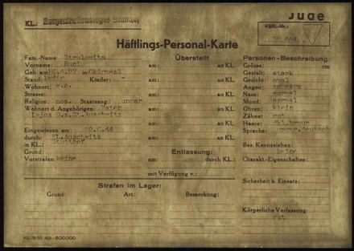
כרטיס האסירה של רחל, שטוטהוף (38444)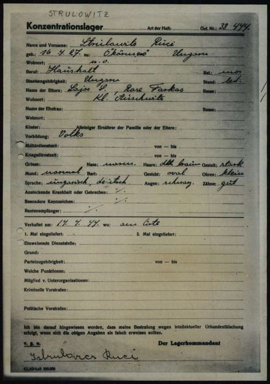
שאלון הקליטה של רחל, עם חתימתה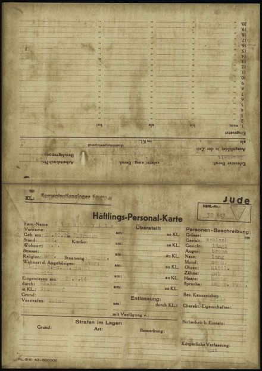
כרטיס האסירה של סימה (38443)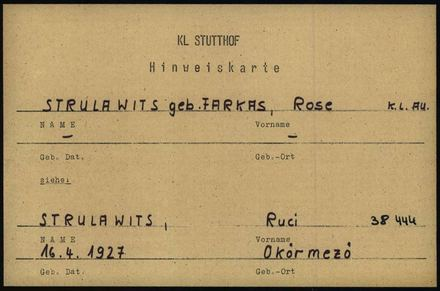
כרטיס הפניה — האם רוזה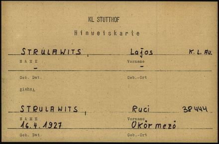
כרטיס הפניה — האב לאיוש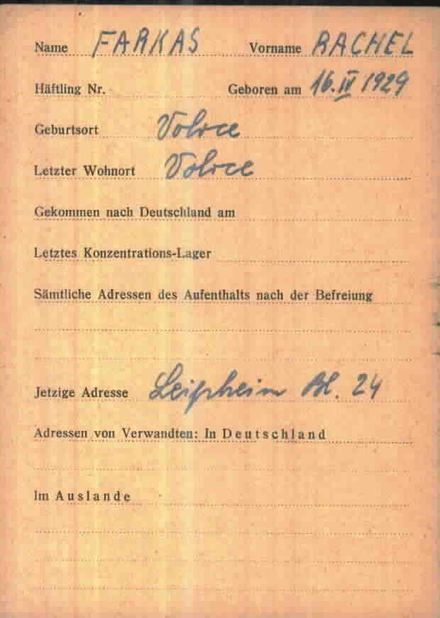
כרטיס העקורים — ליפהיים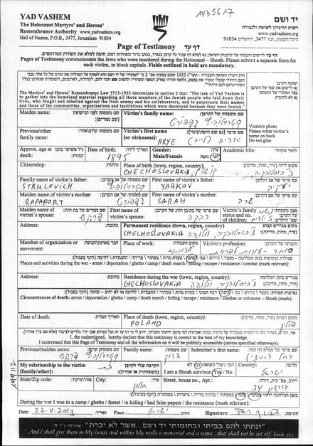
דף עד על האב, בכתב ידה (2013){kind=link}
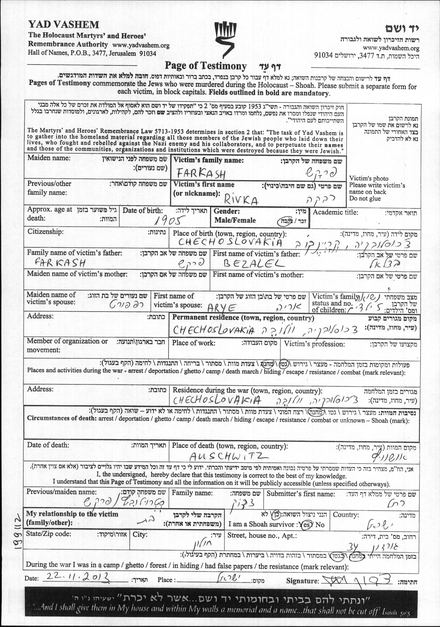
דף עד על האם, בכתב ידה{kind=link}
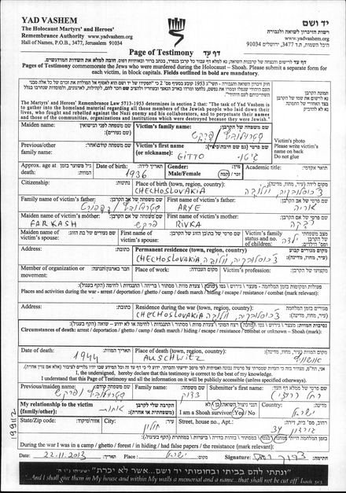
דף עד על גיטה, בכתב ידה{kind=link}
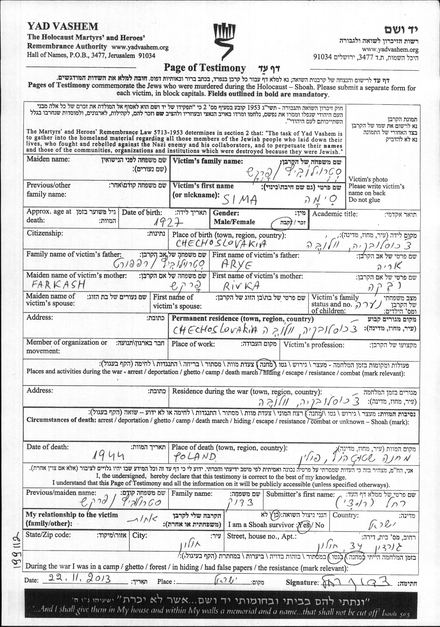
דף עד על סימה, בכתב ידהרשימת הטרנספורט 29.06.1944 — האחיות בשורות 802–803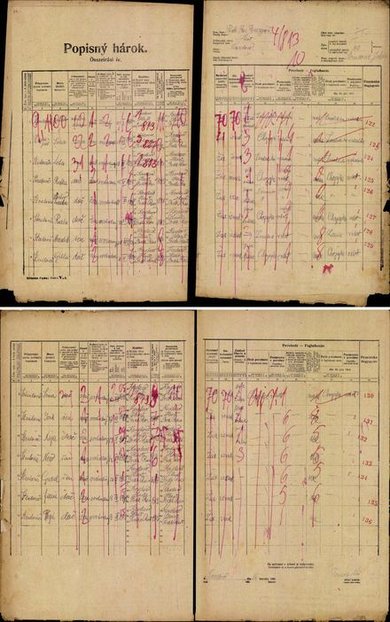
מפקד 1921 — גיליון בית 30 בקושלובו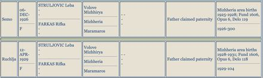
רשומות הלידה של רחל וסימה (JewishGen){kind=link}
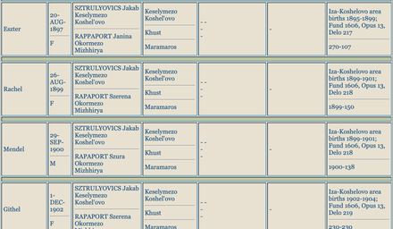
רשומות הלידה של דודי רחל (1897–1902){kind=link}
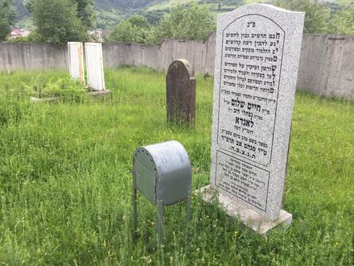
מצבת הדיין לאנדא, אוקרמזו (1924){kind=link}
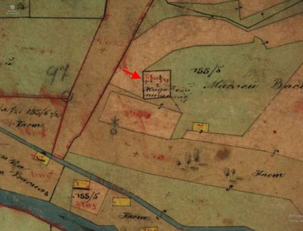
מפת הקדסטר 1864 — בית הקברות היהודיאינדקס האנשים
כל אדם שהדוח מתעד, עם קישור אל הפרק שבו הוא נדון. שדה החיפוש שבראש העמוד מחפש גם בכתיבים החלופיים של השמות.
אינדקס המקורות
אינדקס מסמכים — מחקר רחל צדוק (לבית סטרולוביץ-רפפורט)
עודכן: 27.08.2026. הדוח והמסמכים מתפרסמים כאתר סטטי; כל הקישורים הפנימיים שלהלן יחסיים לתיקייה זו.
קבצים בתיקייה הראשית
| קובץ | מה זה | מה יצא ממנו |
|---|---|---|
| רחל_צדוק_המחקר_המלא.html | המסמך המאוחד — הדוח, תצלומי הראיות (בהפניה לקובצי המקור), עץ המשפחה והאינדקס — יש לפתוח מתוך התיקייה | — |
| index.html | שלד הפניה — דף הכניסה לאתר, מפנה אוטומטית למסמך המאוחד | — |
| רחל_צדוק_מחקר_מקיף.md | דוח המחקר המרכזי (טקסט) | סיכום כל הממצאים |
| אינדקס_מקורות.md | הקובץ הזה | — |
| testimony.mp3 | הקלטת עדות הווידאו המלאה של רחל צדוק (2:41 שעות), הורדה מיוטיוב; אינה כלולה בריפו המפורסם (מגבלת 100MB) | המקור לתמלול |
| תמליל_העדות_המלא.txt | תמלול מלא של העדות (2,154 שורות, חותמות זמן) — הופק 17.08.2026 | כל הממצאים בקובץ ניתוח_העדות.md ובפרק ו'1 בדוח |
| ניתוח_העדות.md | ניתוח מובנה של התמליל: עובדות חדשות, אישושים/סתירות, ציטוטים, שמות לבדיקה | גורל האב (מת מרעב, עדות ראייה); הקאפו שהצילה בסלקציה; מסלול העלייה בסרטיפיקט למקווה ישראל; ההיכרות עם אברהם צדוק; 13 אחי האב; ועוד |
| עץ_משפחה_גרפי.html | עץ המשפחה — תרשים גנאלוגי, שבעה דורות, עם תאריכי לידה/פטירה/נישואין | — |
| עץ_משפחה_מורחב.html | העץ המלא — כל בני המשפחה המתועדים: ילדי גדליה רפפורט מכל נשותיו, כל 14 האחים וילדיהם, צד פרקש, והדורות שאחרי | — |
| build_unified.py · build_tree.py · build_tree_full.py | סקריפטי הבנייה — בונים מקובצי המקור את המסמך המאוחד (כולל site/) ואת שני העצים | רחל_צדוק_המחקר_המלא.html, index.html, site/, עץ_משפחה_גרפי.html, עץ_משפחה_מורחב.html |
| site/ | עותק האתר הסטטי — מסלול חלופי (S3); הפרסום בפועל נעשה ב-GitHub Pages מהשורש, ולכן site/ אינו בריפו | — |
| העלאה_לאתר_S3.md | הוראות העלאת האתר לאחסון סטטי (מסלול חלופי) | — |
| README.md · publish_to_github.sh · .nojekyll | קובצי הפרסום: עמוד הבית של הריפו, סקריפט הפרסום/עדכון, וקובץ שמונע סינון קבצים בשירות האתר | פרסום התיק כאתר סטטי |
| דוח_ביקורת_פערים.md · דוח_ביקורת_סבב2.md–סבב6.md | דוחות סבבי הביקורת החיצונית (פירוט התיקונים — יומן השינויים, נספח ד' בדוח) | תיקוני המהדורות 5–7, 16, 26 |
| ארכיון_עבודה/ + קובצי עיבוד (transcribe*.py, run_all_chunks.sh, chunks/, testimony_16k.wav, transcript_raw.txt) | קובצי עבודה וגרסאות ישנות — אינם חלק מהתוצרים | — |
תיקיית docs — מסמכים היסטוריים שהורדו
עלון יוצאי קרפטורוס 137 (עברית ואנגלית)
עלון ארגון יוצאי קרפטורוס מס' 137, אוגוסט 2025 (עברית + אנגלית), מאת רותי פיקסלר. מקור: carpati.org.il. מה יצא: המקור המשפחתי המרכזי (עמ' 11–12) — עץ המשפחה הגרעיני; סיפור ההצלה של גדליה אצל משפחת קרשק; גורל כל אחד מחמשת האחים; צילום המשפחה מ-1944 וסיפור החייל שהחזיר אותו לרחל ברכבת; תמונת רחל; פרטי חייה (חולון, עדו וזיו, נפטרה 01/2021); ההערה ששם "סטרולוביץ" בא מהסבתא (שתוקנה בהמשך המחקר — ההפך הוא הנכון); בני גדליהו — אריה וזאב.
רשימת חסידי אומות העולם מצ'כיה
רשימת חסידי אומות העולם מצ'כיה (יד ושם, PDF רשמי). מה יצא: "Karasek, Jozef & Anna | 10412 | 2004" — מספר התיק ושנת ההכרה של מצילי גדליה.
מאמר קובלסה על האחוזות הגדולות ברוס הקרפטית (1928)
מאמרו של Pavel Koblasa על האחוזות הגדולות ברוס הקרפטית, Paginae Historiae 23/2 (2015), הארכיון הלאומי הצ'כי. מה יצא: טבלת 1928 — האחוזה באוקרמזו (וולובה): 4,515 הקטר (2,573 יער) בבעלות Krausz, Farkas, Rappaport — "Rappaport" הוא ככל הנראה משפחת סבתהּ של רחל; הקשר בין ה-"Farkas" שבטבלה למשפחת אמה (שישבה בדנילובו/קרייניקובו) לא נבדק ואינו מבוסס — Farkas הוא שם נפוץ. גם: אחוזת מיידנקה השכנה ("חברת עצים, Krausz, Pickel").
מדריכי העסקים של וולובה, 1925–1938 (שישה קבצים)
דפי Volové (אוקרמזו) ממדריכי העסקים הצ'כוסלובקיים, 1925–1938. מקור: KehilaLinks מיז'יריה / Genealogy Indexer. מה יצא: מפת העסקים היהודיים בעיירה (נוימן, ציכרמן, שטיינברג, זולדן, כץ ועוד; "אגודת אשראי יהודית"); אוכלוסיית העיירה (3,649 ב-1925; 3,740 ב-1937). הערה: אזכורי "Strulovič, Leba" (1937) ו-"Strůlovič, Lax" (1935/1938) שעלו בחיפוש הטקסט בקטלוג הצ'כי (Kramerius) אינם נראים בסריקות שבידינו ולכן אינם נמנים עם הראיות בדוח — נדרש עיון בעמודים המלאים בספרייה הצ'כית.
רשומות יד ושם (JSON מה-API הרשמי)
צפייה בדפדפן: https://collections.yadvashem.org/en/names/<המספר>. כל הקבצים בתיקייה נושאים שם אחיד name_<מספר>.json (המספר = מזהה הרשומה ביד ושם); התיאור בטבלאות שלהלן הוא הדרך לדעת מה בכל קובץ.
העדות של רחל
| קובץ | מה זה | מה יצא ממנו |
|---|---|---|
| testimony_8424116_he/en.json | הרשומה הקטלוגית של עדות הווידאו (חטיבה O.3) | תאריך הלידה 16.04.1929; מקום Volove; שם נעורים פרקש; הוקלטה 23.12.2009; קישור היוטיוב; תקציר המסלול המלא כולל טורן, הניתוק מסימה החולה, צעדת המוות, פראוסט, השחרור 02/1945 והעלייה 05/1946; החרמת עסק האב ואיסור השחיטה |
המשפחה הגרעינית
| קובץ | מה זה | מה יצא ממנו |
|---|---|---|
| name_15952725.json | רשומת רחל במאגר השמות | "Rakhel Rotzi Strulovitz Farkash Tzadok Rapaport" — שרדה; צירוף כל שמותיה |
| name_5310417.json | רשומת רחל ברשימת שטוטהוף (קלרספלד/Nevek 1995) | "Ruhel Strulovics" נ' 16.04.1927 אוקרמזו, אב Lajos, אם Roza Farkas — רישום המחנה שלה (ההצלבה ל-USHMM נתנה את מספר האסירה 38444) |
| name_10846653.json / name_15741850.json ↗ | דפי עד על האב | אריה-לייב סטרולוביץ-רפפורט, נ' 1894/95 קושלובו, בן יעקב ושרה לבית רפפורט, סוחר עורות; הוגש בידי רחל עצמה ("בתו") |
| name_1703452.json | דף עד נוסף על האב (לילי שפרינגר, 1999) | נ' 1894 קושלובו, "מנהל", נרצח באושוויץ; אימות הורים: יעקב ושרה |
| name_3611959.json | דף עד שלישי על האב | הוגש בידי זאב רף, נכד (בן גדליהו) — אימות צולב מהענף של גדליהו |
| name_1435517.json | דף עד רביעי על האב (חיה בק) | וריאציה: נ' 1898, אשתו "פורקוש" |
| name_10846654.json | דף עד על האם שהגישה רחל | רבקה פרקש, נ' 1905 קרייניקובו, בת בצלאל, אשת אריה |
| name_1959026.json | דף עד על האם (לילי) | נ' 1906, בת בצלאל ואסתר, נרצחה באושוויץ 05/1944 |
| name_1640291.json | דף עד על האם (חיה בק) | וריאציה: נ' 1908 |
| name_13750274.json + name_8648843.json ↗ | דפי עד על סימה | וולובה, נספתה 1944 (ברשומה הקטלוגית: נ' 1926; בסריקת דף העד בכתב ידה של רחל: 1927) |
| name_5310416.json | רשומת סימה ברשימת שטוטהוף | "Sari Strulovics" נ' 26.12.1926 אוקרמזו — תאריך לידתה המלא; מספר אסירה 38443 (מהצלבת USHMM) |
| name_10846655.json | דף עד על גיטה שהגישה רחל ("אחות") | גיטה נ' 1936, נרצחה באושוויץ 1944 — בת כשמונה |
| name_1939639.json + name_8648842.json ↗ | דפי עד נוספים על גיטה | וריאציות: נ' 1937 / "בת 7" |
| name_7710884.json | כרטסת דגו"ב (DEGOB) של החוזרים 1945–46 | נער סטרולוביץ' נ' 1931 אוקרמזו שרד את בוכנוולד — רישום החזרה של גדליה |
| name_6396313.json | רשימת הוועדה הסובייטית 29.03.1946 | "לייבה סטרולוביץ', וולובה, רחוב שבצ'נקו 43, משפחה בת 6 נפשות גורשה" — ייתכן שזו כתובת בית המשפחה |
הסבים ודורות קודמים
| קובץ | מה זה | מה יצא ממנו |
|---|---|---|
| name_798131.json + name_3946358.json ↗ | דפי עד על יעקב, סבה של רחל | (ישראל) יעקב סטרולוביץ מקושלובו, בן ~80 — מת בחוסט 1945 לאחר שהסתתר; הוגש בידי נכדתו אסתר גוטמן-רפפורט |
| name_1994578.json + name_14894462.json ↗ | דפי עד על שרה, סבתה של רחל | שרה סטרולוביץ לבית רפפורט, נ' ~1880 בוולובה בדפי העד; הרשומה האזרחית: ינואר 1876 — המפתח לחידת השמות; גורשה מקושלובו ונרצחה |
| name_1749463.json | דף עד על סב-האם | בצלאל פרקש, נ' 1873/74 בדנילובו, בעל קרקע וסוחר בקרייניקובו, נרצח באושוויץ; בן ברל (דב) וגיטל — עוד דור אחורה |
| name_13534737.json | דף עד על סבת-האם | אסתר פרקש לבית שטיינר, נ' 1879 בקירלהאזה (קורולבו), נרצחה באושוויץ |
| name_414159.json + name_412320.json ↗ | דפי עד על משה סטרולוביץ ואשתו | אחיו של הסב יעקב: משה נ' 1861, בן לייב וריבקה — מקור שמות הוריו של יעקב, סב-רבה של רחל (עוד דור!) |
דודים ודודות (אחי אריה — קושלובו)
| קובץ | מה יצא ממנו |
|---|---|
| name_731464.json | דף עד על הדודה ריבקה מאת בת-דודה (אסתר רוזנברג): "Rifka Strulowicz", נ' 1898 קושלובו, בת יעקב ושרה; התגוררה באזור רחוב (Rachov); נספתה באושוויץ (1942 לפי המגישה). פרטיו סוטים מהרשומות האזרחיות (נ' 24.05.1896; ⚭ יצחק גדלוביץ', אפשה; 1944) |
| name_1333709.json | הדודה אסתר (נ' 1900 בדף העד; הרשומה האזרחית: 20.08.1897), נרצחה 1942 |
| name_13504061.json | הדודה רחל קליין (נ' 1901/04 בדפי העד; הרשומה האזרחית: 26.08.1899), מונקץ' |
| name_1179660.json | הדוד מנדל (נ' 1903 בדף העד; הרשומה האזרחית: 29.09.1900), מכולת בקושלובו; ילדיו גדליה/משה/רבקה/מרטון נרצחו |
| name_3567919.json | הדודה גיטל וולף (נ' 1905 בדף העד; הרשומה האזרחית: 01.12.1902), טקהאזה |
| name_1801486.json | הדוד יצחק (נ' 1907 בדף העד; הרשומה האזרחית: 19.12.1905) — נספה במאוטהאוזן 1944 |
| name_6438050.json | הדוד נתן (נ' 1908) — שרד, רשום בקושלובו אחרי המלחמה |
| name_1765196.json | הדוד גדליה (נ' 1911/13 בדפי העד; הרשומה האזרחית: 02.02.1911), יערן, נרצח |
| name_16262138.json | הדודה פאני לבוביץ — שרדה והגישה דפי עד על אחיה |
דודים ודודות (אחי רבקה — קרייניקובו/דנילובו)
| קובץ | מה יצא ממנו |
|---|---|
| name_695355.json | הדודה גולדה-ארנקה פוקס (נ' 15.01.1899; הרשומה האזרחית: 02.01.1899), וישק — אמן של לילי שפרינגר ושרה וולף ששרדו |
| name_1718133.json | הדוד אליהו (נ' ~1904, דנילובו; הרשומה האזרחית: 30.05.1901), מכולת; נרצח עם 4 ילדים |
| name_1739424.json | הדוד זיסל-לייב (נ' 1909; הרשומה האזרחית: 07.10.1906), ירקן; נרצח עם משפחתו |
| name_1749479.json | הדודה חנה (נ' 1911; הרשומה האזרחית: 09.02.1909), חוסט |
| name_1739444.json | הדודה רחל (נ' 1914; הרשומה האזרחית: 22.11.1913), אורמזובה |
| name_1879248.json | מלכה אדלר לבית פרקש (נ' 1876, דנילובו) — אחות סב-האם בצלאל |
| name_1964241.json | שמואל פרקש (חוסט) — אח נוסף של בצלאל |
קרובים אפשריים
| קובץ | מה יצא ממנו |
|---|---|
| name_5380436.json | יוסף-דוד רפפורט, נ' 16.10.1891 וולובה — אביו: "גדלי", אמו: "מינדה לבית ברקוביץ" — גורש מסלובקיה 04/1942, אסיר אושוויץ 33088, נספה 26.05.1942. שני ההורים תואמים את גדליה ומינדל ברקוביץ — בן נוסף שלהם, כמעט ודאי |
| name_9444206.json | סול רפפורט נ' 1928 אוקרמזו — שרד (סקלנצה→אושוויץ→גלייביץ→בוכנוולד) |
| name_9397313.json | הרמן סטרולוביץ נ' 1924 קושלובו — שרד (איזה→אושוויץ→מונוביץ→דורה→ברגן-בלזן) |
| name_5310964.json | לנקה נוימן לבית סטרולוביץ' בשטוטהוף — התבררה כנראה כלא-קרובה (נולדה בטרנסילבניה) |
תיקי שטוטהוף המקוריים (סריקות מארכיון Arolsen, הורדו 17.08.2026)
ארבע-עשרה הסריקות מתחלקות לארבע יחידות ארכיון נפרדות, כולן בתיבה אחת של מרשם שטוטהוף (אוסף 1.1.41.2, "Files with names from STRAUS"): תיקה של רחל — "Personal file of STRULOWITS, RUCI, born on 16-Apr-1927", סימוכין 01014102 129.172, אסירה 38444; תיקה של סימה — "Personal file of STRULOVITS, SARY, born on 26-Dec-1926", סימוכין 01014102 129.171, אסירה 38443; ו"תיקים" על שם האם (129.168) ועל שם האב (129.167), שכל אחד מהם מכיל כרטיס הפניה יחיד. שמות שני התיקים הראשונים משמרים את השמות ההונגריים "רוצי" ו"שרי" ואת שנת הלידה המנופחת 1927. כל מסמך = שני קבצים (_001 חזית, _002 גב).
| קבצים | מה זה | מה יצא מהם |
|---|---|---|
| 105591042 🗎 | מעטפת התיק של רחל ("STRULOWITS Ruci, 16.4.1927, Ökörmezö, 38444") | תכולת התיק: כרטיס אסירה + שאלון ("1+1"); מעטפה 40754; אין הודעת פטירה (שרדה) |
| 105591047 🗎 | כרטיס האסירה של רחל (Häftlings-Personal-Karte), חותמת "Jude" | הגעה 29.06.1944 מ-KL Auschwitz; "Wohnort d. Angehörigen: Vater Lajos S. z.Zt. Auschwitz"; תיאור אישי: חסונה, פנים סגלגלות, עיניים שחורות, שיער חום כהה, דוברת הונגרית וגרמנית |
| 105591037 🗎 | שאלון הקליטה של רחל (Häftlings-Personal-Bogen) | "Verhaftet am 14.4.44 am Orte" — תאריך המעצר; "Name der Eltern: Lajos S., Rose Farkas — Wohnort: KL. Auschwitz"; השכלה: בי"ס עממי; חתימת ידה: "Sztrulovics Ruci" |
| 105591025 🗎 | מעטפת התיק של סימה ("STRULOVITS Sary, 26.12.1926, Ökörmezo, 38443") | מעטפה 40753; אין הודעת פטירה בתיק — מותה לא תועד בתיק האישי |
| 105591030 🗎 | כרטיס האסירה של סימה | הגעה 29.06.1944 מאושוויץ; "Vater: Lajos S. z.Zt. in KL Au"; תיאור: צנומה, עיניים חומות, דוברת הונגרית ורוסית; "מצב גופני: טוב" ביום הקליטה |
| 105590980 🗎 | כרטיס הפניה (Hinweiskarte) ע"ש האם: "STRULAWITS geb. FARKAS, Rose — K.L. Au." | פותר את "חידת Rose": האם לא הייתה רשומה בשטוטהוף; הכרטיס מתעד שמקומה צוין "מחנה אושוויץ" ומפנה לתיק של רחל (38444) |
| 105590973 🗎 | כרטיס הפניה ע"ש האב: "STRULAWITS, Lajos — K.L. Au." | תיעוד מקביל לאב; מפנה לתיק של רחל. (מתקן את רשומת האינדקס של USHMM שיוחסה בטעות לאסיר "נ' 1923, מס' 13708") |
תקופת העקורים (Arolsen, הורד 17.08.2026)
| קבצים | מה זה | מה יצא מהם |
|---|---|---|
| cni_farkas_rachel_001/002.jpg | כרטיס מרשם השמות המרכזי (CNI, אוסף 3.1.1.1) על שם FARKAS Rachel | נולדה 16.IV.1929 ב-Volove; מגורים אחרונים Volove; כתובת נוכחית: מחנה העקורים Leipheim, בלוק 24 (בוואריה) — פרק לא-מוכר בסיפור; בגב: "SENT TO FILE No. T/394234" (07.01.1955) — התיק הוזמן מארולסן ב-18.08.2026 וממתין למענה. צפייה: collections.arolsen-archives.org/en/document/67014250 |
התיק האישי של גדליה בבוכנוולד (Arolsen, הורד 25.08.2026)
תיק אישי מלא: Personal file of STRULOVICS, GYULA, born on 3-Mar-1931 — אוסף 1.1.5.3, סימוכין 01010503 001.495.346, תשעה מסמכים בשמונה־עשרה סריקות בארכיון; ארבע סריקות חזית הורדו לתיקייה (_01_front) — ארבעת המסמכים שמצוטטים בדוח — וחמישה מסמכים נוספים טרם הורדו (פרק ט', פעולה 6). לצד הסריקות שמור קובץ הציטוט.
| קבצים | מה זה | מה יצא מהם |
|---|---|---|
| arolsen_7209824_01_front.jpg | מעטפת התיק, KL Buchenwald (Männer) | T/D Nr. 278718; שם, 3.3.1931, Ökörmezö, אסיר 54982; מניין תוכן התיק (שני כרטיסי אסיר, כרטיס חפצים, כרטיס עבודה, כרטיס מרפאה ועוד) |
| arolsen_7209825_01_front.jpg | כרטיס אסיר (Häftlings-Personal-Karte), מודפס | תצלומו בן ה-13 (לוחית U 24 5 44 245); "Staatsang.: Ungarn"; "Strasse: Horthygasse 43"; "Eingewiesen am: 19.5.1944 … in KL.: Auschwitz"; "Überstellt am 24.5.1944 an KL. Buchenwald"; "Grund: Polit. Ungar-Jude"; 160 ס״מ; שפות: הונגרית, רוסית, צ׳כית, גרמנית; ידיד: Elek Schubert, Horthygasse 40 |
| arolsen_7209826_01_front.jpg | כרטיס אסיר שני, בכתב יד, באיות "Sztrulovics" | "durch: RSHA"; "Wohnort d. Angehörigen: Vater: Leib Szt., Ökermözo" — האב כקרוב |
| arolsen_7209827_01_front.jpg | כרטיס חפצים (Effektenkarte), אדום | חתימת ידו "Sztrulovics Gyula"; "Beruf: Schüler"; "Eingel. am 24.5.44 von KL Auschwitz"; חותמת "keine Effekten" — הגיע בלי דבר |
{kind=link}
התיעוד הישראלי (IGRA / ארכיון המדינה, הורד 26.08.2026)
מאגר IGRA — האגודה הישראלית לשורשים מאנדקס פנקסי בוחרים, רשימות עולים ורשימות מועמדים מארכיון המדינה, ממכון לבון ומארכיון מחנה המעפילים בעתלית. שש הרשומות שלהלן הן המסמכים הישראליים הראשונים שאותרו על בני המשפחה.
| קובץ / רשומה | מה זה | מה יצא ממנו |
|---|---|---|
| igra_1949_voters_mikve_israel_p334.jpg · הרשומה | פנקס בעלי זכות הבחירה תש"ט, אזור הקלפי מקווה ישראל, דף 6 (תיק ארכיון המדינה גל-45494/6, מסמך 122; IGRA 85723) | שורה 122: "פורקוש (רפופורט) — רחל — בת אריה — 1929 — מקוה ישראל" — התיעוד הישראלי המוקדם ביותר שאותר על שמה |
| igra_1949_voters_mikve_israel_p336.jpg · שושנה · אהרן | אותו פנקס, דף 8 | שושנה צדוק (נ' 1903) ואהרן צדוק (נ' 1898) — היחידים בשם צדוק במקווה ישראל; מועמדים לזיהוי הורי אברהם צדוק (טעון אימות) |
| הרשומה (אין סריקה מקוונת) | מסד הנתונים של מחנה המעפילים עתלית, מסמך 28052 (IGRA 14599) | "גדליהו רף (פרקש)", ושם משפחה נוסף "רפפורט" — גדליהו הגיע בהעפלה ועבר במחנה המעצר, בשונה מאחותו שעלתה בסרטיפיקט |
| igra_1955_histadrut_candidates_ilaniya.jpg · הרשומה | רשימות ארציות של מועמדים לוועידה השמינית של ההסתדרות הכללית, 1955 (מכון לבון) | גדליהו רף, אילניה — "העובד הציוני — הרשימה הפרוגרסיבית", מקום 212 ברשימה; בן 24 |
| הרשומה (אין סריקה מקוונת) | רשימת המועמדים לבחירות למועצות אזוריות, 04.12.2012 (IGRA 2936) | אריה רף, אילניה — מועמד למועצה האזורית הגליל התחתון; בנו של גדליהו, יליד 1955 |
| igra_1992_voters_ilaniya_raf.jpg · הרשומה | פנקס הבוחרים לכנסת תשנ"א–תשנ"ב, אילניה (סמל יישוב 0049) | שורות 192–196: אריה (1955) בן גדליהו — באינדקס IGRA שוכתב "אריה רך"; גדליהו (1932) בן אריה — אימות ישראלי לשם האב; זאב (1964) בן גדליהו; יוכבד (1936) בת ישראל — רעייתו; מירב (1967) בת אליהו — ענף רף אחר במושב |
{kind=link}
תצלומי בתי העלמין (סקר ESJF 2019; נקראו 27.08.2026)
שלושת בתי העלמין של כפרי המשפחה תועדו בשנת 2019 בסקר ESJF — European Jewish Cemeteries Initiative, ותצלומיו מתפרסמים באינדקס בצלאל נרקיס לאמנות יהודית שבמרכז לאמנות יהודית, האוניברסיטה העברית. כל 95 התצלומים נקראו לעומק (פרק ג'1): כל כתובת קריאה תועתקה שורה-שורה, וכל שנת חרוט שנקראה הומרה לגרגוריאני. במצבה אחת בלבד (לאנדא, 484104) חקוק גם היום בשבוע, והוא שימש לאימות ההמרה. זכויות התצלומים: © ESJF European Jewish Cemeteries Initiative. הערה: מניין המצבות ותאריכי המצבה העתיקה והמאוחרת שבטבלת פרק ג'1 הם קביעות של קטלוג ESJF ולא של קריאת התצלומים — 95 התצלומים אינם מכסים את כל המצבות שהקטלוג מונה.
| בית העלמין | האוסף המקוון | תצלומים | נקודת ציון |
|---|---|---|---|
| מיז'יריה (אוקרמזו/וולובה) | אובייקט 48428 | 54 | 48.531479, 23.501989 — הצטלבות סובורובה/לאונובה |
| קושלובו (קשלמזו) | אובייקט 48492 | 25 | 48.233601, 23.339560 — מאחורי לסיה אוקראינקה 65 |
| דנילובו (הוסטסופלווה) | אובייקט 48503 | 16 | 48.141430, 23.466360 |
שבעה תצלומים נשמרו בתיקייה בגודל מלא — חמישה מהם משמשים איור בדוח, ושניים (484551 ו-484677) נשמרו כתיעוד בלבד:
| קובץ | מה רואים |
|---|---|
| cja_esjf_mizhhiria_484104_landa_dayan_1924_full.jpg | מצבת הרב חיים שלום לאנדא, דומ"ץ אוקרמזו — ט"ו במנחם-אב תרפ"ד = 15.08.1924 |
| cja_esjf_mizhhiria_484119_binyamin_zeev_halevi_1887_full.jpg | בנימין זאב בן שמואל הלוי — כ"ה באייר תרמ"ז = 19.05.1887; זאב חקוק בטימפנון |
| cja_esjf_mizhhiria_484127_hagvir_hamefursam_full.jpg | "המפורס[ם] הגביר … ירא ד' נודע בשערים" — שורות השם והשנה קבורות בשרכים |
| cja_esjf_mizhhiria_484143_cadastral_1864_full.jpg | גיליון מפת הקדסטר של אוקרמזו ובו חלקת "Жидовскій цвинтарь" |
| cja_esjf_koshelovo_484557_yaakov_yosef_halevi_1891_full.jpg | ר' יעקב יוסף בן צבי הלוי — ליל יום כיפור; השנה ככל הנראה תרנ"ב = 11.10.1891, ובקריאה חלופית תרל"ב = 24.09.1871 |
| cja_esjf_koshelovo_484551_kohen_elimelech_full.jpg | מצבת כהן בקושלובו — כפיים חקוקות והמילה "כהן" בכתובת |
| cja_esjf_danylovo_484677_archaic_stele_full.jpg | סטלה בתבליט עמוק בדנילובו — הכתובת בצל ואינה קריאה |
{kind=link}
{kind=link}
{kind=link}
{kind=link}
{kind=link}
הממצא השלילי, ששווה כאן יותר מכל ממצא חיובי: אין באף אחד משלושת בתי העלמין מצבה קריאה הנושאת את אחד משמות המשפחה של הדוח, ולמעשה כמעט אין בהם שם משפחה חקוק כלל — הנוהג המקומי הוא פטרונימי בלבד. פירוט מלא של הקריאה, מצבה-מצבה, בפרק ג'1.
סריקות דפי העד ומסמכי הניצולים (44 קבצים, הורדו 17.08.2026)
שמות הקבצים מספריים (מזהה הסריקה ביד ושם + תאריך ההגשה); מיפוי דפי העד שהגישה רחל: 10846653 = האב, 10846654 = האם, 10846655 = גיטה, 13750274 = סימה. הבולטים: ארבעה דפי עד בכתב ידה של רחל (22.11.2013) — על אביה (מקצועו: "סוחר עורות לפרוות"; כתובתה: גורדון 34 חולון; חתימתה), אמה, גיטה וסימה; דפי העד של פאני לבוביץ (1999, "אחות") על ארבעה אחים; דפי לילי שפרינגר (1999); דף העד על יעקב, סבה של רחל, מאת אסתר גוטמן-רפפורט; כרטיס דגו"ב של גדליה (1945); מסמכי הרישום של הניצולים סול רפפורט והרמן סטרולוביץ (1945).
קטעי ראיות מצולמים (נוצרו 17.08–27.08.2026)
איך נוצרו: כל קובץ כאן הוא חיתוך (crop) והגדלה שהופקו במסגרת המחקר מתוך סריקה מקורית שנמצאת בתיקייה — לצורך הצגה נוחה של השורה הרלוונטית בתוך הדוח. אלה אינם מסמכים עצמאיים: המסמך המחייב הוא תמיד קובץ המקור המלא, ששמו מצוין לצד כל קטע.
| קובץ | נחתך מתוך | מה רואים |
|---|---|---|
| cja_esjf_mizhhiria_landa_dayan_1924_zoom.jpg | התצלום המלא (ESJF 2019) | כתובת מצבת הדיין חיים שלום לאנדא במלואה, ובה האקרוסטיכון והתאריך |
| cja_esjf_mizhhiria_binyamin_zeev_halevi_1887_zoom.jpg | התצלום המלא (ESJF 2019) | הכתובת והזאב החקוק — המצבה המתוארכת הוודאית העתיקה ביותר שנקראה |
| cja_esjf_mizhhiria_hagvir_hamefursam_zoom.jpg | התצלום המלא (ESJF 2019) | "המפורס[ם] הגביר", טימפנון הגפן, והשורות הקבורות בשרכים |
| cja_esjf_koshelovo_yaakov_yosef_halevi_1891_zoom.jpg | התצלום המלא (ESJF 2019) | כתובת ר' יעקב יוסף בן צבי הלוי ולוחית השיפוץ שבתחתית; אות החרוט השלישית שחוקה למחצה (תרנ"ב / תרל"ב) |
| cja_esjf_mizhhiria_cadastral_1864_zoom.jpg | התצלום המלא (ESJF 2019) | החלקה המסומנת "בית הקברות היהודי" בקירילית, בין חלקות 155/5, 155/6½ ו-97 |
| koblasa_1928_row_zoom.png + koblasa_1928_table_context.png | docs/koblasa_1928_estates_podkarpatska_rus.pdf (עמ' 2 במאמר, טבלת 1928) — עומד בפני עצמו גם במקור המקוון של הארכיון הצ'כי | שורת "Mižhirja — Ökörmező (Volová) — 4,515 — 2,573 — Krausz, Farkas, Rappaport" |
| stutthof_vater_auschwitz_zoom.png | docs/arolsen_stutthof/105591047_001.jpg | "Wohnort d. Angehörigen: Vater Lajos S. z.Zt. Auschwitz" |
| stutthof_eingewiesen_zoom.png | אותו כרטיס | "Eingewiesen am 29.6.44, durch KL. Auschwitz, in KL. Stutthof" |
| bogen_signature_zoom.png | docs/arolsen_stutthof/105591037_001.jpg | חתימת ידה של רחל: "Sztrulovics Ruci" |
| rose_kl_au_zoom.png | docs/arolsen_stutthof/105590980_001.jpg | "STRULAWITS geb. FARKAS, Rose — K.L. Au." |
| cni_leipheim_zoom.png | docs/arolsen_dp/cni_farkas_rachel_001.jpg | "Jetzige Adresse: Leipheim Bl. 24" |
| arolsen_buchenwald_gyula_personalkarte_zoom.png | docs/arolsen_buchenwald/arolsen_7209825_01_front.jpg | כרטיס האסיר של גדליה: מס' 54982, "Staatsang.: Ungarn", "Eingewiesen am: 19.5.1944 … in KL.: Auschwitz", ותצלומו בן ה-13 |
| igra_1949_voters_mikve_israel_rachel_zoom.png (26.08.2026) | docs/igra/igra_1949_voters_mikve_israel_p334.jpg | כותרת הדף ושורת הכותרות, ומתחתיהן שורה 122: "פורקוש (רפופורט) — רחל — בת אריה — 1929 — מקוה ישראל" |
| igra_1992_voters_ilaniya_raf_household_zoom.png (26.08.2026) | docs/igra/igra_1992_voters_ilaniya_raf.jpg | שורות 192–196 בפנקס אילניה: אריה, גדליהו, זאב, יוכבד ומירב רף — עם עמודת "שם האב" |
| previews/mav1896_erdogazdasag_nagyag_passage.png (26.08.2026) | docs/arcanum_full/mav_aruforgalmi_1896_p13_erdogazdasag_rapaport.pdf | הפסקה על יערות עמק הנאג'-אג': 54,000 הולד, ובעלי הקרקע הפרטיים "Ágoston, Izsák, Rapaport és Krausz" |
{kind=link}
{kind=link}
{kind=link}
{kind=link}
{kind=link}
{kind=link}
{kind=link}
{kind=link}
{kind=link}
{kind=link}
{kind=link}
{kind=link}
{kind=link}
{kind=link}
{kind=link}
קטעי JewishGen (נוצרו 17–18.08.2026): הקבצים שלהלן הם צילומי-מסך ממוקדים (zoom) של שורות תוצאה במאגר ההונגרי של JewishGen, כפי שנראו בחיפוש בחשבון מנוי מחובר (חיפושים פונטיים "Strulovits", "Rappaport" — וב-18.08.2026 גם "Struljovic", "סל פונטי" נפרד שבו נמצאו רשומות הלידה של רחל וסימה). כל שורה משקפת רשומה אזרחית מקורית מפונד 1606 של ארכיון DAZO (מספרי הספר/עמוד/שורה מופיעים בתוך כל צילום), ולכן דרך האימות היא הזמנת הרשומה מ-DAZO או מ-JewishGen. שני קבצי hungaricana_1921 שבתיקיית docs/ הם צילומי גיליון המפקד המקורי עצמו.
| קובץ | מה רואים | משמעות |
|---|---|---|
| jewishgen_sura1876_leib1894_births_zoom.png | "Sura, ינואר 1876, בת Rapaport Gedajlo + Katz Ester, וולובה" + "Leib, מרס 1894, בן Rapaport Szura, אוקרמזו" | רשומות הלידה של שרה (סבתה של רחל) ושל האב אריה-לייב — ההוכחה ששרה היא בת גדליה |
| jewishgen_1921_census_household30_part1_zoom.png + part2 | בית מס' 30 קושלובו במפקד 1921: יעקב + שרה + 13 ילדים | בית משפחת סביה של רחל (שורות האינדקס; הגיליון המקורי) |
| jewishgen_births_strulyovics_rappaport_children_1897-1902_zoom.png + 1907-1914 | רשומות הלידה: אסתר 1897, רחל 1899, מנדל 1900, גיטל 1902, חיה 1907, גדליה 1911, התאומות פייגה ופפי 1914, נתן 1908 | רשומות הלידה של דודי רחל |
| jewishgen_regina_1896_bat_szura_rappaport_birth_zoom.png | "Regina, 24.05.1896, קושלובו (Keselymező) — האם: Rappaport Szura מאוקרמזו, בת 22" | רשומת הלידה של הדודה ריבקה/רגינה — רישום על שם האם בלבד |
| jewishgen_gedalya_mindje_marriage_1884_zoom.png + jewishgen_gedajlo_mindje_marriage_1903_zoom.png | נישואי גדליה רפפורט ומינדל ברקוביץ (06.08.1884 קרצ'ונפלבה; רישום אזרחי 04.03.1903 אוקרמזו, עם הוריו: Mozes + Spiegel Jenta) | תיעוד גדליה עצמו: תאריך לידתו 01.04.1846 והוריו |
| jewishgen_gedajlo_rapaport_okormezo_1904_zoom.png | פטירת הרמן בן 7 שבועות, אוקרמזו 31.10.1904 — האב: Rapaport Gedajlo, האם: Berkovics Mindja | גדליה כאב בוולובה ב-1904 |
| jewishgen_gedajlo_sons_nathan_aladar_marriages_zoom.png | נישואי נתן (1906) ואלדר (1909) בני גדליה — "בעל אחוזה, אוקרמזו" | שני בני גדליה; מקצוע האב: בעל אחוזה |
| jewishgen_gitel_wolf_1933_mendel_1938_marriages_zoom.png | נישואי גיטל ("Strulovic Githel" בת Jakub + Rapaport Serena) לאלכסנדר וולף, 1933; ונישואי מנדל ("Rapaport Mendel") לרוחל הרשקוביץ, 1938 | הדודה גיטל = "גיטל וולף"; הדוד מנדל ומשפחתו |
| jewishgen_regina_gedalovits_apsha_children_zoom.png | ילדי ריבקה/רגינה ואיציק גדלוביץ' באפשה (1933–1938) | משפחת הדודה ריבקה ("ריבקה מאפשה") |
| jewishgen_eszter_bat_leba_death_1939_zoom.png | פטירת אסתר בת לייב סטרולוביץ, בת 90, קושלובו 13.07.1939 | אחותו של יעקב, סב-רבה של רחל (בת לייב וריבקה) |
| jewishgen_mozes_helen_marriage_1942_zoom.png | נישואי משה סטרולוביץ (נ' 1861, בן Leb + Rifka) וחיה-הנדל הרשקוביץ — רישום אזרחי 1942 | דוד-רבא משה, בן לייב וריבקה |
| jewishgen_lajos1920_lazar1939_marriages_zoom.png | נישואי לאיוש בן משה (1920) ולזר בן לייב (1939) | ענפי קושלובו הנוספים |
| jewishgen_hani_jakubovics_1905_zoom.png | לידת לייבה בן הרמן יעקובוביץ וחנה סטרולוביץ (1905) | הדודה-רבתא חנה בת לייב |
| jewishgen_rapaport_chaja_okormezo_1904_zoom.png | פטירת חיה רפפורט, ילידת ~1836 אוקרמזו, בת מוסקו רפפורט ומלכה סטרולוביץ | קשרי רפפורט-סטרולוביץ בדור שלפני יעקב ושרה |
| jewishgen_rachel_sima_own_birth_records_zoom.png (18.08.2026, חיפוש "Struljovic") | "Semo, 06-DEC-1926" ו-"Ruchlja, 12-APR-1929", וולובה — האב Struljovic Leba, האם Farkas Rifka, "Father claimed paternity"; דלו 119 רשומה 300/1926, דלו 118 רשומה 104/1929 | רשומות הלידה האזרחיות של רחל ושל סימה עצמן — כולל פער התאריכים מול המסורת (16.04 / 26.12) |
| jewishgen_strulovits_volove_other_families_zoom.png (18.08.2026) | לידות בוולובה לאימהות לבית סטרולוביץ: פאני/פייגה (בעלה אלתר באומגרטן) ושרה/לנקה (בעלה פנחס נוימן), 1922–1930; דלו 84/110 | משפחות סטרולוביץ נוספות בוולובה — קרובות אפשריות של לייב, טרם זוהו |
| jewishgen_rapaport_soel_1873_sziget_zoom.png (18.08.2026) | לידת "Soel" רפפורט, 03.11.1873, מרמרוש-סיגט — בן יוסל (Joszel) ומרים (מאגר לידות מרמרוש) | מועמד לזיהוי "Rapaport Saul" מחברת הרפסודות — ככל הנראה ענף סיגט, לא בן גדליה |
| jewishgen_farkas_steiner_children_births_zoom.png (18.08.2026, חיפוש "Farkas") | רשומות הלידה של מנדל (26.04.1897) וארנקה (02.01.1899) — האב FARKAS Czallo/Czulo (סופאלווה/דנילובו), האם STEINER Eszter (קירלהאזה/קורולבו), מקום הלידה מיהלקה (קרייניקובו); דלו 207, שורות 354/589 | רשומות הלידה של אחי האם — עוגן התיעוד של משפחת בצלאל ואסתר; מנדל — אח שלא היה מוכר |
| jewishgen_farkas_siblings_marriages_zoom.png (18.08.2026, חיפוש "Farkas") | ארבע רשומות נישואים, כולן Husztsofalva (דנילובו), דלו 445: יוסף פרקש ⚭ הלנה (1928, "30-DEP" — שיבוש הקלדה); ליפוט ⚭ סרנה פוקס (09.02.1930); אליאס ⚭ רוז'נה זלמנוביץ (04.04.1932); הרש איצקוביץ ⚭ רחל (11.03.1935) — הורי הכלות/החתנים: "Calo STEINER Ester" | נישואי ארבעה מאחי האם — תאריכי לידה מדויקים, בני זוג והוריהם; רשומת רחל⚭איצקוביץ מרוסקה פולה מחזקת את זיהוי "רחל פרקש" מעדות טורן |
| jewishgen_gita_gizela_1936_birth_zoom.png (18.08.2026, חיפוש "Farkas") | "Gizela, 26-MAR-1936, F — האב STRULOVIC Leopold (קושלובו), האם FARKAS Roza (קרייניקובו), וולובה, Father claimed paternity"; פונד 1606, אופוס 6, דלו 258, שורה 1936-86 | רשומת הלידה של גיטה — נסגרה לקונה מרכזית; תעתיק שלישי "Strulovic" הסביר מדוע חמקה מהסריקות הקודמות |
| hungaricana_1921_census_volove_house127_rapoport_salamon_zoom.png (18.08.2026) | ראש גיליון "Popisný hárok" — וולובה, בית 127, "Meno majiteľa domu: Rapoport Salamon" + חמש שורות הבית: סלומון (1856), שורה (1866, נ' סינוויר; בבית מ-1890), רגינה (1904), חנה (1906), אברם (1908) — נחתך מה-PDF המקורי | משק בית רפפורט בוולובה במפקד 1921 — סלומון בן דורו של גדליה, אפשר שאחיו (טעון אימות) |
| hungaricana_1921_census_volove_house106a_rapoport_moises_zoom.png (18.08.2026) | ראש גיליון בית 106 (בעל הבית: ארדן) + שורות הבית, ובהן דיירי המשנה: רפופורט מוזס (1882), ברטה (1896, טיושקה), פאני (1918), יולי (1919) — נחתך מה-PDF המקורי | משק הבית השני של רפפורט בוולובה במפקד 1921 |
| kehilalinks_rita_schneider_pollack_testimony_zoom.png (18.08.2026) | עדות Rita (née SCHNEIDER) POLLACK בעמוד השואה של KehilaLinks מיז'יריה: איסוף 16.04.1944 בשבע בבוקר, שלושה ימים נעולים בבית הכנסת, גטו סקלנצה (30 בחדר, כשלושה שבועות), הצעדה לקרונות (80 בקרון), הגעה לאושוויץ 19.05 | ההפניה לעדות ריטה שניידר-פולק — שוחזרה (פעולה 6); באותו עמוד רשימת Nevek עם "STRULOVICS, RUHEL 1927" |
| bkl_1944_korozes_rapaport_majer_neulinger_roza_zoom.png (18.08.2026) | Bűnügyi Körözések Lapja 23.09.1944, עמ' 1188: הודעות 8678–8679 — "Rapaport Májer... zsarolás vétségével" (נ' אוקרמזו 28.01.1908, טכנאי שיניים, בן "néhai Rapaport Gedejlan" ו"néhai Berkovics Mengye") ואשתו "Rapaport Májerné szül. Neulinger Róza" (נ' חוסט 13.09.1912) — נחתך מהעמוד המקורי | הודעת ה"מבוקש" נגד מאיר בן גדליה — אותרה מחדש (פעולה 5); מינדל "המנוחה" → נפטרה לפני 08/1944 |
| auschwitz_victims_db_lejba_a8557_zoom.png (18.08.2026) | רשומה 222687 במאגר victims.auschwitz.org: "Strulovics Lejba Isr. — Fate: Prisoner Number A-8557" (ללא תאריך/מקום לידה) | הרשומה שעליה נשענת השערת האסיר A-8557 = האב; צולמה מהמאגר המקוון |
| degob_kassa_list_okormezo_row_zoom.png (18.08.2026) | רשימת תחנת קושיצה (degob.org/tables/kassa.html): "May 17. — Ökörmező — 3052" | תצלום מקור לרכבת הגירוש מאוקרמזו |
| zchor_glazer_okormezo_selection_row_zoom.png (18.08.2026) | טבלת גלזר (zchor.org/hungaria.htm): רכבת 10, Ökörmezö, יציאה 17.5, הגעה 19.5; 507 גברים נבחרו (הנתון היחיד שנרשם); 558 הנשים ו-1,987 הנרצחים — אומדן ושארית חשבונית | תצלום מקור לנתוני הסלקציה של רכבת המשפחה |
| stutthof_transport_list_rows802-803_zoom.png (18.08.2026) | חיתוך מרשימת הטרנספורט המקורית (docs/stutthof_museum_2026/POL-AMS-I-IIb-10-099.jpg): שורת הכותרת + שורות 801–805 | סימה (802) ורחל (803) ברצף ברשימת המקור של משלוח 29.06.1944 |
{kind=link}
{kind=link}
{kind=link}
{kind=link}
{kind=link}
{kind=link}
{kind=link}
{kind=link}
{kind=link}
{kind=link}
{kind=link}
{kind=link}
קטעי Arcanum (נוצרו 17.08.2026): צילומי-מסך של תוצאות חיפוש בארכיון העיתונות ההונגרי adt.arcanum.com — כרטיסי התוצאה עם קטע ה-OCR. עמודי המקור המלאים הורדו ב-18.08.2026 במנוי ושמורים ב-docs/arcanum_full/ (ראו בהמשך).
| קובץ | מקור מצוטט | מה מאמת |
|---|---|---|
| arcanum_gedajlo_death_1910_gorog_szemle_zoom.png | Görög katholikus szemle (אונגוואר), 25.12.1910 | "Rappaport Gedajló נפטר לא מכבר... 120 [חלקות] בספר האחוזה של אוקרמזו" |
| arcanum_aladar_takarekpenztar_1910_zoom.png | Központi Értesítő, 09.10.1910 | ייסוד Ökörmezői Takarékpénztár Rt. — Rapaport Aladár בחבר המנהלים |
| arcanum_aladar_compass_1911_1918_zoom.png | Mihók Compass 38/2 (1910/11) עמ' 1146; Pénzügyi Compass 1917–18 עמ' 678 | הבנק (אוקרמזו) נוסד 1910; אלדר מנכ"ל הבנק הנאג'סלשי ב-1915–18 (ראו העמודים המלאים) |
| arcanum_dezso_compass_1915_1918_zoom.png | Pénzügyi Compass 1915 עמ' 645; 1917–18 עמ' 678 | Rapaport Dezső (אוקרמזו) בוועדת הפיקוח (1915) ובדירקטוריון (1917–18) של הבנק הנאג'סלשי |
| arcanum_saul_compass_1916_1920_zoom.png | Nagy Magyar Compass 43/2 (1916) עמ' 430; 46-47/2 (1920) עמ' 581 | Rapaport Saul בדירקטוריון ובוועדת הפיקוח של חברת הרפסודות Tiszavidéki tutajtársulat (אתרים: אוקרמזו, מיידנקה) |
{kind=link}
{kind=link}
{kind=link}
{kind=link}
עמודי המקור המלאים מ-Arcanum (הורדו במנוי, 18.08.2026 ו-26.08.2026; 19 קבצים, ולצדם תיקיית חיתוכים המוצגים בדוח)
| קובץ | המקור | מה מתועד |
|---|---|---|
| gazdacimtar_1893_p408_gedajlo_okormezo.pdf · בצפיין | מרשם בעלי הקרקעות 1893, עמ' 408 (מחוז מרמרוש) | "Rapaport Gedajlo", אוקרמזו — 2,174 הולד (1,672 יער) |
| gazdacimtar_1897_okormezo_jaras_gedalya.pdf · בצפיין | Gazdacímtár 1897 (הסטטיסטיקה החקלאית), מחוז אוקרמזו | "Rappaport Gedálya", בעל קרקע (tulajdonos), אוקרמזו |
| foldbirtokosok_1899-1900_gedalya_3810hold.pdf · בצפיין | מרשם בעלי הקרקעות והחוכרים 1899–1900 | "Rappaport Gedálya", אוקרמזו — 3,810 הולד |
| gazdacimtar_1912_p444_gedajlo_orokosok_ozvegy.pdf · בצפיין | Gazdacímtár 1912, עמ' 444 | "יורשי רפפורט גדיילו" — 2,176 הולד; האלמנה — 435 הולד |
| budapesti_kozlony_1897-12-10_arveres_1370.pdf · בצפיין | Budapesti Közlöny 10.12.1897 (גיליון 283) | המכירה הפומבית — ספר האחוזה 1370, אוקרמזו |
| magyar_ujsag_1897-12-08_arveres.pdf · בצפיין | Magyar Ujság 08.12.1897 (גיליון 339) | הידיעה על המכירה הפומבית ("ingatlanai Ökörmező községházánál" — "נכסי המקרקעין שלו [יימכרו] בבית העירייה של אוקרמזו") |
| gorog_kath_szemle_1910-12-25_gedajlo_death_120plots.pdf · בצפיין | Görög katholikus szemle 25.12.1910 (גיליון 50) | "נפטר לא מכבר... 120 חלקות בספר האחוזה של אוקרמזו" |
| budapesti_hirlap_1910-12-23_verchovina_polemic.pdf · בצפיין | Budapesti Hírlap 23.12.1910 (גיליון 304), עמ' 2 | הכתבה הארצית על הוורחובינה: "Rappaport Gedájló és társai birtokszerzése" ("רכישת הקרקעות של רפפורט גדיילו ושותפיו") |
| kozponti_ertesito_1910-10-09_takarekpenztar_founding.pdf · בצפיין | Központi Értesítő 09.10.1910 (גיליון 81) | רישום ייסוד בנק החיסכון של אוקרמזו (15.09.1910) — אלדר בדירקטוריון |
| mihok_compass_1910-11_p1146_okormezo_takarekpenztar.pdf · בצפיין | Mihók Compass 38/2 (1910/11), עמ' 1146 | רישום הבנק בשנתון — אלדר בדירקטוריון |
| penzugyi_compass_1915_p645_nagyszollosi_bank.pdf · בצפיין | Pénzügyi Compass 1915, עמ' 645 | הבנק הנאג'סלשי: אלדר מנכ"ל; דז'ה בוועדת הפיקוח |
| penzugyi_compass_1917-18_p678_nagyszollosi_bank.pdf · בצפיין | Pénzügyi Compass 1917–18, עמ' 678 | הבנק הנאג'סלשי: אלדר מנכ"ל; דז'ה בדירקטוריון |
| penzugyi_compass_1917-18_p739_okormezoi_takarekpenztar.pdf · בצפיין | Pénzügyi Compass 1917–18, עמ' 739 | בנק החיסכון של אוקרמזו ב-1917: המנכ"ל קון אדולף; מאזנים 1913–1916 |
| nagy_magyar_compass_1916_p430_tutajtarsulat_saul.pdf · בצפיין | Nagy Magyar Compass 43/2 (1916), עמ' 430 | חברת הרפסודות (אוקרמזו-מיידנקה): שאול בדירקטוריון ובוועדת הפיקוח |
| nagy_magyar_compass_1920_p581_tutajtarsulat_saul.pdf · בצפיין | Nagy Magyar Compass 46-47/2 (1920), עמ' 581 | אותה חברה ב-1920 — שאול בשתי הפונקציות |
| bkl_1944-09-23_p1188_korozes_rapaport_majer.pdf | Bűnügyi Körözések Lapja, גיליון 39, 23.09.1944, עמ' 1188 | הודעות ה"מבוקש" 8678–8679 נגד מאיר רפפורט (בן גדליה) ואשתו רוזה נוילינגר — חשד לסחיטה; אמו מינדל "המנוחה" |
| egyenloseg_1911-05-07_p2_okormezo_120_families.pdf · בצפיין (26.08.2026) | Egyenlőség, 07.05.1911, עמ' 2 | "120 משפחות יהודיות באוקרמזו" ופירוט מלא של משלחי ידן (24 עגלונים, 18 פועלי יום, 18 חנוונים ועוד); ומתוך 958 משפחות יהודיות בכל אזור ההר — מאה היגרו לאמריקה |
| kozponti_ertesito_1942-11-26_zsido_hitelszovetkezet_okormezo.pdf · בצפיין (26.08.2026) | Központi Értesítő, 26.11.1942 | רישום "אגודת האשראי היהודית, אוקרמזו" — נוסדה 11.03.1923, נרשמה מחדש בבית המשפט בחוסט 19.11.1941; מטרתה "שיפור מצבם החומרי של חבריה, שכולם יהודים"; שמות עשרת חברי ההנהלה |
| mav_aruforgalmi_1896_p13_erdogazdasag_rapaport.pdf (26.08.2026) | Edvi Illés Sándor, A magyar királyi államvasutak … áruforgalmi viszonyai 2 (בודפשט 1896), עמ' 13, פרק "Erdőgazdaság" · בצפיין Arcanum | יערות עמק הנאג'-אג' (ובהם אוקרמזו) — 54,000 הולד; רפפורט בין ארבעת בעלי הקרקע הפרטיים הגדולים, לצד אוצר המלוכה ומשפחות רוזנים. חיתוך עם תרגום: previews/mav1896_erdogazdasag_nagyag_passage.png |
תשובת ארכיון מוזיאון שטוטהוף (18 קבצים)
מקור: נשלחו בדוא"ל ב-18.08.2026 על ידי ד"ר דנוטה דריווה (Danuta Drywa), ראשת ארכיון מוזיאון שטוטהוף בשטוטובו, בתשובה לפניית המשפחה מ-17.08.2026. דבריה במכתב: "Their documents indicate that their parents remained in Auschwitz, so they were likely murdered there" ("מסמכיהן מלמדים שהוריהן נותרו באושוויץ, ולכן ככל הנראה נרצחו שם"); "we do not have all the lists of female prisoners sent to the subcamps" ("אין בידינו את כל רשימות האסירות שנשלחו לתתי-המחנות").
| קובץ | מה זה | מה יצא ממנו |
|---|---|---|
| POL-AMS-I-IIb-10-099.jpg | רשימת הטרנספורט המקורית של משלוח 29.06.1944 מאושוויץ (עמ' 13 של הרשימה; עמ' ארכיון 99) | שורות 802–803: "Strulowits Sary 26.12.26 → 38 443" ו-"Strulowits Ruci 16.4.27 → 38 444", בסיווג Sch.H.pol., Ungarn, מ-KL. Auschwitz — האחיות ברצף במסמך המקור |
| I-III-24771.jpg / I-III-24772.jpg | כרטיסי האסירה (Häftlings-Personal-Karte) של סימה (38443) ורחל (38444) — עותקי הארכיון הפולני, בצבע | המקור הצבעוני של הכרטיסים שהתקבלו קודם מארולסן בגווני אפור (כולל חותמת "Jude" והמשולש) |
| I-III-15117.jpg | שאלון הקליטה (Personal-Bogen) של רחל, בצבע, עם חתימתה "Sztrulovics Ruci" | המקור הצבעוני של מסמך 105591037 🗎 מארולסן |
| dok_1.JPG–dok_14.JPG | עמ' 192–201 ו-232–235 מספרה (באנגלית) של ד"ר דריווה על השמדת היהודים בשטוטהוף: פרק Baukommando Weichsel (OT Thorn) ופרק פינוי האסירות | נתוני OT Thorn (הקמה 23–24.08.1944; שלושה טרנספורטים באוגוסט + תגבורים; תנאים ותמותה; "The sole aim was extermination") ופרטי הפינוי וצעדות המוות של ינואר 1945, כולל הלינה בפראוסט 27–28.01; תקציר עברי מלא: dok_pages_summary.md באותה תיקייה |
{kind=link}
{kind=link}
{kind=link}
{kind=link}
גיליון מפקד 1921 המקורי (5 קבצים)
איך נוצרו: צילומי מסך מצפיין Hungaricana (library.hungaricana.hu, כרך KANepszaml_006_Huszt_Keselyumezo, עמ' 299–300 (בצפיין: ?pg=298)), שנפתחו בדפדפן ב-17.08.2026. רואים את "Popisný hárok" (גיליון המפקד) בכתב יד, מולא בקושלובו ב-16.02.1921: בית מס' 30, "Meno majiteľa domu: Strulovic Jakab", ו-15 שורות בני הבית עם תאריכי לידה מדויקים (לייבה: 18.IV.1893; התאומות פייגה ופפי: 13.III.1915). הקבצים: ..._sheet_top.png (ראש הגיליון עם הכותרת ושורות 1–5), ..._rows1-8.png, ..._rows9-14.png, ..._rows11-15.png (כולל חתימת הפוקד), ו-..._full.png — קומפוזיציה של כל הצילומים לגיליון אחד מלא (שורות 1–15 + חתימה), שנבנתה ב-17.08.2026 והיא המשובצת בדוח המאוחד.
בנוסף, המקור באיכות מלאה — שני העמודים: ..._pages299-300_original.pdf — ה-PDF המקורי של עמ' 299–300 (הגיליון השלם: הכותרת ושורות 1–8; ההמשך שורות 9–15 וחתימת הפוקד מ-16.02.1921), הורד מ-Hungaricana ב-17.08.2026; ..._page299_hires.jpg ו-..._page300_hires.jpg — רינדורים ברזולוציה מלאה; ..._page299_original.pdf — הורדה קודמת של העמוד הראשון בלבד. קובץ ..._full.png נבנה מחדש מהרינדורים המקוריים והוא המשובץ בדוח המאוחד.
מקורות מקוונים מרכזיים (ללא קובץ — קישורים)
מסמכי מחנות וטרנספורטים
- מרשם הטרנספורטים של מוזיאון אושוויץ-בירקנאו — victims.auschwitz.org — טרנספורט 360, מזהה 10_Kőrösmező, 3,052 מגורשים, מעבר בקאשה 17.05.1944: זו רכבת אוקרמזו, הרשומה תחת שם עיירה שגוי (קרשמזו/יסינה). הזיהוי נשען על התאמה של ארבע מתוך ארבע הרכבות של אותו יום ועל זהות המספר הסידורי עם טבלת גלזר — פרק ד'. שאר רכבות ה-RSHA מהונגריה באותו יום: 8_Kassa (347, 3,352), 9_Užhorod (Ungvár) (442, 3,455), 11_Munkacs (380, 3,306). אין כאן אישוש עצמאי — המוזיאון מציין כמקורו את רשימת מיקולאש גשקו, היא רשימת תחנת קושיצה, ואף טבלת גלזר נגזרת ממנה; ההתאמה היא בדיקת העתקה בין שלוש מסירות של ספירה אחת. הרשומה כן מוסיפה מסה היסטורית עם מקורות ארכיוניים (זטקביץ', פיפר, צ'ך, אלבום אושוויץ), ובה הקביעה שלא נשתמרו רשימות טרנספורט שמיות לגירוש מהונגריה.
- דגו"ב (DEGOB) — פרוטוקול 73 — degob.hu/index.php?showjk=73 · התדפיס הסרוק — עדות 1945 של נער יליד אוקרמזו 1930, גטו סקלנצה → אושוויץ → ארלנבוש → האוסדורף → שוויניץ → ברסלאו → פלוסנבורג → וינה → המבורג → דרזדן → טרזיינשטט. השמות באתר מוסתרים לראשי תיבות, ולכן חיפוש לפי שם משפחה מחזיר אפס — יש לחפש לפי מקום, גטו, מחנה או נושא. מצוטט בפרק ד'.
- רשימת תחנת קושיצה (Kassa) — degob.org/tables/kassa.html — רכבת אוקרמזו 17.05.1944, 3,052 מגורשים; רכבות חוסט 24.05, 26.05, 02.06, 06.06.
- רשימת גלזר (בירקנאו) — zchor.org/hungaria.htm — רכבת אוקרמזו: הגעה 19.05.1944; 507 גברים לעבודה — נתון מתועד; 558 הנשים ו-1,987 הנרצחים הם אומדן ושארית חשבונית.
- מאגר מוזיאון אושוויץ — victims.auschwitz.org — רשומה 222687: "Strulovics, Lejba Isr." אסיר A-8557 (סדרת ההונגרים 05/1944 — אולי האב); רשומה 188170: יוסף רפפורט 33088; טרנספורט 360.
- USHMM — מאגר הניצולים והקורבנות — רשומות התיקים האישיים משטוטהוף (ארכיון Arolsen, אוסף 1.1.41.2): רחל 38444 (מסמכים 105591037/42/47), סימה 38443 (105591025/30), "Rose Strulawits/Farkas" (105590980 🗎 — כרטיס ההפניה של האם, ראו טבלת ארולסן לעיל), "Lajos Strulawits" (105590973 🗎 — כרטיס ההפניה של האב; רשומת האינדקס של USHMM "נ' 1923, אסיר 13708" זוהתה כשגויה). צפייה:
collections.arolsen-archives.org/en/document/<המספר>(אחרי אישור תנאים). - אנציקלופדיית המחנות של USHMM, כרך I-B (PDF חופשי) — ערכי טורן (Baukommando Weichsel) ופראוסט: תאריכי ההקמה, העבודה, צעדות המוות של ינואר 1945.
- רשימת קלרספלד "Nevek" (נשים הונגריות בשטוטהוף, 1995) — המקור לרשומות שטוטהוף; מיקרופילם USHMM RG-04.058M.
עיתונות ומרשמים היסטוריים (Arcanum/ADT + Kramerius)
- מרשמי בעלי הקרקעות והמשקים 1893 / 1897 / 1899–1900 / 1912 — אחוזת רפפורט גדליה באוקרמזו (עמודי המקור המלאים — docs/arcanum_full/; קישורים מכל שורה בטבלת פרק ב' בדוח).
- Budapesti Közlöny 12/1897 — המכירה הפומבית נגד רפפורט גדליה (ספר אחוזה 1370).
- העיתונות של 12/1910 — "רפפורט גדיילו נפטר לא מכבר" + 120 חלקות על שמו.
- Bűnügyi Körözések Lapja, גיליון 39, 23.09.1944, עמ' 1188 — הודעות "מבוקש" 8678–8679 נגד מאיר רפפורט (נ' אוקרמזו 28.01.1908, בן גדליה המנוח, טכנאי שיניים) ואשתו רוזה לבית נוילינגר (נ' חוסט 13.09.1912) — חשד לסחיטה, תיק 1942.B.1936, הצו מ-14.08.1944 (בית המשפט המלכותי בחוסט). אמו של מאיר, מינדל ברקוביץ, מצוינת "המנוחה". העמוד המקורי הורד (18.08.2026): ה-PDF המלא · תצלום ההודעות.
- Központi Értesítő (מרשם החברות): בנק החיסכון של אוקרמזו 1910 (רפפורט אלדר בהנהלה); "אגודת האשראי היהודית וולובה" (1942); "מנסרת קיטור וטחנה אוקרמזו" (1941–43).
- Egyenlőség 1911 — "120 המשפחות היהודיות של אוקרמזו" עם פירוט משלחי יד.
- Az Ujság 05/1913 — "סטרולוביץ לזר, חנווני מקושלובו" (פרשת בית העלמין).
- Kramerius (הספרייה הלאומית הצ'כית) — עמודי Volové במדריכי העסקים 1928–1938: Strulovič Leba/Lax ליד מדור העורות.
גנאלוגיה ותעודות
- ארכיון המדינה (archives.gov.il) — נבדק: אין תיק התאזרחות של רחל (עלתה לפני קום המדינה וקיבלה אזרחות אוטומטית ב-1952). נמצאו תיקי עלייה מנדטוריים של סטרולוביצ'ים — קרובים אפשריים, חלקם עם תמונות: Jacob Strulovic (מ-3264/55, 14.01.1947, עם תמונה), Reisa Strulovici (מ-3302/23, 09.11.1947, עם תמונה), Sheindel Strulovitz ובנה (1946), ועוד. וכן "רשימות עולים 1946 (ינואר–יוני) — תל אביב, חיפה", תיק S-104/601 (הארכיון הציוני המרכזי) — ובו רשימת נוסעי "מקס נורדאו" מ-14.05.1946: התיק נסרק עמוד אחר עמוד בכל איותי השם, ורחל אינה מופיעה בו.
- JewishGen — מאגר הונגריה (jewishgen.org/databases/hungary) — נסרק במלואו ב-17–18.08.2026, בשני "סלים פונטיים" (Strulovits וגם Struljovic) ובחיפוש "Farkas" (צד האם) בחשבון מנוי (חיפוש פונטי "Strulovits": 252 לידות + 116 פטירות + 57 נישואים + 21 רשומות מפקד 1921 + 20 Claims Conference; חיפוש "Rappaport": 2,387 התאמות, נסרקו כל מאגרי תת-הקרפטים והמפקדים; חיפוש פונטי "Farkas", 18.08.2026: 4,925 לידות + 1,003 נישואים + 1,837 פטירות של תת-הקרפטים — סוננו לפי יישובי המשפחה [דנילובו/מיהלקה-קרייניקובו/סופאלווה] ושמות ההורים — התוצאה: כל 14 ילדי בצלאל ואסתר, ארבע רשומות נישואים ורשומת הלידה של גיטה תחת "Strulovic"). הממצאים המרכזיים שולבו בדוח (פרקים ב'-ג') וצולמו לתיקיית evidence. ספרים מפוענחים: איזה-קושלובו לידות 1895–1946, מיז'יריה לידות/פטירות/נישואים עד ~1945, קושלובו (Keselymező) 1886, דנילובו 1895–1947, סטבליבקה 1895–1941, חוסט 1895–1945. רשומות הלידה של רחל וסימה עצמן אותרו ב-18.08.2026 תחת האיות "Struljovic" (ספרי מיז'יריה, דלו 118/119); לפי לארה דיאמונד (18.08.2026), כל הספרים שבידי הפרויקט כבר מפוענחים ונמצאים במאגר. מלאי חי: גיליון הספרים המפוענחים. אשת הקשר בפרויקט — לארה דיאמונד (השיבה 18.08.2026 — פרק ט'). עדכון 27.08.2026 — שני דברים שכל חיפוש עתידי חייב לצאת מהם: (א) עמוד התוצאות של האתר שוּנה, וכל מסד נתונים מוגש כיום מאחורי טופס POST אל jgdetail_2.php ולא כקישור — ולכן כלי אוטומטיים מדווחים בטעות "אין תוצאות". השורות נשלפות בשתי בקשות GET רגילות: תחילה jgform.php (המחזיר מזהה UUID לכל מסד), ואחריו jgdetail_2.php עם אותו מזהה ועם פרמטרי החיפוש. (ב) הכתיב הקנוני של האינדקס הוא SZTRULYOVICS — 235 רשומות לידה, מול כמעט אפס לאיות Strulovics. רשומות המפתח של פרק ג' — לידות, נישואים ופטירות של בני רפפורט, סטרולוביץ ופרקש — נשלפו ונקראו מחדש בדרך הזאת ב-27.08.2026, ונמצאו זהות למה שהדוח מוסר.
- Hungaricana — מפקד קרפטליה 1921 (library.hungaricana.hu) — הגיליונות המקוריים ניתנים לצפייה חופשית; גיליון בית 30 קושלובו צולם ושמור (גיליון בית 30 בקושלובו). כרך אוקרמזו (KANepszaml_002_Okormezo) נסרק ב-18.08.2026 דרך אינדקס המפקד ב-JewishGen: בוולובה עצמה שני משקי בית רפפורט בלבד — בית 127 (רפופורט סלומון, נ' 1856) ובית 106a (רפופורט מוזס, נ' 1882, דייר משנה אצל משפחת ארדן); שני הגיליונות המקוריים הורדו כ-PDF (ההורדה דורשת אישור reCAPTCHA): בית 127, בית 106a. ענף גדליה (מינדל, מאיר) אינו במפקד וולובה — נבדק גם תחת "Berkovics".
- פורטל EHRI (European Holocaust Research Infrastructure) — portal.ehri-project.eu — שני עוגנים שנוספו 27.08.2026: DAZO פונד 99, "ראש הנפה של וולובה" (46 תיקים, הונגרית — רשימות מגויסים, ספרי קופה של הכפרים, התכתבות עם הנוטריונים; הרשומה אינה נוקבת בטווח שנים); וMOL Z 936, "רשומות מחוז הז'נדרמריה השמיני, קאשה" — רשומות החרמת הרכוש היהודי בהונגריה ב-1944: גיליונות חישוב, דוחות ותעודות על חפצי ערך שנלקחו ממגורשי אזור תת-הקרפטים, 26,413 תצלומים בשבעה גלילים, מסודרים אלפביתית לפי יישוב (אוקרמזו בגליל 4, Munkács–Péterréve); צולם מן הארכיון הלאומי ההונגרי ושמור במוזיאון השואה בוושינגטון (RG-39.005M / 2006.453). שניהם טרם נבדקו (פרק ט' פעולה 14). הערה: רשומת EHRI של פונד 99 אינה נוקבת בטווח שנים.
- מאגר השמות של הג'וינט (JDC Archives Names Database) — names.archives.jdc.org — חיפוש מדויק ל-"Strulovits" מחזיר שש רשומות (החיפוש המטושטש מחזיר מאות, ורובן רעש). שלוש מהן — הרמן, ישראל י' ויהודית — רשומות יחד בכתובת אחת בווינה ("Kollerg. 17") עם הפניה הדדית, בקובץ כרטיסי העקורים והפליטים 1943–1959. באינדקס אין להם תאריך לידה, מקום לידה או שמות הורים — ולכן שום דבר אינו קושר אותם לאוקרמזו או למשפחה; הכרטיסים הסרוקים טרם נקראו (פרק ט' פעולה 15).
- DAZO (ארכיון זקרפטיה, ברהובו) — מחזיק את ספרי הלידה המקוריים; בפרויקט דיגיטציה עם FamilySearch מאז 2024. הפונדים הרלוונטיים, לפי רשימת הפונדים הקדם-סובייטיים הרשמית: פונד 1606 — אוסף פנקסי הקהילות והמרשם של זקרפטיה (1,788 פנקסים דתיים 1712–1952, ובהם היהודיים; 3,382 ספרי מרשם אזרחי 1895–1937), שממנו באות כל רשומות המשפחה; פונד 87 — בית המשפט המלכותי המחוזי של וולובה (מיז'יריה), 1898–1918, 29 תיקים — הגוף שניהל את פנקס האחוזה; פונד 125 — ארכיון מפות הקדסטר של רוס הקרפטית, אוז'הורוד (אוסף), 1787–1948, 11,674 תיקים. רשימות התיקים (אופיס) אינן מפורסמות ברשת — פנייה לארכיון היא פעולה פתוחה (פרק ט').
- הארכיון הלאומי בפראג — שירות איתור במפקד 1930 (בתשלום) — גיליון משק הבית בוולובה.
- מרשם האוכלוסין הישראלי — gov.il, "תמצית רישום" — חינם, לנכדים עם הוכחת קרבה.
- עתלית — מאגר המעפילים — בדיקת "מקס נורדאו" (הגיעה 14.05.1946 מקונסטנצה, 1,666 מעפילים).
מקורות שלפני המרשם (נוספו 27.08.2026 — פרק ג'1)
- מפקדות היהודים של מרמרוש, 1728 · 1735 · 1746 — MNL OL, פונד C 29 (Acta Judaeorum, 1725–1783); מודפסות במלואן בכרך השביעי של "ארכיון התעודות היהודי-הונגרי" (Magyar-Zsidó Oklevéltár), בעריכת פיליפ גרינוולד, בודפשט 1963: 1728 (השורה על מיהלקה — עמ' 139) · 1735 · 1746 · מפתח המקומות. אוקרמזו וקשלמזו אינן מופיעות באף אחת מהן. אזהרה: אוּרמזו (רוסקה פולה) שבמפקד 1728 הוא כפר אחר.
- מפקד 1828 (Conscriptio regnicolaris) — MNL OL, פונד N 26; דיגיטלי ומחופש לפי שם · תיאור המאגר. טרם נבדק.
- מפקד היהודים 1848 — MNL OL, פונד H 15; מרמרוש שרד (סליל מיקרופילם 719,825): רשימת הפונדים · הודעת הארכיון · האינדקס החלקי ב-JewishGen · דוח הפרויקט. 178 רשומות ממרמרוש בלבד; הכיסוי לא נבדק.
- מפקדי 1857 ו-1869 — מרמרוש אינה ברשימות המחוזות ששרדו: מדריך המפקדים ב-FamilySearch · שאלות ותשובות של הארכיון הלאומי ההונגרי.
- "Nemzet", 27.01.1886, עמ' 1 — הוועדה שפיטרה את כל מנהלי הפנקסים במרמרוש למעט הרב יַמְפֶּל מ' מאוקרמזו: בצפיין Arcanum.
- RadixIndex (radixindex.com) — דף המקום אוקרמזו: 383 שמות משפחה, 509 אזכורים. שורת האינדקס "Rappaport Mayer", יליד אוקרמזו — התוכן מחייב מנוי (פעולה פתוחה).
- Hungaricana — פורטל הארכיונים (archives.hungaricana.hu) — נבדק ונמצא שאינו מכיל חומר ארכיוני של מחוז מרמרוש; מחזיק את ארכיון העיר בודפשט ושלושה מחוזות טרנס-דנוביים. פריט אחד בעל עניין אפשרי: Sztrulovics Izidor, יליד 24.11.1895 בזארניה שבמרמרוש — טעון אימות.
- המרכז לאמנות יהודית, האוניברסיטה העברית — אינדקס בצלאל נרקיס (cja.huji.ac.il) — סקרי בתי העלמין של ESJF משנת 2019; ראו את סעיף התצלומים לעיל.
- הפרויקט הבינלאומי לבתי עלמין יהודיים (JewishGen/IAJGS) — רשומת מז'גוריה: סקר של ולדימיר אוקס מאודסה, אוגוסט 1995; יותר מ-75% מהמצבות מוטות או שבורות; שיקום ב-1993.
הנצחה ועדויות
- עדות רחל ביוטיוב: youtube.com/watch?v=GhHKFgl81AU (התמליל בתיקייה).
- עדות גדליהו — קרן שפילברג, ראיון 34728 (אינדקס: ushmm.org — רשומת האדם); ראיונות ביתיים — יוטיוב, ערוץ Dror Raf.
- עדות לילי שפרינגר — קטע ביוטיוב: "Arriving at Auschwitz | Lili Springer".
- הודעת יד ושם על הכרת הקרשקים (03.04.2005): yadvashem.org — ההודעה לעיתונות.
- רבקה ("ריקה") רף — בת גדליהו, נפלה בצה"ל 12.05.1977 — אתר יזכור.
- מאגר הגטאות של יד ושם: הוסט (5686791), איזה (5686963), סקלנצה/סוקירניצה (6663078) — תאריך חיסול הגטו 15.05.1944 דרך תחנת סלדובוש.
- KehilaLinks מיז'יריה + קושלובו; ספר מרמרוש (פרק וולובו בעמ' 449 — טרם תורגם).
יומן המהדורות
כל מהדורה מתועדת כאן בסדר עולה. הדוח עצמו מציג תמיד את הגרסה הנקייה האחרונה; ההיסטוריה — מה תוקן, מה הורד בדירוג ומה נמצא — שוכנת בקובץ הזה בלבד.
- מהדורה 1 (16.08.2026): ביסוס הזהות ותאריך הלידה; איתור עדות הווידאו ביד ושם, רשומות שטוטהוף ודפי העד; עץ משפחה ראשוני; זיהוי רכבת הגירוש מאוקרמזו.
- מהדורה 2 (17.08.2026): הורדת תיקי שטוטהוף המקוריים מארולסן (14 סריקות) וכרטיס העקורים מליפהיים; תמלול מלא של העדות (2:41 שעות) ושילוב ממצאיה; תיעוד שושלת רפפורט בעיתונות ההונגרית; נשלחו חמש פניות לארכיונים. תיקונים: הובהר ש"וולובץ/Volóc" היא עיירה אחרת; רשומת אינדקס "Lajos Strulawits, אסיר 13708" זוהתה כשגויה (הכרטיס בפועל — כרטיס הפניה ללא תאריך לידה); נשללה השתתפות רחל בהפלגת "מקס נורדאו".
- מהדורה 3 (17.08.2026): סריקה מלאה של מאגר JewishGen ההונגרי (סטרולוביץ + רפפורט) ושל מפקד 1921: רשומות הלידה של האב ושל 13 מדודי רחל (14 ילדים — תואם העדות); רשומת לידתה של שרה, סבתה של רחל, המוכיחה שהיא בת גדליה רפפורט ואסתר כץ; משפחת גדליה המלאה (הוריו, שלוש נשיו, ילדיו) ותיחום מותו ל-1908/9; גיליון מפקד 1921 המקורי של בית המשפחה (הורד בהמשך גם כ-PDF באיכות מלאה); נישואי הדודה גיטל לוולף (1933). אומתו מחדש מול Arcanum כל הקביעות על רפפורט אלדר, דז'ה ושאול, בצירוף צילומי מקור. תיקונים: אזכור "Strulovič Leba" ממדריכי העסקים הוסר מהראיות (לא אומת בסריקות); המסורת על מחנה מעבר בקפריסין נבחנה ונמצאה בלתי מתיישבת עם התיעוד; עץ המשפחה עוצב מחדש במתכונת גנאלוגית תקנית.
- מהדורה 4 (18.08.2026): אותרו רשומות הלידה האזרחיות של רחל ("Ruchlja", 12.04.1929) ושל סימה ("Semo", 06.12.1926) — תחת האיות "Struljovic", בעקבות תשובתה של לארה דיאמונד; נוסף דיון בפער התאריכים מול המסורת (16.04 / 26.12). סריקה חוזרת מלאה של 252 רשומות "Strulovits" אישרה שאין באינדקס רשומות לדב, גדליה וגיטה, ותיעדה משפחות סטרולוביץ נוספות בוולובה (באומגרטן, נוימן). עודכן מצב הפניות (פראג — נרשם; אושוויץ — אישור קבלה; לארה דיאמונד — השיבה). הגלריה עודכנה לצילום המלא של גיליון מפקד 1921 מה-PDF המקורי; עץ המשפחה עוצב מחדש בכתב גדול משמעותית (סבב האחים בשלוש שורות); רשימת 14 הילדים תוקנה כך שהתאומות מופיעות כפריטים 13–14 נפרדים; נוסף הסבר על תצוגת Arcanum (קטע ה-OCR הוא תוכן העמוד; הסריקה המלאה דורשת מנוי — נוסף כצעד פתוח).
- מהדורה 5 (18.08.2026): תיקונים בעקבות ביקורת חיצונית מלאה (דוח_ביקורת_פערים.md): תוקנה שגיאת שם הנעורים של ריבקה אשת לייב בעץ ("גרוסמן"→"נאיוביץ/שפשוביץ?"); נוספה הערת פער מקורות לתאריך לידת התאומות (1914/1915); "מות סימה בשטוטהוף" הועבר מ"מאומת" ל"כמעט ודאי"; זוהתה שרה כילדה החסרה בגיליון המפקד וצוינה כפילות רוחלה; נוסח מחדש ההסבר לפערי התאריכים (12.04/16.04, 06.12/26.12); יושרו דרגות הוודאות לגורל האב, האם ופפי בכל המופעים ובעץ; נוספו תצלומי מקור לרשומת A-8557, לרשימת קושיצה ולרשימת גלזר; תוקנו עשרה קישורים שבורים בקובץ המאוחד ובאג הזרקת תמונות בתוך רשימות; האינדקס סונכרן (רשומות Struljovic, שמות קבצים בפועל, הפניות מיושנות); תיקוני ניסוח ותעתיק.
- מהדורה 6 (18.08.2026): תיקוני סבב ביקורת שני (דוח_ביקורת_סבב2.md): יושרה סתירת-כיוון בגורל האב בפרק ד'; רצח גיטה וגורל הסב יעקב הועברו ל"כמעט ודאי" באמת-מידה אחידה; "תאריך המעצר במסמך" במקום "המדויק"; תוקנו שאריות שמות קבצים באינדקס; דויק מניין הרשומות (46+2); סויגה ונוסחה מחדש השערת הקריאה על שם הדודה סימה; תועד שבדף העד של סימה נכתב "1927"; המקרא והערות השוליים של העץ נוספו לקובץ המאוחד.
- מהדורה 7 (18.08.2026): שיפורי מבנה והנגשה בעקבות סבב ביקורת שלישי (דוח_ביקורת_סבב3.md): נוספו תוכן עניינים מקושר ועוגני ניווט לקובץ המאוחד; נקודות הצבע במקרא העץ; כיתובים לתמונות שנסמכו על alt בלבד; פסקת פתיחה ("מפת דרכים") לפני התקציר; "פרק" במקום "חלק" בכל הכותרות; יומן השינויים הוגדר "נספח ד'" והועבר לסוף הקובץ המאוחד.
- מהדורה 8 (18.08.2026): בקובץ המאוחד: עץ המשפחה מוצג כעת כתצוגה מקדימה מצומצמת המזמינה לחיצה, ולחיצה עליה פותחת חלון תצוגה מלאה (מודאל) עם העץ בגודלו המקורי, גלילה וגרירה לכל הכיוונים וסגירה ב-Esc.
- מהדורה 9 (18.08.2026): התקבלה תשובת ארכיון מוזיאון שטוטהוף (ד"ר דנוטה דריווה, ראשת הארכיון) ובה 18 מסמכים: רשימת הטרנספורט המקורית של 29.06.1944 עם האחיות בשורות 802–803 (משובצת בפרק ה'), עותקי הצבע של כרטיסי האסירות ושאלון הקליטה החתום, ופרקי מחקר על OT Thorn ופינוי האסירות ששולבו בפרק ד'. נוספו: הערכת דריווה על גורל ההורים ("נותרו באושוויץ וככל הנראה נרצחו שם"), העובדה שאין בידי המוזיאון את כל רשימות תתי-המחנות, ועדכון סעיף 7 (אין רשומת מוות לסימה גם בתשובת המוזיאון). כל המסמכים בתיקיית docs/stutthof_museum_2026.
- מהדורה 10 (18.08.2026): עודכנה תוכנית הפעולה (פרק ט') בעקבות תשובות הארכיונים: הוסרה פעולת תמצית הרישום ממרשם האוכלוסין; נוספו בקשת העתקים מאושרים מ-DAZO (בהפניות המדויקות שאותרו) ומכתב המשך לארכיון שטוטהוף (ספרי המתים לגבי סימה; רשימות טרנספורטים לטורן מספטמבר–נובמבר 1944, בהתאם לעדות על יציאה בסלקציה השלישית).
- מהדורה 11 (18.08.2026): קישור מקורות כפול בכל המסמך — כל אזכור מקור חיצוני מקושר לרשומה המקוונת המדויקת (יד ושם — 46 רשומות שמיות; ארולסן — לפי מספר מסמך; יוטיוב — כל חותמת זמן בפרק העדות מקושרת לרגע המדויק בעדות המצולמת) ולצדו קישור פנימי יחסי לעותק שבתיקייה; פרק "מקורות עיקריים" קושר במלואו. נוסף מבנה אתר סטטי (site/ עם index.html) שכל קישוריו יחסיים — מוכן להעלאה כמות שהוא לאחסון סטטי (S3 וכדומה).
- מהדורה 12 (18.08.2026): דיוק פרק ד' על פי התמלול: היציאה לטורן תוארכה ל~ספטמבר-אוקטובר 1944 ("חודשיים, שלושה" בשטוטהוף) — בסלקציה השלישית, לאחר שמזכירה יהודייה חילצה את רחל פעמיים והסתירה אותה בחדר החולים; נוספו דחיקתה של סימה ("את חייבת לצאת"), תיאור טורן מפי רחל, וסיפור הדודה רחל פרקש שחזרה בחורף מטורן לשטוטהוף ולא שרדה.
- מהדורה 13 (18.08.2026): תצלומי הראיות בקובץ המאוחד אינם מוטמעים עוד (base64) אלא נטענים בהפניה ישירה לקובצי המקור שבתיקיות docs/ (עם תמבניילים בקובצי docs/thumbs/ לגלריה ולתצלומים הגדולים); לחיצה על כל תצלום פותחת את קובץ המקור המלא. הקובץ ירד מ-2MB ל-232KB, ותנאי השימוש עודכן: יש לפתוח אותו מתוך התיקייה או מהאתר הסטטי.
- מהדורה 14 (18.08.2026): המסמך המאוחד נשאר בשמו המקורי — רחל_צדוק_המחקר_המלא.html; נוסף index.html כשלד הפניה אוטומטית (redirect) המפנה אליו, לצורך פתיחה ישירה של האתר באחסון סטטי (S3).
- מהדורה 15 (18.08.2026): הוסר פרק "תקציר: עיקרי הממצאים" מפתיחת המסמך; המסמך נפתח כעת ישירות בפרק א'.
- מהדורה 16 (18.08.2026): תיקוני סבב ביקורת חמישי (דוח_ביקורת_סבב5.md): תוקן תיארוך היציאה לטורן (~סוף אוגוסט–ספטמבר 1944, ואולי מאוחר יותר — הוצגו שתי האפשרויות מול המשלוחים המתועדים, ועודכנה בהתאם פעולה 3 בפרק ט'); יושרו נתוני OT Thorn מול מקור דריווה (כ-5,000 בשלושת משלוחי 24–26.08; כ-6,000 עם התגבורים; יוצאות לודז' הגיעו לשטוטהוף 27.09); נוספה הסתייגות למועד השחרור (לפי דריווה — שחרורי אזור פראוסט–דנציג במרץ 1945) ורוככה "הלימה מלאה" בפרק ח'; עדות ריטה שניידר-פולק סומנה כעדות שהפנייתה טרם שוחזרה (פעולה 10 חדשה בפרק ט'); נוספה שורת מקורות לטבלת שושלת רפפורט ותוקן "מרשם 1912" ברשימות המקורות; תוקן מניין ילדי גולדה-ארנקה (חמישה); דיוקי ציטוטים מהעדות (נוסח סימה אוחד; "גזר דין מוות" יוחס למראיינת; עוגן ציטוט הנכדה 02:36:37); סויג מות סימה בטבלת פרק ג' ובעץ; קושר זיהוי הדודה רחל פרקש בפרק ג'; תוקנו הערת נתן בעץ, ניסוח "הראשון שנולד אחרי מות הסב" ומשפט ילדי מנדל; חותמת טווח זמן מומרת כעת לקישור; קישור מדויק לרשומת "יזכור" של רבקה רף; נתון 23,566/21,817 סומן כטעון הפניה; הוראות ההעלאה ל-S3 נכתבו מחדש ונמחק קובץ ה-zip המיושן; ניתוח_העדות.md סונכרן עם פרקים ד'/ו'1; הושלמה טבלת הקבצים באינדקס.
- מהדורה 17 (18.08.2026): שיפורי בהירות בפרקים א'–ב': הערת תאריך הרשומה האזרחית (12.04.1929) נוספה כבר בפתיחת פרק א'; התעתיק "Struljovic" של רשומות הלידה נוסף לשורת סטרולוביץ ברשימת השמות; הקביעה על הוספת הגיל ברישומי שטוטהוף (1927) חוזקה — היא מתועדת במפורש בעדות (סיפור הקאפו) והפניה אליו נוספה במקום; פסקת איתור הרשומה האזרחית נוסחה מחדש לקורא ראשון (הוסר תיאור תהליך החיפוש); נוספו המרות לדונם לכל שטחי האחוזה בטבלת רפפורט (1,672 הולד ≈ 9,600 דונם; 3,810 הולד ≈ 21,900 דונם; 4,515 הקטר ≈ 45,150 דונם, מהם יער ≈ 25,730 דונם).
- מהדורה 18 (18.08.2026): הורדו מ-Arcanum (במנוי) 15 עמודי המקור ההונגריים המלאים — תיקיית docs/arcanum_full/ — וקושרו מכל שורה בטבלת רפפורט ומסעיפי אלדר/דז'ה/שאול. תיקונים ותוספות שעלו מהעמודים המלאים: (א) מרשם 1893 — האחוזה 2,174 הולד בסך הכול (מהם 1,672 יער; קודם צוטט היער כסך הכול); (ב) נוסף מפקד המשקים 1897 ("Rappaport Gedálya, tulajdonos"); (ג) אותר מרשם 1912: "יורשי רפפורט גדיילו" (2,176 הולד) והאלמנה (435 הולד) — תיעוד ישיר של חלוקת האחוזה אחרי מותו, והוחזר לרשימות המקורות; (ד) תוקן ייחוס תואר המנכ"ל של אלדר: הוא היה vezérigazgató של הבנק הכלכלי של נאג'סלש (נוסד 1912) ב-1915–1918 — לא של בנק החיסכון של אוקרמזו (שם כיהן קון אדולף); באוקרמזו היה אלדר חבר דירקטוריון מייסד (1910); (ה) דויק דז'ה: ועדת הפיקוח (1915) ואחר כך הדירקטוריון (1917–18) של הבנק הנאג'סלשי; (ו) זוהתה סופית חברת שאול: Tiszavidéki tutajtársulat (חברת רפסודות העצים, מרמרוש-סיגט; אתרים: אוקרמזו ומיידנקה); (ז) אותרה הכתבה הארצית המקורית של פולמוס 1910 (Budapesti Hírlap 23.12.1910) והורדה; (ח) פעולה 9 בפרק ט' עודכנה — נותר רק איתור מחדש של צו החיפוש נגד מאיר (BKL 1944).
- מהדורה 19 (18.08.2026): בעקבות שאלה על סבירות השטחים — אומתו חשבונית כל המרות הדונם (הולד קדסטרלי = 5,755 מ"ר; 2,174 הולד ≈ 12,511 דונם; 3,810 ≈ 21,925; 4,515 הקטר = 45,150) ונוספה לטבלת רפפורט הערת קנה מידה: השוואה לבעלי הקרקע האחרים באותו עמוד מרשם (הקהילה 6,684 הולד; האוצר 3,267; טלקי 573; קראוס 1,574), הבהרה שמדובר באחוזות יער הרריות, והבהרה שאחוזת 1928 משותפת לשלוש משפחות.
- מהדורה 20 (18.08.2026): תצלומי כרטיסי החיפוש של Arcanum בפרק ב' הוחלפו בחיתוכים מעמודי המקור המלאים (docs/arcanum_full/previews; לחיצה פותחת את ה-PDF המלא), ולכל ציטוט הונגרי נוסף תרגום מלא לעברית בכיתוב שמתחת לתמונה; אלדר רפפורט נוסף לעץ המשפחה כקופסה בדור שרה (מחובר לגדליה), והערת השוליים של העץ עודכנה — שאול נותר מחוץ לעץ עד שיוכח קשרו המשפחתי.
- מהדורה 21 (18.08.2026): נבנה העץ המלא (עץ_משפחה_מורחב.html, מקושר מנספח א'): כל בני המשפחה המתועדים — תשעת ילדי גדליה רפפורט מכל נשותיו (בשורה ייעודית), כל 14 האחים עם ילדיהם בתוך התיבות, ששת אחי האם עם ילדיהם, והדורות עד נכדי רחל. חיפוש רשומת לידה לשאול רפפורט העלה מועמד — "Soel", נ' 03.11.1873 במרמרוש-סיגט, בן יוסל ומרים — המרמז על ענף סיגט (נוסף לפרק ב' ולאינדקס); שאול נותר מחוץ לעץ. שיפורי פרק ט': מצב הפניות לארכיונים עומד כעת בנקודות; נמחקה פעולת מקום הקבורה (ידוע למשפחה); נוספו קישורים ישירים לעדויות (ערוץ Dror Raf, קטלוג VHA); נוסח ההסבר על הודעת ה"מבוקש" (körözés) נגד מאיר; נוספה פעולה 10 — ביטול מנוי Arcanum בתום המחקר (תזכורות הוגדרו ביומן Google ובמערכת ל-08.09.2026).
- מהדורה 22 (18.08.2026): בוצעו שלוש פעולות מתוכנית הפעולה: (א) הוגשה בקשה מקוונת לארכיון ארולסן — תיק T/D 394234 + מסמכי ליפהיים (זמן תגובה מוצהר: עד 13 חודשים); (ב) נשלח מכתב המשך לד"ר דריווה (Totenbücher לגבי סימה; רשימות שמיות של משלוחי טורן); (ג) נשלחה ל-DAZO בקשת העתקים מאושרים של שתי רשומות הלידה (אוקראינית ואנגלית). שלוש הפעולות הועברו מ"פעולות פתוחות" אל "מצב הפניות", והרשימה מוספרה מחדש (1–7).
- מהדורה 23 (18.08.2026): בוצעה פעולה 2 — חיפוש "Farkas" במאגר JewishGen (4,925 לידות, 1,003 נישואים, 1,837 פטירות) — עם שתי תגליות מרכזיות: (א) תיעוד אזרחי מלא של משפחת האם — לבצלאל ואסתר פרקש נולדו 14 ילדים (ולא שישה כפי שהיה ידוע מדפי העד): נוספו מנדל (1897) והרמן (1918) ששרידתם לא תועדה ושישה שמתו בילדותם; תאריכי לידה מדויקים לכל האחים — ובראשם האם רבקה-רוזה: 25.04.1904 (במקום 1905/06 מדפי העד), אליהו 1901, זיסל-לייב 1906, חנה 1909 ורחל 1913; אותרו ארבע רשומות נישואים (חתונות דנילובו 1928–1935) עם פרטי בני הזוג, הוריהם ונכדים — רשומת רחל ⚭ הרש איצקוביץ מרוסקה פולה (1935) מחזקת את זיהוי "רחל פרקש" מעדות טורן. (ב) אותרה רשומת הלידה של גיטה — "Gizela", 26.03.1936, וולובה, תחת תעתיק שלישי "Strulovic" (פונד 1606, אופוס 6, דלו 258) — נסגרה אחת הלקונות בפרק א'. עודכנו: פרק א' (סעיף חדש + "מה עדיין אינו באינדקס"), פרק ג' (רשימת 14 הילדים; טבלאות דור 2 ודור 4), פרק ו'1 (זיהוי הדודה), פרק ח' ("מאומת"/"פתוח"), פרק ט' (פעולה 2 — בוצעה), שני עצי המשפחה והאינדקס; שלושה תצלומי ראיות חדשים ב-docs/evidence.
- מהדורה 24 (18.08.2026): בוצעו פעולות 1 ו-6. (א) מפקד 1921 בוולובה: אותרו שני משקי הבית היחידים בשם רפפורט בעיירה — בית 127 (סלומון, נ' 1856 — אפשר שאחיו של גדליה; אשתו שורה וילדיהם רגינה, חנה ואברם) ובית 106a (מוזס, נ' 1882, דייר משנה; אשתו ברטה ובנותיו) — ושני הגיליונות המקוריים הורדו מ-Hungaricana (ההורדה מ-Hungaricana מחייבת אישור reCAPTCHA) ושולבו בפרק ב' עם תצלומים; תועד גם הממצא השלילי — ענף גדליה (מינדל ומאיר) אינו במפקד וולובה. (ב) עדות ריטה שניידר-פולק אותרה מחדש — בעמוד השואה של KehilaLinks מיז'יריה; פרק ד' הועשר בפרטיה (שבע בבוקר, המשפחה השלישית, נעולים שלושה ימים, הצעדה לקרונות, 80 בקרון, הגעה 19.05 — בהלימה לרשימת קושיצה, עם הערת ביקורת על "עשרת הימים" שבזיכרונה); באותו עמוד אותר העתק פומבי של רשימת Nevek ובו "STRULOVICS, RUHEL 1927" — רחל עצמה (נוסף לשורת המקורות).
- מהדורה 25 (18.08.2026): (א) בוצעה פעולה 5 — הודעת ה"מבוקש" נגד מאיר רפפורט אותרה מחדש והורדה: החיפוש שהצליח היה "Rapaport" (p אחת) בתוך אוסף ה-BKL — הודעות 8678–8679 בגיליון 23.09.1944: מאיר, טכנאי שיניים יליד אוקרמזו 28.01.1908, בן "רפפורט גדיילן המנוח" — ואשתו רוזה לבית נוילינגר (נ' חוסט 1912), שניהם חשודים בסחיטה (תיק מ-1942; הצו מ-14.08.1944 — אחרי הגירוש). פרטים חדשים: נישואי מאיר; ואמו מינדל ברקוביץ מצוינת "המנוחה" — נפטרה לפני אוגוסט 1944 (עודכן בפרק ב' ובשני העצים). העמוד המקורי נוסף ל-docs/arcanum_full (קובץ 16) עם תצלום ראיה. (ב) נספח א' מציג כעת את העץ המלא (עץ_משפחה_מורחב) במקום הגרסה התמציתית; הגרסה התמציתית נותרה כקובץ מקושר.
- מהדורה 26 (19.08.2026): הדוח פורסם כריפו ציבורי ב-GitHub עם אתר חי ב-GitHub Pages — ובעקבות בדיקת האתר, סבב ביקורת שישי (דוח_ביקורת_סבב6.md) שהוקדש לשלמות הקישורים: (א) תוקנו 29 קישורים שבורים באתר — קבצים ששמם בתיקייה המשוקפת נשא סיומות תיאוריות ישנות (arolsen_stutthof, arolsen_dp, yadvashem_pot_scans, yadvashem_records) הועלו מחדש בשמות הקנוניים, ותבנית
.gitignoreשהחריגה בטעות את קובצי רשומת העדות תוקנה; (ב) כל אזכורי הקבצים והכתובות בטקסט חופשי הומרו לקישורים — בדוח הראשי (תקציר דריווה, קישורי היוטיוב/תמליל/ניתוח, "שמור בתיקייה" בשש נקודות, degob/zchor, אינדקס המקורות) ובאינדקס כולו (35 המרות + קישור 96 שמות קבצים בטבלאות); (ג) יושרו דרגות הוודאות לסלומון וליוסף-דוד ("אפשר ש... — טעון אימות"); (ד) הוסר "מקום קבורתה" מרשימת "פתוח" (ידוע למשפחה — מהדורה 21); (ה) תאריכי דודי-האם באינדקס הוערו ברשומות האזרחיות; (ו) נוספו תרגומים עבריים לציטוטים באנגלית (דריווה) ולציטוט הונגרי באינדקס, ויושר תרגום "Iparos-részvénytársulatok"; (ז) מות מינדל דויק בעצים ל"לפני 8.1944"; (ח) שורת 1896 סומנה "העמוד המלא טרם הורד"; (ט) האינדקס עודכן למציאות GitHub Pages (ריפו, אתר חי, קובצי פרסום), ותוארך 19.08.2026; (י) סויג נוסח מהדורה 6 לגבי השערת סימה, ותוקן ייחוס הדוחות באינדקס ("5–7, 16, 26"). - מהדורה 27 (25.08.2026): אותר במאגר המקוון של ארולסן תיקו האישי של גדליה במחנה בוכנוולד — תשעה מסמכים, מספר אסיר 54982, T/D 278718 — והתיק הורד ונשמר בתיקיית המקורות. פרק ז' הורחב בהתאם ונוסף לו חיתוך ראיה מכרטיס האסיר: תצלומו בן ה-13 מיום קליטתו (24.05.1944), חתימת ידו על כרטיס החפצים, נתינותו הרשומה ("Staatsang.: Ungarn"), עילת המאסר ("Polit. Ungar-Jude"), תיאורו הגופני וארבע שפותיו. שני ממצאים עלו מכך לדרגת מאומת בפרק ח': (א) מועד ההגעה לאושוויץ — 19.05.1944 ("Eingewiesen am: 19.5.1944 … in KL.: Auschwitz"), שעד כה נשען על שחזור מרכבת אוקרמזו של 17.05; (ב) כתובת בית המשפחה בוולובה — רחוב הורטי 43, המזוהה כרחוב שבצ'נקו 43 שברשימת הוועדה הסובייטית מ-29.03.1946. בתיק נרשם גם האב, לייב, כקרובו החי באוקרמזו. האינדקס עודכן בתיקייה החדשה ובשורת ראיה.
- מהדורה 28 (26.08.2026): נפתח הפרק הישראלי של התיק — חמישה מסמכי מדינה חדשים על המשפחה — ולצדו הושלמה הראיה ההונגרית האחרונה שנותרה. (א) פנקס בעלי זכות הבחירה לאספה המכוננת, תש"ט: באזור הקלפי של מקווה ישראל, דף 6, שורה 122 — "פורקוש (רפופורט) — רחל — בת אריה — 1929 — מקוה ישראל". זהו התיעוד הישראלי המוקדם ביותר שאותר על שמה, והוא מאשר בבת אחת את שנת הלידה 1929 (מול 1927 שברישומי המחנה), את שם האב אריה, את שם המשפחה הכפול פרקש-רפפורט ואת מגוריה במקווה ישראל בינואר 1949 — וכן שטרם נישאה אז. שולב בפרק ד' עם תצלום ראיה; הזיהוי סווג "כמעט ודאי" בפרק ח', באמת מידה אחידה עם רשומת שטוטהוף 38444. (ב) גדליהו עלה בהעפלה, לא בסרטיפיקט: רשומה במסד הנתונים של מחנה המעפילים בעתלית על שם "גדליהו רף (פרקש)", ולצדו "רפפורט" — שני האחים, שיצאו יחד מבודפשט, נכנסו לארץ בשני מסלולים שונים. לצדה שולבו בפרק ז' רישומי אילניה: מועמדותו לוועידת ההסתדרות ב-1955 (בן 24), פנקס הבוחרים של 1992 ובו בית הרף — ובו אימות ישראלי עצמאי לשם האב ("רף — גדליהו — בן אריה"), תאומו של הרישום של רחל ב-1949, ושמה הרשמי של רעייתו יוכבד — ומועמדותו של אריה רף, בנו יליד 1955, למועצה האזורית הגליל התחתון ב-2012. בדרך תוקן זיהוי מוטעה: מירב רף שבפנקס אילניה היא בת אליהו רף, לא בתו של גדליה, ואינה "מרב" שבעץ המשפחה. (ג) העמוד ההונגרי האחרון שנותר להוריד הורד — Edvi Illés Sándor, סקר תנועת הסחורות של רכבות המדינה המלכותיות, כרך 2 (1896), עמ' 13: רפפורט נמנה שם עם ארבעת בעלי הקרקע הפרטיים הגדולים של יערות עמק הנאג'-אג', לצד אוצר המלוכה ומשפחות הרוזנים. שורת 1896 בטבלת פרק ב' נכתבה מחדש, נוסף חיתוך ראיה עם תרגום מלא, ותוקן נתון השטח: 54,000 הולד — שכבת ה-OCR של Arcanum גורסת בטעות "540.000". (ד) תיקה האישי של רחל בשטוטהוף זוהה כיחידה ארכיונית אחת — "Personal file of STRULOWITS, RUCI, born on 16-Apr-1927", סימוכין 01014102 129.172 — ושם התיק עצמו נוסף בפרק ה' כראיה לשם ולשנה שנרשמו לה במחנה. (ה) סריקת תיק S-104/601 הושלמה: מיפוי עמ' 150–300 וקריאת כ-2,000 שמות מן הסריקות לא העלו את רחל באף אחד מאיותי שמה — ממצא שלילי שנבדק עד תום ומחזק את מסלול הסרטיפיקט (פרק ד'). (ו) דף העד על האב שהגישה לילי פוקס-שפרינגר ב-1999 נוסף בפרק ג' כמקור לצד הרשומה האזרחית, עם הערת הפער במקום הלידה (קושלובו בדף העד, אוקרמזו ברשומה). (ז) בפרק ח' נוספו לרשימת "פתוח" שני מועמדים לזיהוי הורי אברהם צדוק — אהרן ושושנה צדוק, היחידים בשם צדוק באותו פנקס בוחרים של מקווה ישראל (טעון אימות). (ח) פרק ט' סודר מחדש (פעולות 7–10) ובו הזמנת תיק המעפיל מעתלית, בירור ענף רף השני באילניה, ובדיקה חוזרת של רשומות הפטירה במאגרי JewishGen — שב-26.08.2026 לא החזירו תוצאות כלל, גם לא לחיפושי בקרה.
- מהדורה 29 (26.08.2026): סבב ביקורת חיצונית שביעי — שלוש ביקורות מקבילות (שלמות ראייתית, עקביות פנימית, כללי עריכה ורינדור) שממצאיהן טופלו במלואם. תיקוני מהות: (א) פרק ה' נכתב מחדש בפתיחתו — ארבע-עשרה סריקות ארולסן אינן תיק אחד אלא ארבע יחידות ארכיון: תיקה של רחל (129.172), תיקה של סימה (129.171), ו"תיקים" בני מסמך אחד על שם האם (129.168) והאב (129.167), שכל אחד מהם כרטיס הפניה בלבד. (ב) תוקן ציטוט שגוי בסעיף 3 של פרק ה' — הקביעה ש"שתי הבנות מסרו ששני הוריהן באושוויץ" אינה נכונה: שאלון הקליטה של רחל נוקב בשני ההורים, ואילו כרטיסה וכרטיס סימה נוקבים באב בלבד; שלושת הרישומים מובאים כעת בנפרד ובנוסחם המדויק. (ג) דורגה מחדש זהות האסיר A-8557 לרמה אחידה — "אפשר ש… טעון אימות" — בכל ארבעת המקומות שבהם הופיעה בשלוש רמות שונות; במקומה נוספה לרשימת "כמעט ודאי" הקביעה שהאב עבר את הסלקציה ומת ברעב, על ארבעת מקורותיה. (ד) מועד רצח האם נוסח אחיד בפרק ד', בפרק ח' ובשני עצי המשפחה: נרצחה באושוויץ ב-1944, המועד לא ידוע. (ה) נחשפה הסתייגות שהוסתרה: מסלולי הפינוי המתועדים של OT Thorn אינם עוברים בפראוסט, ומועד פינוי פראוסט שנוי במחלוקת (13.02.1945 אצל דריווה מול 27.01.1945 בעדות הלן לואיס) — שני הנתונים מוצגים כעת, והנושא נוסף ל"פתוח". (ו) נתון "כ-6,000 נשים בטורן" הוצג כאומדנה הכולל של דריווה ולא כסכום המשלוחים המפורטים (שמגיע לכ-7,000); הנתון "כ-150 נרצחו בצעדה" יוחס לעדותה של לאיושנה פליישר וסויג מול ה-1,200→500 שבעדות רחל; הנתון 23,566/21,817, שהפנייתו לא אותרה, הוסר. (ז) הזיהוי של "Rapaport" ב-1896 עם גדליה הורד ל"ככל הנראה" עם ציון הקריטריון, והובהר ש-54,000 ההולד הם סך יערות אחד-עשר כפרים ולא אחזקה של בעל יחיד. (ח) הזיהוי בפנקס הבוחרים 1949 הופרד למזהים מול ממצאים חדשים; "לא נישאה" סויג. (ט) גיל גדליהו בקליטתו בבוכנוולד תוקן ל-13; מרכיבי אחוזת 1893 הושלמו ל-2,174 הולד; "קן בני עקיבא" הוחלף בהשערה שקדמה לו על סמך העדות עצמה. מקורות חדשים: אותרו והורדו שני עמודי המקור שחסרו — Egyenlőség, 07.05.1911 ובו רשימת 120 המשפחות היהודיות של אוקרמזו לפי משלח יד, וKözponti Értesítő, 26.11.1942 ובו רישום "אגודת האשראי היהודית" על תקנונה ועשרת חברי הנהלתה; שניהם שולבו בפרק ב'. שלמות הקישורים: לכל 17 עמודי Arcanum הקודמים נוסף קישור ישיר לעמוד בצפיין (עד כה היה רק העותק המקומי); נוסף הקישור לתיק S-104/601 שבו נערכה הסריקה השלילית, לצד פירוט פרוטוקול החיפוש; נוספו קישורים חיצוניים לכרטיס ליפהיים, למאגר הגטאות, להודעת יד ושם על הקרשקים ולתיק T/D 394234 (שסטטוסו תוקן ל"הוזמן"); הומרו לקישורים כל אזכורי הנתיבים והכתובות שנותרו בטקסט חופשי, בדוח ובאינדקס; והוצגה לראשונה בפרק ב' ראיית החוליה המרכזית — רשומות הלידה שמוכיחות ששרה היא בת גדליה. מבנה ורינדור: פרק ח' הומר כולו לרשימות תבליט ורשימת "פתוח" הורחבה משבעה סעיפים לחמישה-עשר הכוללים את כל הפערים שהגוף מסמן; פרק ט' צומצם לפעולות פתוחות בלבד (שבע), והתיעוד של מה שבוצע נותר ביומן זה; מנוע הבנייה תוקן כך שאינו יוצר עוד קישורים מקוננים (86 מקרים) ומעטיף כל רצף מספרי דו-כיווני ב-
bdi— טווחי שנים, סימוכין ארכיוניים ומספרי אסירים שהוצגו הפוך בעברית; שני עצי המשפחה נבנו מחדש ועודכנו בנתוני מהדורות 26–29. עריכה: הוסרו מגוף הדוח והאינדקס אזכורי "המשתמש", מזהי החשבון האישי וכתובת דוא"ל פרטית; "סבא אברהם" הוחלף ב"אברהם צדוק"; שמו של גדליהו רף אוחד בכל ההקשרים שאחרי עיברות שמו; חותמות התאריך של הדוח, האינדקס ושני העצים עודכנו. - מהדורה 30 (26.08.2026): סבב ביקורת שמיני — הפעם מול העולם החיצוני: כל קביעה היסטורית ניתנת-לבדיקה בדוח הוצלבה מול ספרות ומאגרים בלתי תלויים. הסבב העלה תיקוני מהות לשני הכיוונים. הורדות דירוג: (א) נתוני הסלקציה של רכבת אוקרמזו הועברו מ"מאומת" ל"כמעט ודאי" — מחבר טבלת גלזר מציין במפורש שהקאפו לאו גלזר רשם רק את מספר הגברים; 507 הוא הנתון היחיד שנרשם, 558 הנשים הוא אומדן לפי כלל של "כ-10% יותר נשים מגברים", ו-1,987 הנרצחים הוא שארית חשבונית. פרק ד' וכיתוב התצלום נוסחו מחדש. (ב) הנתון "2,502 נשים במשלוח הראשון" נותק מהפניה שגויה — ערך Stutthof באנציקלופדיית USHMM אינו מזכיר את המשלוח כלל; במקומו מובאים מקורו האמיתי (ארכיון מוזיאון שטוטהוף) ואישוש פנימי מרשימת הטרנספורט עצמה: סימה בשורה 802 היא מספר 38443, ולכן גוש המספרים 37,642–40,143 יוצא רצוף ותקין. (ג) הנתונים הכלכליים של העיירה תוארכו מחדש ל-1921 (39 מ-45 החנויות, 23 בעלי מלאכה) — כך במקור שממנו הובאו; והאזכור "שני בתי כנסת על פי העיתונות ההונגרית של 1940", שלא נמצא לו מקור, הוסר. (ד) רישום עתלית נוסח מחדש: מסד הנתונים הוא רשימה חלקית של הרשומים במאגר עצורי עתלית, שנערכה מרשימות בריטיות ומעדויות של מי שגורשו כמעפילים — ולכן הוא מבסס העפלה, לא משך שהות. העלאות דירוג — התיעוד החיצוני חזק מכפי שהדוח הניח: (ה) פראוסט: תת-המחנה הוקם ביולי 1944, אוכלס תחילה בכ-500 נשים יהודיות הונגריות, ומינואר 1945 שימש תחנת מעבר למאות שפונו מתתי-מחנות אחרים — בדיוק החלון שאליו מוליכה צעדה בת כעשרה ימים מגרודנו; ההסתייגות שנוסחה במהדורה 29 ("אינה מתיישבת") הוחלפה בניסוח מדויק: הטור שבו צעדה אינו מזוהה, אך ההגעה עצמה מתועדת היטב. שחרור פראוסט מתוארך בספרות המקומית ל-23.03.1945, ודנציג נכבשה ב-30.03 — ופרק ד' מציג כעת את שני המועדים מול "תחילת פברואר" שבעדות. (ו) מספרי צעדת המוות שבעדות רחל (כ-1,200 יצאו, כ-500 הגיעו) אינם חריגים אלא נופלים בין שני הטורים המתועדים בספרות הפולנית (900→300 ו-1,300→997); ההערה "הפער בין המקורות לא יושב" הוסרה, ונוסף הנתון שבחפירות 1971 בגרודנו הועלו כ-720 גופות. (ז) נמצאה החוליה החיצונית החזקה ביותר לשרשרת הגטו: בראהם, הערה 113 מתעד שבגטו סקלנצה רוכזו כ-5,000 יהודים "ובהם אלה שהובאו מכפרי נפות סלדובוש, אוקרמזו, הוסטסופלווה ומיהלקה" — כלומר גם נפת האב וגם כפר האם באותו גטו; ובכך מוסבר גם מדוע רשימת קושיצה מציינת "אוקרמזו" תחת הכותרת "תחנת מוצא" אף שהרכבת יצאה מסלדובוש. (ח) יוסף-דוד רפפורט (נ' 16.10.1891) הועלה ל"כמעט ודאי" כבנם של גדליה ומינדל — דף העד נוקב בשני ההורים ("Gedali" ו-"Minda Berkovic"), נתון שהיה בתיק ולא נקרא; הוא נוסף לפרק ב', לפרק ח' ולעץ המלא. דיוקים נוספים: טורי מרשם 1893 הובאו כלשונם (1,672 יער · 340 מרעה · 66 בלתי-מניב · 56 אחו · 38 שדה), עם ההערה שסכומם 2,172 מול 2,174 המודפס וש"kikerekitve" (מעוגל) רשום בכותרת; גרודנו זוהתה כגרודנו-מירקובו שליד חלמז'ה, כ-20 ק"מ מטורן (ולא הרודנה שבבלארוס), ופראוסט כפרושץ גדנסקי; "התגבורת בת כ-1,000 בנובמבר" סומנה כספירה כפולה אפשרית של קבוצת לודז', מה שמיישב את הפער 6,000/7,000; מועד הקמת Baukommando Weichsel הוצג כ-23–24.08.1944; הסיווג "Sch.H.pol." הוסבר כראוי — "מעצר מגן" הוא לשון סגי-נהור נאצית למעצר מנהלי ללא משפט, והסיווג "פוליטי" היה שגרת הרישום של אסירות יהודיות; המסורת על קפריסין נקשרה לאפשרות שהיא נוגעת לגדליהו, שרשום במאגר עצורי עתלית; ונוספה הערת אזהרה לרשומת הגטו של יד ושם, שפסקת הרקע שלה משייכת בטעות את סקלנצה לטרנסילבניה. תיקוני ביקורת פנימית: תצלום ראיית JewishGen שהופנה אל עצמו הופנה למאגר; "פתוח" עודכן: זהות יוסף-דוד הועברה משם ל"כמעט ודאי", ובמקומה נוסף סעיף על קרבתם של שאול ודז'ה; פעולה חדשה בפרק ט' — בדיקת גוש T/D 394.000–394.499 באוסף המקוון של ארולסן, עוד לפני שתגיע התשובה; מנוע הבנייה מחיל כעת את מגני הכיווניות גם על טקסט שבתוך קישורים, ומחוללי העצים ממירים מקף מפריד בין ספרות למקף רגיל.
- מהדורה 31 (26.08.2026): סבב ביקורת תשיעי — בדיקת רוויה שנועדה לוודא שכל מה שהמהדורות 29–30 הצהירו עליו אכן קיים בגוף הדוח. עשרה ליקויים אותרו ותוקנו, רובם תוצרי-לוואי של תיקוני הכיווניות עצמם: (א) רינדור — שבעה כיתובי תצלום נכתבו כ"נטוי המכיל מודגש" (
*…**X**…*), צורה שמנוע ה-Markdown אינו מפרש כהדגשה: 25 שמות מודגשים (Ökörmező, Rapaport Aladár, Rapaport Dezső, Rapaport Saul, Rappaport Gedajló ותאומיהם העבריים) הוצגו כטקסט רגיל, ו-12 תגיות נטוי נסגרו בתוך אזור כיווניות פתוח. הכיתובים נכתבו מחדש בתגית<em>מפורשת — ההדגשות חזרו, ושלמות התגיות מלאה. (ב) תוקן**שהוצב בטעות בתוך מעטפת כיווניות בפרק ב' (הודעה 8678), שהעביר את ההדגשה מן הכותרת העברית אל השם ההונגרי. (ג) מנוע הבנייה אינו עוטף עוד טקסט שכבר נמצא בתוך מעטפת כיווניות — עטיפה כפולה (ובכללה מקרה של עטיפה בתוך עטיפה בחותמות הזמן של העדות) בוטלה ב-30 מקומות. (ד) הפניות — האזכור השגוי של אנציקלופדיית USHMM כמקור לנתון "2,502 נשים", שהוסר מפרק ה' במהדורה 30, הוסר גם מפרק ח', ובמקומו מובאים ארכיון מוזיאון שטוטהוף והחשבון הפנימי של רשימת הטרנספורט. (ה) ההסתייגות על מועד פינוי פראוסט — 13.02.1945 אצל דריווה מול 27.01.1945 בעדות הלן לואיס, ושיבתן של 101 נשים ב-21.02 — הושבה לגוף פרק ד'. (ו) עקביות — הסיוג של נתוני גלזר (רק 507 הגברים מתועדים) הוחל גם על שני האזכורים באינדקס ועל האזכור בפרק ה'; מועד הקמת OT Thorn באינדקס יושר ל-23–24.08.1944. (ז) משפט הפתיחה תוקן: נספחים א'–ג' קיימים בגרסה המאוחדת בלבד, ולא בקובץ ה-Markdown. (ח) תוקנו שני מקרים של סימן פיסוק שנשאר מחוץ למעטפת הכיווניות. (ט) שני מספרים לא מדויקים ביומן זה עצמו — מניין עמודי Arcanum הקודמים ותיאור השינוי ברשימת "פתוח" — תוקנו כדי שהיומן ישקף את מה שנעשה בפועל. - מהדורה 32 (26.08.2026): סבב ביקורת עשירי, שנועד לאשר רוויה — ומצא ששלב הכתיבה של מהדורה 31 לא נשמר במלואו: חמישה מן התיקונים שהוצהרו בה לא הגיעו לגוף הדוח. כולם הוחלו כעת ואומתו בקובץ הבנוי: ההפניה השגויה לאנציקלופדיית USHMM הוסרה גם מפרק ח'; ההדגשה השבורה בהודעה 8678 תוקנה (המקרה היחיד של תגיות מוצלבות בכל המסמך); ההסתייגות על מועד פינוי פראוסט (13.02.1945 אצל דריווה מול 27.01.1945 בעדות הלן לואיס, ושיבתן של 101 נשים ב-21.02) הושבה לפרק ד'; הסיוג של נתוני גלזר הוחל גם על פרק ה'; ומשפט הפתיחה תוקן כך שאינו מבטיח נספחים שאינם בקובץ. תיקונים נוספים שעלו בסבב: (א) יוסף-דוד רפפורט נותר מסומן בסימן שאלה בפרק ג' ובעץ התמציתי אף שהועלה ל"כמעט ודאי" — הסימון הוסר בשניהם; (ב) שמו של גדליהו רף אוחד בכל ההקשרים שאחרי עיברות שמו, ובכללם כותרת פרק ז', מועד פטירתו, ההפניות לעדויותיו ולראיונות הבית — כדי שלא יתבלבל עם גדליה רפפורט, אבי השושלת; (ג) הוסרו שרידי פנייה לקורא כבן משפחה ("סבתא שרה", "סבא יעקב", "דפי עד על הסבא") לטובת ניסוח שמציין למי הם סבים; (ד) הוסר תיאור תהליך שנותר בגוף הדוח ("כפי שהתברר במהדורה זו", "אותרה מחדש והעמוד הורד") — מקומו ביומן זה בלבד; (ה) נוספו תרגומים עבריים לשני שמות התיקים של ההורים בארולסן ולשם הצ'כוסלובקי של אגודת האשראי; (ו) ארבעה קובצי ראיה שנרשמו באינדקס בכתיב מקוצר ("part1/2", "1897-1902 / 1907-1914") נפרשו לקישורים אמיתיים; (ז) אזכור אחרון של מזמין המחקר, ששרד ביומן השינויים, הוסר.
- מהדורה 33 (26.08.2026): סבב ביקורת אחד-עשר. הוא מצא ששני תיקונים שהוצהרו במהדורה 32 יושמו חלקית בלבד, והשלים אותם: (א) נסרקו והוחלפו כל שרידי הפנייה לקורא כבן משפחה — "סבתא שרה", "סבא יעקב", "סבא בצלאל", "אחי הסבא", "סבא-רבא", "בית משפחת הסבים" — בניסוח שמציין למי הם סבים ("שרה, סבתה של רחל"; "יעקב, סב-רבה של רחל"), בדוח ובאינדקס כאחד; (ב) הוסר אזכור אחרון של מזמין המחקר, שנותר בערך מהדורה 24 ביומן זה. תיקוני מהות: (ג) הפסקה על פינוי פראוסט נשענה על עדות ניצולה ועל נתון (שיבת 101 נשים ב-21.02) שלא נמצא להם מקור בתיק; במקומם מובא כעת הציטוט המדויק מפרקי דריווה שנמסרו לתיק — פינוי 800 הנשים היהודיות מפראוסט החל ב-13.02.1945, וב-27–28.01 לנו שם טורי הפינוי שיצאו משטוטהוף ב-25–26.01 — בליווי תרגום. (ד) שמו של גדליהו אוחד גם בחמשת ההקשרים הישראליים שנותרו (עתלית, ענף רף באילניה, ופסקת הפתיחה). (ה) משפט הסיום, "נצר יחיד כמעט לשושלת", נוסח מחדש כ"מן המעטים ששרדו" — הדוח עצמו מתעד שני אחים ששרדו וחמישה בני דודים; ולציון מוצאו של אברהם צדוק נוספה חותמת הזמן בעדות. (ו) באינדקס: הפניה בכתיב כללי (
*.png) הוחלפה בקישור לגיליון המפקד המקורי; מצב ההתכתבות עם לארה דיאמונד עודכן ל"השיבה"; יוסף-דוד רפפורט שויך בעץ התמציתי לקבוצת ילדי מינדל, בהתאם לדירוגו כ"כמעט ודאי". (ז) במנוע הבנייה: מעטפת הכיווניות בולעת כעת גם סוגר סוגר שפותח בתוך הרצף — שישה מקומות שבהם הסוגר הוצג הפוך תוקנו. - מהדורה 34 (26.08.2026): סבב ביקורת שנים-עשר — חמישה פריטים קטנים, וכולם תוקנו. (א) תיקון הסוגריים שבמהדורה 33 יצר בעיה מראה: מעטפת הכיווניות בלעה גם סוגר סוגר שפותחו נמצא מחוצה לה. הכלל נכתב מחדש כפונקציה המאזנת סוגריים — סוגר סוגר נשאר בתוך המעטפת רק אם הסוגר הפותח שלו בתוכה; אין עוד אף מעטפת עם סוגריים לא מאוזנים. (ב) שמו של גדליהו אוחד בשני האזכורים האחרונים בהקשר עתלית (פרק ט' והאינדקס). (ג) בטבלת האחים (פרק ג') סויג מועד השחרור — "02/1945 לפי עדותה; התיעוד החיצוני מצביע על מרץ" — באמת מידה אחידה עם שאר תאי הטבלה ועם רשימת "פתוח". (ד) שני אזכורי "סבתא שרה" שנותרו ביומן זה עצמו (מהדורות 3 ו-20) נוסחו מחדש. (ה) שתי תוויות קישור שהיו נתיב עם תו כללי ("*", "...") הוחלפו בשמות קריאים.
- מהדורה 35 (26.08.2026): סבב ביקורת שלושה-עשר, שהחזיר שלושה פריטים בלבד — נקודת הרוויה. (א) בפרק ח' הופרדו סופית שתי טענות ששולבו זו בזו: מסמכי שטוטהוף עצמם (מספרים עוקבים 38443 ו-38444, שתי יחידות ארכיון, מועד ההעברה 29.06.1944) הם מאומת, ואילו זיהוין של "Strulowits Ruci" ו-"Strulovits Sary" כרחל וכסימה נותר "כמעט ודאי" — כפי שהיה כל העת בסעיף הייעודי. (ב) הסעיף שדן במשלוח 29.06.1944 מוקד מחדש סביב הנתון שבו באמת יש הסתייגות — גודל המשלוח, 2,502 נשים — והמשפט "כאן הוודאות למעשה מלאה", ששרד מנוסח מוקדם, הוחלף בהסתייגות המדויקת. (ג) נוסף תרגום עברי לציטוט ההונגרי האחרון שנותר בלי גלוסה (Budapesti Hírlap 1910), ושמו של גדליהו אוחד בשני האזכורים האחרונים שביומן זה.
- מהדורה 36 (27.08.2026): מהדורת תוכן, לא מהדורת ביקורת — נוסף פרק ג'1, "מעבר לגדליה: הדורות שלפני המרשם", שנועד לבדוק אם אפשר לחצות את הקו שבו נעצר עץ המשפחה (משה רפפורט ויֶנטה שפיגל, הידועים משורה אחת בלבד). (א) הקיר התוארך במדויק: פנקסי הקהילות מתחילים ב-1851, המרשם האזרחי באוקטובר 1895, ושני הרבדים שמורים ב-DAZO פונד 1606. (ב) נמצאה ידיעה שמצדיקה מבחוץ את האמון ברשומות המשפחה: היומון "Nemzet" מ-27.01.1886 מדווח שפנקסי מרמרוש נוהלו "immel-ámmal" (בשמץ ובקושי), שכל מנהלי הפנקסים במחוז פוטרו — למעט זה של אוקרמזו, הרב יַמְפֶּל מ', "שניהל את הפנקסים במדויק"; ומכאן שהרשומות שעליהן נשען פרק ג' נכתבו דווקא במקום היחיד שהוועדה לא מצאה בו פגם. אותה ידיעה גם מוכיחה שגיליונות מפקדי 1855 ו-1869 עוד היו קיימים במחוז ב-1886. (ג) מפקדות היהודים של המאה ה-18 נבדקו במלואן — 1728, 1735 ו-1746, המודפסות בכרך השביעי של "ארכיון התעודות היהודי-הונגרי" (1963) מתוך MNL OL פונד C 29. הממצא חד: מיהלקה נמצאת ב-1728 בשורה "In possessione Mihályka — Judaeus Volyf — 1" (העקבה המוקדמת ביותר של יהודי באחד מכפרי המשפחה), וסופלווה ב-1746; ואילו אוקרמזו וקשלמזו נעדרות משלוש המפקדות ומן המפתח כולו. המסקנה — ככל הנראה: ענף פרקש ישב בעמק כבר במחצית הראשונה של המאה ה-18, וענף רפפורט הגיע לוורחובינה לא לפני שלהי המאה. נרשמה גם מלכודת: מפקד 1728 כולל את אוּרמזו (רוסקה פולה), כפר אחר לגמרי, ואין לקרוא אותו כאוקרמזו. (ד) מופו המקורות ששרדו בין 1770 ל-1851: מפקד 1828 (פונד N 26) דיגיטלי ומחופש לפי שם וטרם נבדק; מפקד היהודים של 1848 (פונד H 15) שרד למרמרוש, בסליל 719,825, ואינדוקס חלקי שלו ב-JewishGen מונה 178 רשומות בלבד; מפקדי 1857 ו-1869 ככל הנראה לא שרדו למרמרוש — הסתייגות, משום שאין הצהרה ארכיונית מפורשת, אלא היעדרוּת מרשימות המחוזות ששרדו. (ה) כל 95 תצלומי בתי העלמין נקראו לעומק — מיז'יריה (54), קושלובו (25) ודנילובו (16), מסקר ESJF משנת 2019 שבאינדקס בצלאל נרקיס לאמנות יהודית. פוענחו ותוארכו, בין השאר: הרב חיים שלום לאנדא, דומ"ץ אוקרמזו, ט"ו במנחם-אב תרפ"ד = 15.08.1924 (וההמרה מאשרת גם את "עש"ק" החקוק); בנימין זאב בן שמואל הלוי, כ"ה באייר תרמ"ז = 19.05.1887, עם זאב חקוק בטימפנון — המצבה המתוארכת הוודאית העתיקה ביותר שנקראה; נפתלי דוב בן אהרן, כ"ד בתמוז תרס"ה = 27.07.1905; ר' יעקב יוסף בן צבי הלוי מקושלובו, ליל יום כיפור תרנ"ב = 11.10.1891; ויחיאל מיכל מעכלאויטש, ערב סוכות תרצ"ד = 04.10.1933. הממצא השלילי הוא החשוב מכולם: אין אף מצבה קריאה הנושאת את אחד משמות המשפחה של הדוח — ולמעשה כמעט אין שם משפחה חקוק כלל, שכן הנוהג המקומי הוא פטרונימי בלבד. מכאן שאי אפשר להרחיב את עץ המשפחה מן המצבות בעמק הזה. (ו) תיקון שהמקור החיצוני חייב: שתי מצבות בדנילובו סומנו בקריאה העצמאית כמועמדות ל"לפני 1830" על סמך סגנון החריטה, ואילו קטלוג ESJF קובע שהמצבה העתיקה ביותר שם היא מ-1887 — פער של כשישים שנה. הדוח מאמץ את התיארוך החיצוני ורושם את המקרה כאזהרה מתודית מפני תיארוך סגנוני. במקביל צוין שהמצבות מ-1801 שבאוקרמזו ובקושלובו אינן בין 95 התצלומים. (ז) שובל הקרקע קיבל כתובת: שני הפונדים ב-DAZO זוהו בשמותיהם הרשמיים — פונד 87, בית המשפט המלכותי המחוזי של וולובה (1898–1918, 29 תיקים), הגוף שניהל בהונגריה את פנקס האחוזה; ופונד 125, ארכיון מפות הקדסטר של רוס הקרפטית (1787–1948, 11,674 תיקים). התיאורים שנקבו בהם מהדורות קודמות ("מפתחות שמות לפנקסי אחוזה", "רשימות בעלי קרקע 1851–1912") תוקנו — מספרי הפונדים נכונים, התיאורים לא היו. נוסף גיליון מפת הקדסטר של 1864 ובו חלקת "בית הקברות היהודי" בכתב קירילי. (ח) תועד מצב הכלים, ובו שלושה שינויים בעלי משמעות מחקרית: JewishGen אינו חסום — עמוד התוצאות שלו הועבר לטפסי POST, והדרך לשלוף את השורות בשתי בקשות GET רגילות תועדה בפרק; הכתיב הקנוני של האינדקס הוא SZTRULYOVICS (235 רשומות לידה) ולא Strulovics (כמעט אפס) — כלל שיש לצאת ממנו בכל חיפוש עתידי; Hungaricana אינו מכיל חומר מרמרוש כלל, ולכן שובל הקרקע חייב להמשיך ב-DAZO ולא בבודפשט; וRadixIndex נפתח, עם אינדקס של 383 שמות משפחה ו-509 אזכורים לאוקרמזו ובו רשומת "Rappaport Mayer, יליד אוקרמזו" החסומה מאחורי מנוי. FamilySearch Full-Text אינו זמין (חסר אסימון גישה). (ט) כל רשומות המשפחה שבפרק ג' אומתו מחדש מול המאגר בדרך החדשה, ובכללן רשומת נישואי גדליה ומינדל (04.03.1903, פונד 1606, אופוס 6, דלו 225, עמ' 11) על ארבעת שמות ההורים ועל שני העדים — ולא נמצא בהן פגם. (י) פרק ח' ופרק ט' עודכנו: לרשימת "פתוח" נוספו ארבעה סעיפים (הדור שלפני משה ויֶנטה; זהות "מוסקו רפפורט"; מועד הגעת הענף לוורחובינה; מצבות 1801), ולרשימת הפעולות שש פעולות חדשות (מפקד 1828; מפקד 1848; פנייה ל-DAZO על פונדים 87 ו-125; הזמנת רשומת RadixIndex; צילום חוזר בשלושת בתי העלמין; הפעלת FamilySearch Full-Text). סעיף 2 ברשימת הפעולות, שדיווח על "חסימת" JewishGen, נוסח מחדש.
- מהדורה 37 (27.08.2026): סבב ביקורת חיצוני על פרק ג'1, שנכתב זה עתה — והוא החזיר שבעה-עשר ליקויים, מהם ארבעה מהותיים. כולם תוקנו. כשלים בהיסק, שהיו הליקויים החמורים: (א) הפרק קבע כ"מאומת" שידיעת "Nemzet" מ-1886 מצדיקה מבחוץ את האמון ברשומות שבפרק ג'. היא אינה מצדיקה: הוועדה של 1886 בחנה את הפנקסים הדתיים שקדמו לה, ואילו כמעט כל רשומות המשפחה הן מן המרשם האזרחי הממלכתי שמ-1895 ואילך, שנוהל בידי רשמים ממשלתיים. הקביעה הופרדה לשתיים: מה שהידיעה מוסרת בוודאות (רישול כללי במחוז, פיטורי כל המנהלים למעט הרב יַמְפֶּל) נותר מאומת; ההשלכה על רשומות המשפחה ירדה ל"אפשר ש… — טעון אימות". (ב) הפרק הסיק מן הידיעה שגיליונות מפקדי 1855 ו-1869 "עוד היו קיימים במחוז ב-1886" — היסק שאינו במקור (הפועל ההונגרי עבר, "שימשו"), ובדרך גם החליף בשקט את 1855 ב-1857. שני המשפטים הוסרו, ובמקומם נוספה הערת נוסח: הידיעה נוקבת ב-1855, אף שמפקדי התקופה הם 1850/51, 1857 ו-1869. (ג) נתון האוכלוסייה "11 יהודים בוולובה ב-1768" שימש כאישוש למסקנת המאה ה-18, אף שפרק ב' מסמן אותו עצמו "טעון אימות"; הוא מוצג כעת כהֶקשר ולא כראיה. (ד) "אישוש פנימי" מעגלי בדור 0 — הטענה שהבן זלמן (1897) נקרא על שם סבו שנפטר — הורד ל"אפשר ש… — טעון אימות", עם הנימוק שמועד מותו של זלמן ברקוביץ אינו ידוע (ידוע רק שהיה מנוח ב-1903) ושלפניו נולדו לזוג ארבעה ילדים, ובהם שני בנים, שלא נקראו כך. הגזמות מול קריאת המצבות: (ה) תאריך מצבת ר' יעקב יוסף בן צבי הלוי בקושלובו הוצג כוודאי, אף שאות החרוט השלישית שחוקה למחצה; מובאות כעת שתי הקריאות — ככל הנראה תרנ"ב (11.10.1891), ובקריאה חלופית תרל"ב (24.09.1871). (ו) "נפטרו בהפרש שלושה ימים" במצבת הזוג הרבני הוחלף בציטוט עצמו — "נפטר[ו] בשם טוב שלשה ימים לחודש אלול" — עם שתי הקריאות האפשריות. (ז) זיהוי הזוג הרבני נמסר כמוגמר; הוא מוצג כעת בפירוט, עם דירוגי ביניים לשמות המקומות ולפטרונים — ובד בבד נמצאה הצלבה פנימית שלא נעשתה קודם: הכתובת אומרת שהבעל "הורה הוראות קרוב לשלשים שנים", ופרק ב' מונה את ר' ישראל יעקב יוקל טייטלבוים כרב וולובה 1894–1924 — שלושים שנה בדיוק. הזיהוי הועלה ל"כמעט ודאי", ומכאן שהמצבה מאוחרת ל-1924. נוסף גם הנתון שהזוג היה נשוי "קרוב לשבעים שנה". סתירות ודיוקים: (ח) יושבה סתירה פנימית — "כמעט אין שם משפחה חקוק" מול מצבת טייטלבוים; מובהר כעת ש"משפחת התמרים" ו"משפחת הורוויץ" הן טענת ייחוס ספרותית ולא שם משפחה של הנפטר. (ט) רשומת נישואי גדליה ומינדל נוסחה מחדש כרישום אזרחי מאוחר (04.03.1903) של נישואים שנערכו 06.08.1884 בקרצ'ונפלבה, בהלימה לפרקים ב' ו-ח' ולדפוס המתועד בעיירה; נוספו שמות שני העדים. (י) הגלוסה לאוּרמזו תוקנה — Úrmező היא רוסקה פולה בלבד, ולא "רוסקובו/רוסקה פולה", וההערה על "אות אחת" הוסרה. (יא) תוקן מניין ("שלושה שינויים" מול חמישה). (יב) נוספה הערת סייג: פונד 87 מכסה 1898–1918 בלבד, ואינו יכול להכיל את פנקס האחוזה של 1897 ואת 120 הרישומים שקדמו לו. (יג) מוּתן ניסוח המיצוי בבדיקת מפקדות המאה ה-18 — הבדיקה ממצה לגבי מפתח המקומות, ואינה יכולה לשלול כתיב חריג בגוף עמוד. סולם הוודאות והכללים הפורמליים: (יד) נתוני טבלת בתי העלמין (מניין המצבות, 1801/1887/1942/1976) סומנו במפורש כקביעות של קטלוג ESJF — מאומתות כציטוט, טעונות אימות כעובדה בשטח; אותה הסתייגות הוחלה על סעיף המצבות מ-1801 בפרק ח' ועל האינדקס. (טו) לשלוש כתוביות תצלום שהיו בלי קישור חיצוני נוסף קישור לרשומה באינדקס בצלאל נרקיס; נקודות הציון הומרו לקישורי מפה; ושמות קובצי ה-PHP הוסרו מן הפרוזה אל האינדקס. (טז) נוסף תרגום עברי ל-"In Processu Inferiori". (יז) הוסרה מגוף הפרק כל היסטוריית התהליך — "הפרק הזה נכתב אחרי סבב בדיקה", "הכלי שלנו", "לצורך הדוח", "הקריאה העצמאית", "מהדורות קודמות נקבו" ואזכור החסימה שדווחה — בהתאם לכלל שהיסטוריה שוכנת ביומן זה בלבד; כותרת הסעיף שוּנתה ל"מצב המאגרים". באינדקס המקורות: תוקנה הטענה ש"כל תאריך עברי אומת מול היום בשבוע החקוק" (יום בשבוע חקוק במצבה אחת בלבד), ותוקן המניין "שבעת התצלומים שמהם נחתכו האיורים" — חמישה משמשים איור, ושניים נשמרו כתיעוד בלבד. תוקנה גם שגיאת כתיב בפרק ט'.
- מהדורה 38 (27.08.2026): שני דברים — סגירת פעולה פתוחה, וסבב ביקורת שני על פרק ג'1. סגירת פעולה 2 — שש רשומות הפטירה החסרות אותרו. ילדי בצלאל ואסתר פרקש שמתו בינקותם היו ידועים עד כה מרשומות הלידה בלבד; כל השש אותרו כעת בפנקסי הפטירה של אזור דנילובו (פונד 1606, אופוס 13, דלואים 212–214), כולן במיהלקה: לאיה נפטרה 03.05.1896 בת 11 חודשים; הלנה הראשונה 13.06.1903 בת חודש; רגינה 18.02.1911 — ביום היוולדה; הבן שלא נקרא בשם 01.02.1912, בן חמישה ימים; זלמן 30.10.1912 — אף הוא ביום היוולדו; וצינה 24.03.1920, בת יומיים. שני פרטים נלווים: מקצועו של בצלאל נרשם סדקית (1896) וסוחר (1903); וברשומת זלמן נכתב שם המשפחה בטעות "FUCHS" — שיבוש שהתאריך ושם האם מיישבים. באותה בדיקה הוברר גם שהיעדרם של מנדל והרמן מן הרשומות הוא היעדרות אמיתית: פנקסי הפטירה של הנפה מאונדקסים ברצף 1895–1945 ופנקסי הנישואים 1895–1924, ואין בהם אף אחד משניהם — ולכן פעולה 2 נוסחה מחדש כמעקב אחריהם במקורות הגירה ובמקורות השואה. נבדק גם והוסר חשד: הרמן פרקש שנפטר במיהלקה ב-25.09.1941 בן חודשיים הוא בן ליפוט ושרן פוקס, ככל הנראה נכדם של בצלאל ואסתר ולא בנם. סבב ביקורת שני על פרק ג'1 — עשרה ליקויים, ובהם שני תיקונים שמהדורה 37 הצהירה עליהם ולא השלימה. (א) מהדורה 37 הצהירה שהוסרו שני המשפטים המסיקים שגיליונות המפקדים "עוד היו קיימים ב-1886"; ההסתייגות נוספה, אך המשפט המקורי שרד עשרים שורות מתחתיה והוסר רק כעת. (ב) גם "היסטוריית התהליך" נוקתה חלקית בלבד; הוסרו כעת גם "כל רשומות המשפחה אומתו מחדש בדרך הזאת", "כלים אוטומטיים מדווחים", "לחשבון שבו נעשה המחקר" ו"הדוח מאמץ". (ג) הורדת דירוג שמהדורה 37 עשתה לכיוון הלא נכון: אותה מהדורה העלתה את זיהוי הזוג הרבני ל"כמעט ודאי" — בעוד שלוש שורות מתחתיה עומד פער שלא יושב (התואר "הכהן" שאינו מתיישב עם טייטלבוים), ובעוד הכתובת נוקבת בשני שמות מקום בלבד ובביטחון בינוני, ומיז'יריה אינה מופיעה בה כלל. הזיהוי הוחזר ל"אפשר ש… — טעון אימות", והנוסח "חופפות בדיוק" הוחלף (הכתובת אומרת "קרוב לשלשים שנים"). (ד) "המסקנה המתודית — מאומתת" בעניין המצבות ירדה ל"ככל הנראה": 95 התצלומים מכסים חלק מכ-464 המצבות שהקטלוג מונה בשלושת האתרים. (ה) "מיהלקה נמצא בשתי המפקדות" תוקן ל"במפקד 1728" — רק שם הוא מופיע. (ו) ההיגד שגיליונות הקדסטר של 1864–1865 מעידים על תחילת בתי העלמין הוחלף: הם התיעוד הקרטוגרפי המוקדם ביותר, ואילו הקטלוג עצמו מתארך את המצבה העתיקה ביותר ל-1801. (ז) האמירה שקטלוג ESJF מונה את מצבת לאנדא "ראשונה" מבין המחודשות נוסחה מחדש — הקטלוג מונה ארבע, וזו אחת מהן. (ח) נוספו תרגומים עבריים לשורת אורמזו הלטינית ולמונח Conscriptio regnicolaris. (ט) תיאור הסגנון של מצבות דנילובו תוקן — עץ-חיים באחת, וולוטות באחרת. (י) שלוש הערות סוגריים שנכתבו כ"נטוי המכיל מודגש" — הצורה שמנוע ה-Markdown אינו מפרש — נכתבו מחדש בתגיות מפורשות, ובכך הושבו ההדגשות על "מאומתים", "טעונים אימות" ו"טעון בירור".
- מהדורה 39 (27.08.2026): סבב ביקורת שלישי — ארבעה ליקויים, כולם בחומר שנוסף במהדורה 38, וכולם תוקנו. (א) הליקוי המהותי — הממצא השלילי על מנדל והרמן היה רחב מדי, וסתר את התיעוד שבדוח עצמו. הנוסח נשען על שני פנקסי נישואים בלבד (דלואים 215 ו-216, 1895–1924), בעוד ארבע חתונות האחים שהדוח כבר מתעד (1928–1935) באות מדלו 445. בבדיקה חוזרת הוברר שכיסוי האינדוקס טוב יותר מכפי שנטען: פנקסי הנישואים של אזור דנילובו רצופים 1895–1945 (215, 216, 445, 493), וכך גם פנקסי הפטירה (212, 213, 214, 440, 481) — ובכל הרצף הזה אין זכר לשני האחים. הנוסח תוקן כך שהוא מציין את הכיסוי המדויק, מפנה לרשימת התוצאות עצמה, ומדרג את המסקנה "ככל הנראה" (ולא כעובדה), עם הסיוג ששניהם יכלו להינשא או להיפטר בנפה אחרת. אותו תיקון הוחל על פרק ט' סעיף 2. (ב) ההיגד "Hungaricana אינו מכיל חומר מרמרוש כלל" סתר את פרק ג', שממנו הורדו גיליונות מפקד 1921 מ-Hungaricana; הובהר שפורטל הארכיונים והספרייה הם שני אוספים שונים, וההיגד מתייחס לפורטל בלבד. (ג) תאריך לידתה של לאיה (~06/1895) הוא היחיד בטבלה שאינו מרשומת לידה אלא נגזר מגילה ברשומת הפטירה; הדבר צוין בטבלה וברשימה, והטענה "רשומות הלידה של כל 14 הילדים" בפרק ח' תוקנה ל-13 מתוך 14, עם ציון שש רשומות הפטירה שנוספו. (ד) ההערה על הרמן פרקש שנפטר ב-1941 נוסחה מחדש כהפניה לבן התינוק שהדוח כבר מתעד אצל זיסל-לייב, במקום להציגו כהשערה חדשה. תיקוני מניין ביומן זה: מהדורה 38 סעיף (י) נקב ב"שלוש הערות סוגריים" ותוקנו שתיים; וסעיף (ב) שלה דיווח על הסרת שני משפטים מגוף הדוח — הם אכן הוסרו מפרק ג'1, אך נוסח דומה נותר באינדקס המקורות, שם מקומו. תיקון נוסף שהתגלה בסבב הרביעי: גוף ערך מהדורה 38 ביומן זה — סגירת פעולה 2 ועשרת ליקויי הסבב השני — נדבק בטעות לערך מהדורה 39, כך שערך 38 נותר משפט פתיחה בלבד וההפניות של ערך 39 אליו לא הובילו לשום מקום. שני הערכים הופרדו למקומם הנכון.
- מהדורה 40 (27.08.2026): סבב ביקורת רביעי — שבעה פריטים, אף אחד מהם ראייתי, וכולם תוקנו. (א) גוף ערך מהדורה 38 ביומן זה נדבק לערך מהדורה 39 בעת עריכת המבנה; שני הערכים הופרדו, וההפניות של ערך 39 אל "מהדורה 38 סעיף (י)" ואל "סעיף (ב) שלה" מובילות שוב אל טקסט קיים. (ב) "Hungaricana אינו מכיל חומר מרמרוש כלל" הוא ניסוח מוחלט שהדוח עצמו סותר שתי שורות אחריו (פריט Sztrulovics Izidor, יליד זארניה שבמרמרוש); "כלל" הוסר, והניסוח צומצם ל"חומר ארכיוני של מחוז מרמרוש" — בדוח ובאינדקס. (ג) "מצבות נוספות שנקראו ותוארכו בוודאות" — "בוודאות" אינו על סולם הוודאות של הדוח; הוחלף ב"מאומתים". (ד) אחידות מנהלית: דנילובו הוא אזור רישום ולא נפה; חמישה אזכורים תוקנו בהתאם בפרקים ג' ו-ט'. (ה) הפניה פנימית הפוכה — "סעיף 7 להלן" בעוד הסעיף קודם; תוקן ל"לעיל". (ו) שתי צורות ציטוט שונות בטבלת רשומות הפטירה ("עמ' 74" מול "48-8", שהיא דו-משמעית בכיווניות ימין-לשמאל) אוחדו ל"עמ' … רשומה …". (ז) אי-התאמה פנימית בערך מהדורה 39, שנקב פעם ב-1895–1945 ופעם ב-1895–1924 לכיסוי פנקסי הנישואים, נפתרה מאליה עם הפרדת הערכים: הטווח המצומצם הוא תיאור המצב שתוקן, ומקומו בערך 38.
- מהדורה 41 (27.08.2026): מהדורת תוכן. שלושה ממצאים חדשים נכנסו לדוח, כולם מאומתים במקורותיהם, ואחד מהם משנה את מעמד התיעוד של הגירוש. (א) לרכבת המשפחה יש מספר טרנספורט רשמי — ובמרשם מוזיאון אושוויץ היא רשומה תחת שם עיירה שגוי. במרשם הטרנספורטים של המוזיאון היא טרנספורט 360, מזהה 10_Kőrösmező, 3,052 מגורשים, מעבר בקאשה 17.05.1944 — אלא שקרשמזו (יסינה) אינה אוקרמזו, שתי עיירות מרמרוש במרחק יותר ממאה קילומטרים. המוזיאון עצמו מסגיר את הבלבול בכותרת המשנה שלו, "Kőrösmező — Miżhirja, Ökörmezö". הזיהוי מדורג מאומת על שני אישושים בלתי תלויים זה בזה: התאמה של ארבע מתוך ארבע הרכבות שרשימת קושיצה מונה ל-17 במאי (קאשה 3,352 · אונגוואר 3,455 · אוקרמזו 3,052 · מונקאץ' 3,306) לארבע רשומות המוזיאון לאותו יום; וזהות המספר הסידורי — 10 אצל המוזיאון, "רכבת מס' 10" אצל גלזר. הסתייגות שנרשמה במפורש בגוף הפרק: אין כאן אישוש עצמאי לעצם קיום הרכבת — המוזיאון מציין כמקורו את רשימת מיקולאש גשקו, היא רשימת קושיצה עצמה. מה שהרשומה מוסיפה: מזהה, מרחק (יותר מ-350 ק"מ), ומסה היסטורית עם מקורות ארכיוניים. משלושת נתוניה שנכנסו לפרק ד', החשוב הוא הקביעה שלא נשתמרו רשימות טרנספורט שמיות לגירוש מהונגריה — התשובה, מפי המוזיאון, לשאלה מדוע אין ולא יהיה מסמך שמי לרכבת הזאת. בדרך אגב יושב גם פער שנשאל: התאריך שבמרשם אינו תאריך ההגעה אלא תאריך המעבר בקאשה, כלשון עמודת המקור, והמסה מציינת שהנסיעה נמשכה בדרך כלל שלושה ימים — כלומר 17.05 בקאשה ו-19.05 באושוויץ, בדיוק כפי שהדוח כבר קבע. (ב) נוספה לפרק ד' עדות בת 1945 מאותה עיירה ומאותו גטו — פרוטוקול 73 של דגו"ב, מפי נער יליד אוקרמזו 1930, בן דורם של רחל וגדליהו, שנגבתה חודשים ספורים אחרי האירועים. ארבעה קטעים ממנה הובאו בהונגרית ובתרגום: עסקי העץ של העיירה; שלושת הימים בבית הכנסת ו-12 הק"ג לאדם; המעבר דרך בית הספר וההסעה לסקלנצה, שממנה פונו הנוצרים; וארבעת השבועות בגטו, 110 איש לקרון, ו"בקאשה נתנו מים בפעם הראשונה, ואחר כך עד אושוויץ כלום" — משפט שקושר את העדות לרשימת קושיצה עצמה. העדות מאששת את שלושת הימים בבית הכנסת, את המעבר דרך בית הספר, את פינוי סקלנצה ואת עצירת המים; ונחלקת מעדות ריטה שניידר-פולק בשלושה פרטים — גסטפו מול ז'נדרמים הונגרים, שלושה שבועות בגטו מול ארבעה, וכ-80 איש לקרון מול 110. שלושת הפערים נוספו לרשימת "פתוח" בפרק ח', והדוח אינו מכריע ביניהם. נרשם גם השם הפרטי היחיד מאוקרמזו שבעדות — לנדאו יואל, שנשרף בקרמטוריום של פלוסנבורג — עם ההשערה, טעונת אימות, שהוא מבני משפחת לאנדא שמצבותיה בבית העלמין. (ג) נוספו שתי כתובות ארכיוניות חדשות לשובל הקרקע והמנהל: DAZO פונד 99 — "ראש הנפה של וולובה", 46 תיקים בהונגרית, הפונד היחיד מבין ארבעת פונדי הדוח שנוגע לשנות הכיבוש 1939–1944, ובו רשימות מגויסים, ספרי קופה ומאזנים של הכפרים והתכתבות עם המשרדים הנוטריוניים; וMOL Z 936 — רשומות מחוז הז'נדרמריה השמיני בקאשה, 1944–1945, היחידה שביצעה בפועל את הגטואיזציה והגירוש. שניהם נוספו לפרק ג'1 ולפעולה 14 בפרק ט'. (ד) ליד שנבדק ולא אושש: שלוש רשומות "Strulovits" במאגר השמות של הג'וינט — הרמן, ישראל י' ויהודית, רשומים יחד באותה כתובת בווינה עם הפניה הדדית. החיפוש המדויק מחזיר שש רשומות בסך הכול (החיפוש המטושטש מחזיר מאות, ורובן רעש), ולשלושתם אין באינדקס תאריך לידה, מקום לידה או שמות הורים — ולכן דבר אינו קושר אותם לאוקרמזו. הליד נרשם כפעולה 15 ובסעיף "פתוח", ולא כממצא. (ה) ממצא שנבדק ונדחה: טרנספורט 343 (קאשה, 16.05.1944, 3,055 מגורשים) הוצע כרכבת המשפחה בשל קרבת המספרים; הוא אינו — הוא הרכבת השלישית שעברה בקאשה, ב-16 במאי, ורשימת קושיצה מונה לאותו יום מספר שונה. ההצעה נבדקה ונדחתה לפני הכתיבה, ואינה בגוף הדוח.
- מהדורה 42 (27.08.2026): סבב ביקורת חיצוני על מהדורה 41 — שנים-עשר פריטים, ובהם שלוש טענות שלא נתמכו במקור שצוטט. כולם תוקנו. טענות שנבדקו מול המקור ונמצאו שגויות: (א) MOL Z 936 תואר בטעות כ"רשומות היחידה שביצעה את הגטואיזציה והגירוש, 1944–1945". רשומת EHRI אומרת דבר אחר — ומועיל בהרבה: זהו אוסף החרמת הרכוש היהודי בהונגריה ב-1944, גיליונות חישוב, דוחות ותעודות על חפצי ערך שנלקחו ממגורשי אזור תת-הקרפטים, 26,413 תצלומים בשבעה גלילים, מסודרים אלפביתית לפי יישוב (אוקרמזו נופלת בגליל 4), שמור במוזיאון השואה בוושינגטון. התיאור נכתב מחדש, והפעולה בפרק ט' מוקדה סביבו — זהו החומר השמי הפרטני היחיד שאותר על רכוש המגורשים מן האזור. (ב) טווח השנים "1939–1944" שיוחס לפונד 99 אינו ברשומה — היא אינה נוקבת בתאריכים כלל; הטווח הוסר, ובירורו נרשם כמשימה. (ג) "מרשם המוזיאון מונה לאותו יום ארבע" — הוא מונה חמש, ובהן משלוח מטרזיינשטט; הנוסח סויג ל"ארבע רכבות RSHA מהונגריה". כשל בטיעון: (ד) מהדורה 41 הצהירה על "שני אישושים בלתי תלויים זה בזה". הם אינם בלתי תלויים: שתי הרגליים — ארבעת המספרים והמספר הסידורי — יוצאות מספירת גשקו שהמוזיאון מצטט, ואף טבלת גלזר נגזרת ממנה. הגוף נוסח מחדש כדי לומר מה בדיוק מאומת (שרשומת המוזיאון ורשומת רשימת קושיצה הן אותה רכבת, ושכינוי העיירה שברשומה שגוי) ומה לא (קיום הרכבת ומספר מגורשיה — ספירה אחת בשלוש מסירות); וכותרת הפסקה צומצמה מ"רכבת המשפחה" ל"רכבת אוקרמזו", כדי שלא תסתור את הדירוג "כמעט ודאי" שבפרק ח' לשיוך המשפחה עצמה. (ה) גם הטענה ש"שלושה ימים הם בדיוק המרווח 17.05–19.05" הוסרה — המרווח הוא יומיים, והמסה מדברת על משך הנסיעה כולה. דיוקי ציטוט ותרגום: (ו) בציטוט הרביעי מפרוטוקול 73 הושמט בשלוש נקודות דווקא המשפט שהדוח נשען עליו — "Csendőrök vagonokba gyömöszöltek bennünket" ("ז'נדרמים דחסו אותנו לקרונות"); הוא הושב. (ז) tereltek תורגם "הבריחו", שמשמעו בעברית הברחה או הנסה; תוקן ל"הסיעו בכוח". (ח) "Sulikám" הוא צורת קניין — "שולי שלי"; השם הוא שולי, והכינוי הוצג כך. (ט) "העדות נגבתה חודשים ספורים אחרי האירועים" תוקן: היא נגבתה ב-1945, כשנה אחרי הגירוש. תיקוני מהות נוספים: (י) "בית הספר" נמחק מרשימת מה שהעדות מאששת — פרוטוקול 73 מציב אותו באוקרמזו לפני ההסעה לסקלנצה, ואילו מאגר הגטאות של יד ושם מציב חצר בית ספר בסקלנצה ב-15.05, בחיסול הגטו; שני אירועים, לא אישוש. (יא) האזכור השטוח "שלושה שבועות בגטו" בפרק ד' סויג בהפניה למחלוקת. (יב) נוספו קישורים חיצוניים לפעולה 14 ולשלוש רשומות הג'וינט שבפעולה 15; הכתובת בווינה מובאת כלשונה באינדקס ("Kollerg. 17") ולא בהשלמה משוערת; ותאי הלטינית בעמודת רשימת קושיצה נעטפו במגני כיווניות, כמו תאי העמודה שלצדם.
- מהדורה 43 (27.08.2026): מבנה, לא תוכן. שני הדוחות שבארכיון הזה נבנים מעתה ממנוע משותף אחד ולפי מפרט אחד —
common/genealogy_site/ו-common/TEMPLATE.mdשבשורש הארכיון; לכל דוח נותרים משלו קובצי ה-Markdown, לוח הגוונים ורשימת האנשים. שום קביעה, מקור או דירוג ודאות לא שונו. מה נוסף לקריאה: (א) פסקת פתיחה בת שישים שניות בראש הדוח, ואחריה חמישה קישורי "מאיפה להתחיל"; (ב) פרק י' — על המחקר: בסיס הראיות, סולם הוודאות, מנגנון ההפניות, מוסכמות הכתיב, מה הדוח אינו עושה, והממצאים השליליים; (ג) אינדקס אנשים בן 27 רשומות, כל אחת עם קישור אל הפרק שבו האדם נדון ועם כתיביו החלופיים; (ד) חיפוש בתוך העמוד בכותרות, באנשים ובמקומות — הוא מוצא גם את הכתיב הלועזי (Ruci, Sztrulyovics, Ökörmező) וגם מקומות ומחנות; (ה) טבלת תיעדוף בראש פרק ט', בלי לשנות את מספור הפעולות; (ו) גלריית המסמכים ממוספרת, וכל תצלום ראיה נושא מספר איור. (ז) יומן המהדורות — הקובץ הזה — הופרד מגוף הדוח. תיקוני הגשה שנמצאו בשלושה סבבי בקרה על המבנה החדש: פיסוק עברי שנלכד בתוך מעטפות כיווניות בכ-35 מקומות; שתי שורות תאריכים באינדקס האנשים שנקראו הפוך; עוגני הפרקים שנחתו מתחת לסרגל הניווט; לחיצה על תוצאת חיפוש שהותירה את הכותרת מחוץ למסך; גלילה אופקית במסך צר בזמן חיפוש; ניגודיות הקישורים הועלתה ל-6.3:1; עץ המשפחה נכנס בהדפסה לעמוד לרוחב אחד במקום להיחתך על פני ארבעה; שלוש טבלאות באינדקס שאיבדו בהדפסה את עמודתן האחרונה; תצלומים שהודפסו כמסגרות ריקות; קוד וכתובות בתוך<code>שנקראו הפוך; וכל קישור חיצוני מסומן עתה באותו סימן ונפתח בלשונית נפרדת.